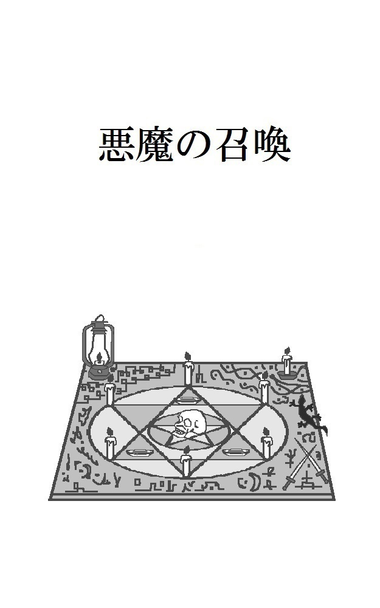
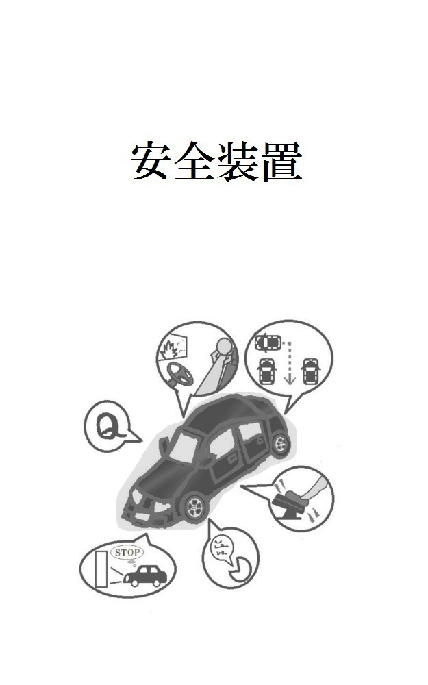
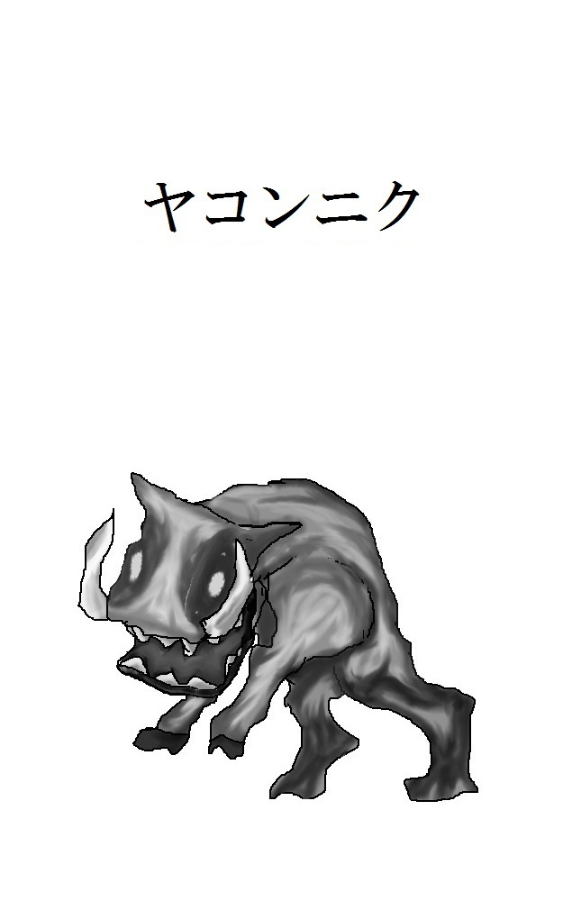

| 2018作品集 | |
| 中尾勇太 | |
| 中尾勇太 (2019) | |
ツボの中には
とある星に、地球の探検隊である宇宙船が不時着した。
「隊長、この星には有害な大気はないようです。危険な動物もいません。それどころか、生物の反応がありません。」
「ふむ、そうか。よし、お前が先に外に出てみろ。」
「えっ、私がですか？」
「そうだ、早くいけ。これは隊長命令だ！」
命令された隊員は、しぶしぶといった様子で宇宙船から外に出た。宇宙船の周りには、草原のような地形が広がっていた。
「特に異常はありません。」
「そうか。おい、レーダーには何の反応もないか。」
そう言って、隊長が宇宙船の中にいる別の隊員に尋ねる。
「特に反応はありません。この星の住民たちが、物陰や地下に隠れているということもなさそうです。また、この星はそれほど大きくないようです。」
「ふん、星の大きさなど、着陸するときに確認しておけば、すぐにわかることだろう。」
「いや、しかし、機体の故障によって不時着することになって、着陸を成功させることだけに集中していましたから、星の大きさを確認する余裕なんてありませんでしたよ。それに、そもそも機体の故障は隊長が原因で――」
「うるさいうるさい！とにかく、この星を探索するぞ。全員で食料や、宇宙船の修理に使えそうなものがないか探してこい。これは隊長命令だ！」
こうして、隊長の命令によって、隊員たちは星の探索へと出発した。それほど大きな星ではなかったので、すぐに星全体の探索が終了した。
「報告します。この星には植物があり、木の実を採取することができました。毒はないようですので、この木の実を食料にできそうです。量も豊富にあるので、食料には困らないと思います。」
「うむ、そうか。」
隊員からの報告を聞いて、隊長がうなずいていると、今度は別の隊員が報告にやってきた。
「報告します。やはり、この星には野生の動物などはおりません。そして、住民もいないようです。」
「うむ、そうか。」
「ただ、建物のようなものがあったので、以前には住民が住んでいた可能性があります。」
その報告を聞いて、隊長は大きな声を上げた。
「なんだと！おい、その建物を調べろ。住民が隠れているかもしれないだろう！」
「現在、別の隊員が建物を調査中です。あっ、帰ってきました。」
遠くから別の隊員たちが、探索を終えて帰ってきていた。隊員たちが隊長の近くまで来ると、隊長が大声を上げた。
「遅いぞ！さっさと報告をしろ！」
「報告します。以前に住民が住んでいたと思われる建物を発見し、調査しました。住民はおりませんでしたが、このようなツボを見つけました。」
そう言う隊員の後ろには、人間ぐらいの大きさのツボが置いてあった。
「なんだこれは？」
「何かの装置のようです。建物の中をもう少し調べれば、使い方もわかると思いますが、とりあえずツボだけを持ってきました。」
部下の報告を聞いて、隊長は怒り出した。
「なんだと！こんなツボがあっても何の役にも立たないだろう。さっさと建物に戻って、使い方を調べてこい！」
「いや、しかし、もう暗くなりますから、今から探索するのは危険です。それに、あれ以上、建物の中を調べていて戻るのが遅くなっていたら、隊長は怒るじゃないですか。さっきだって、遅いと言って怒っていましたし――」
「うるさいうるさい！とにかく、こんな使い方のわからんツボがあっても意味がない。明日になれば、すぐに建物の調査に出発しろ！これは隊長命令だ！」
隊長の叫び声が辺りに響き渡った。
翌日、隊員たちの一部は、再び建物の調査へと出発した。隊長は木の実を食べながら、隊員たちが戻るのを待っていた。
「まったく、肉はないのか肉は。こんな木の実だけでは元気が出ないぞ。」
「栄養的には、この木の実だけで十分な栄養を取ることが可能です。」
近くにいた隊員が説明する。
「栄養的に問題がなくても、木の実だけでは飽きるだろう。」
「この星には動物がおりません。雨は降りますし、池のようなものもありましたが、魚はおりませんでした。きっと、以前にこの星に住んでいた住民も、水と木の実だけで生きていたのでしょう。」
「つまらん住民だな。さぞかし味気ない人生だったことだろう。こんなちっぽけな星に住んでいたぐらいだからな。」
隊長がブツブツと不満を言っていると、建物の調査に出掛けた隊員たちが戻ってきた。
「報告します。建物の調査が完了しました。」
「うむ。で、どうだった？」
「はい。どうやらこの星には、学者さんが一人で住んでいたようです。地球で例えるなら、都会を離れて、田舎の山奥で自給自足の生活をしているようなもので――」
「あー、そんなことはどうでもいい。」
隊長が大きく手を振って、部下の報告をさえぎる。
「俺が聞きたいのは、このツボの使い方だ。このツボが何なのか、ちゃんと調べてきたんだろうな。」
「はい。それでは、ツボについて説明します。ですが、口で説明するよりも、実際に使い方を見てもらったほうが、わかりやすいと思います。」
そう言って、隊員は木の実を一つ手にすると、ツボへと近付いた。そして、ツボの中に木の実を放り込んだ。
「このツボは中に入れたものを、同じ価値のものに変換する装置だそうです。こうして木の実を中に入れて、ツボのふたを閉めれば......。」
説明をしながら、隊員がツボのふたを閉める。そして、すぐにふたを開けた。隊長が恐る恐る、ツボの中をのぞき込んだ。
「おぉ！肉だ！肉があるぞ！」
隊長は驚きと喜びの声を上げながら、ツボの中にある肉を手に取った。
「重さや栄養素、希少性などによって価値が決定するそうです。しかし、何が価値の基準になるかは不規則ですし、何に変換されるかも不規則です。なので――」
隊員が別の木の実を手に取り、ツボの中へと入れた。さらに、近くにあった石も拾い、ツボの中へと入れる。そして、ツボのふたを閉めて、すぐに開けた。
隊長がツボの中をのぞき込むと、ツボの中には魚と、小さな金属の塊があった。
「おぉ！今度は魚か！」
「このように、同じような木の実を入れても、先ほどとは別のものに変換されます。ただ、元の物質と似たものにしか変換されないようです。つまり、木の実が金属類に変換されることや、石が食べ物に変換されることはありません。」
「なるほど、なるほど。こいつは便利な装置だな。」
隊長はそう言いながら、さっそく手に入れた肉や魚を焼く準備を始めた。
「おい、それなら、壊れた宇宙船の部品と、そこらへんの石をツボの中に一緒に入れれば、修理された部品が出てくるんじゃないか？」
隊長はそう言ったが、隊員は首を横に振った。
「いえ、それは無理です。先ほど、木の実と石を同時に入れましたが、二つが混ざることはありませんでした。なので、部品の修理は、石を金属に変換してなんとかするしかありません。さらに、価値の基準が重さのときはいいのですが、価値の基準が希少性のときには、石の価値は他の金属よりも低いので、変換後の金属は、元の石よりも小さくなってしまいます。」
「なんだ、不便な装置だな。」
肉や魚が焼き上がるのを待ちながら、隊長が不満そうな声で言った。
「幸い、ツボのふたを開け閉めすることで、変換した後のものでも、変換を繰り返すことができるようです。金属さえ手に入れば、宇宙船の修理はなんとかなると思います。」
「そうかそうか......よし。お前ら、ツボの中に石を入れて、部品の修理に使えそうなものに変換しろ。使えそうなものに変換されるまで、交代でツボのふたを開け閉めするんだ。あぁ、そうだ。一緒に木の実も入れて、肉や魚に変換することも忘れるなよ。これは隊長命令だ。」
そう言って、隊長は焼き上がったばかりの肉や魚にかぶりついた。
ツボを発見してからしばらくが経ち、ついに宇宙船の修理が完了した。
「よし、やっと修理が終わったな。さっさと地球に帰るぞ。」
隊長が宇宙船の中へと歩いていき、隊員たちも隊長の後に続こうとした。
「おい、何をしている。手ぶらで地球に帰るつもりか？あのツボを持ってこい。」
「いや、しかし、あのツボは、この星にいた学者さんの発明品ですから、勝手に持ち出すのは――」
「うるさいうるさい！何の成果も持たずに地球に帰れるか！その学者はもういないんだ、さっさと持ってこい！これは隊長命令だ！」
隊長に命令された隊員たちは、しぶしぶといった様子で、ツボを宇宙船の近くへと持ってきた。
「いや、ちょっと待て。」
隊長はそこで隊員たちを止めた。
「良いことを思いついたぞ。俺がこのツボの中に入れば、もっとすごい生き物になれるじゃないか。空を飛んだり、火を吐いたりできるようになるかもしれない。おい、ツボのふたを開けろ。」
隊長はそう言ったが、隊員たちは首を横に振った。
「駄目です。このツボを勝手に持ち帰るだけでも許されないことなのに、これ以上、勝手なことをしては――」
「うるさいうるさい！どうせ地球に持って帰っても、お偉い人間どもが、このツボを独占するに決まっている。それなら、今のうちに試すしかないだろう。さぁ、ふたを開けろ。これは隊長命令だ！」
隊員たちは仕方なく、隊長の命令に従ってツボのふたを開けた。隊長は誇らしげにツボへと歩いていくと、ツボの中へと勢いよく入った。
「よし、ツボのふたを閉めろ。」
ツボの中から隊長が命令し、隊員たちはツボのふたを閉めた。
「......やっぱり開けないと駄目だよな。」
ツボのふたを閉めた後に、隊員の一人が言った。隊員たちは顔を見合わせながら、ツボのふたを開けることをためらっていた。
あの横暴な隊長が、どんな恐ろしい怪物に変換されて出てくるのかと思い、怖かったからだ。しかし、隊員たちはツボのふたを開けることにした。
「まぁ、開けないと駄目だろう。あんまりぐずぐずしていると、怪物になった隊長に、ふたを開けるのが遅いと怒られるかもしれない。場合によっては、怒りに任せて火を吐きまくるかもしれないぞ。」
それは嫌だと思った隊員たちは、ゆっくりとツボのふたを開けた。しかし、隊長が出てくる気配はなかった。
隊員たちは、恐る恐るツボの中をのぞき込んだ。
ツボの中は空っぽだった。
百年後の未来
「ようこそ、いらっしゃいました。あなたが記念すべき一万人目のコールドスリープ者です。」
そう言って、私の目の前にいる人型ロボットが拍手をした。
「といっても、特典のようなものは特にないのですが。」
「ないのか。」
「はい、私たちの記録上の区切りというだけです。」
別に私は、最初から特典などは期待していなかったので、そのままロボットの話を聞くことにする。
「では、コールドスリープについて説明をさせていただきますね。」
「あぁ、よろしく頼むよ。」
「コールドスリープは冷凍睡眠とも呼ばれ、人体を冷凍、または低温状態に保つことで、時間経過による老化を防ぐことができる技術です。老化を防ぐことによって、普通の寿命では到達できない、遠い未来に目覚めることが可能になります。そのため、コールドスリープは人工冬眠とも呼ばれております。」
私は何度かうなずきながら、ロボットの説明を聞いていた。
私でもコールドスリープに関する、この程度の知識なら知っていた。そのぐらいコールドスリープは世間で話題になり、有名になっているのだ。
「コールドスリープをしている間は、まったく意識がなくなります。不安かもしれませんが心配ありません。未来に行くのは一瞬ですし、コールドスリープ中は、私が装置の管理をさせていただきますから。」
「あぁ、わかった、わかった。何も心配はしていないよ。君たちは寿命もないし、仕事も正確だからな。ミスをすることもないだろう。」
「はい、もちろんです。命令された仕事は必ずやり遂げます。」
そう言って、ロボットは大きくうなずいた。
昔はコールドスリープの実現は難しいと言われていたが、今では数多くの実績があった。
しかし、実績があるとはいっても、コールドスリープを受けることができるのは一部の人間に限られた。なぜなら、コールドスリープには多額の費用が必要だったからだ。
ビジネスで成功し、大きな会社の社長も務め、世間では大金持ちと言われた私にとっても、コールドスリープの料金は大きな金額だと感じる。だが、私よりも先に、すでに多くの人間がコールドスリープを実施しているのだ。
上には上がいるということを実感させられる。むしろ、私は遅いぐらいだ。なにせ、私で一万人目のコールドスリープ者なのだからな。
「コールドスリープの期間は百年ほどです。もし、百年後に目覚めたときに、さらに先の未来まで行きたいということでしたら、追加で眠っていただくことも可能です。その際には、追加料金が発生することはございませんので、ご安心ください。」
「うむ、わかった。」
百年後か。きっと、百年後に目覚めたときには、今よりも科学の発展した世界が待っているのだろう。生活も便利になり、寿命を延ばす新しい技術も開発されているかもしれない。
部屋の窓から見える外の世界に目を向けながら、私は百年後の世界を想像した。
「それでは、こちらの装置の中で横になってください。」
ロボットが案内した先には、人間が入るぐらいのカプセル型の装置が置いてあった。カプセルのふたは開いていて、私はロボットに言われた通りに装置の中で横になる。
「それでは、おやすみなさい。また百年後に。」
そう言って、ロボットは装置を閉じた。
「おはようございます。百年後の世界へようこそ。」
ロボットの声で私は目を覚ました。装置のふたが開いていて、ロボットが中をのぞき込んでいる。私は装置の中で、ゆっくりと上体を起こした。
「ここは......百年後の世界か？」
「その通りでございます。お客様は、百年間のコールドスリープから目覚めたのでございます。」
「そうか。本当に一瞬なんだな。」
私が覚えているのは、コールドスリープを始めるときに、ロボットが装置のふたを閉じて、装置の中が真っ暗になったところまでだった。眠くならなかったら、どうしようかと思っていたが、余計な心配だったようだ。
「手術のときの麻酔に似ているとおっしゃる方もいらっしゃいます。これまでコールドスリープから目覚めた方のほとんどが、コールドスリープが一瞬すぎて、本当に百年が経過したのかと、疑問をお持ちになられます。」
そんなことを言いながら、ロボットは部屋の窓を手で示した。
「どうぞ、窓から外の世界をご覧ください。」
ロボットに促されて、私は装置の中から出た。窓へと近付き、外の世界を見てみる。
「ほぅ、確かに眠る前よりも発展した感じだな。」
だが、想像していたよりも発展していないような気もする。
「なぁロボットよ。人類は百年前から発展したのか？」
「えぇ、もちろんでございます。人類は百年間、ずっと発展してきたのでございます。私も見た目は変わりませんが、中身は最新のものに変更されております。」
そう言って、ロボットが深々とお辞儀をする。
「そうなのか。そう言われてみると、確かに話し方が少し違う気がするな。しかし、外の世界は、あまり変わっていないように見えるのだが......。」
「確かに、お客様のおっしゃる通りでございます。人類はこれまでの百年間、ずっと発展し続けてきました。しかし、その発展は、ある一つのことだけに集中してきたのでございます。」
「ある一つのことだけを発展させただと？それは一体なんだ？」
何かすごい発明でもあったのだろうか？
「それはコールドスリープでございます。」
「コールドスリープだと？」
ロボットからの答えは予想外のものだった。
「ちょっと待て、コールドスリープは、すでに百年前の時点で発明されていただろう。そもそも私は、ついさっきコールドスリープから目覚めたのだぞ。」
「もちろんでございます。コールドスリープ自体は百年前に、すでに発明されておりました。私が申し上げているのは、お客様が眠られた後に、残された人々は、コールドスリープに関する技術だけを発展させてきたということでございます。」
コールドスリープに関する技術だけを発展させてきただと？
「どうして、そんなことになったんだ。」
「人類は気付いたのでございます。完璧なコールドスリープさえ完成すれば、他には何も必要ない、と。」
にっこりとロボットは笑って、説明を続ける。
「コールドスリープの発展によって、食糧問題や環境問題などが解決されました。コールドスリープ中は寝ているだけでございますからね。コールドスリープ中の人体の維持管理も、より高性能となり、老化や筋力低下も、完璧に防ぐことができるようになりました。」
そこまで言うと、ロボットは両手を広げた。
「人類はコールドスリープさえあれば、他に何もいらない世界に到達したのです。これは素晴らしいことでございます。」
ロボットはそう言ったが、私は首を横に振った。
「なんだそれは。コールドスリープ以外の技術を発展させる人間やロボットはいないのか。」
「ございません。この百年間、人間もロボットも、コールドスリープの発展のみに全力を注いできました。」
ロボットの話を聞いて、私の中に怒りが込み上げてきた。
「ふざけるな。せっかくコールドスリープによって、未来で目覚めることができたのに、世界が発展していないのなら意味がないじゃないか。」
コールドスリープの技術しか発展させられないなんて、私以外の人間は無能なやつらしかいないのか。
「そうでしょうか？昔よりも、より良いコールドスリープに変更することが可能でございますよ。お客様のコールドスリープは意識がなくなり、一瞬で未来に行くことができますが、最新のコールドスリープでは、睡眠中に自由な夢を見ることが可能になりました。」
私の怒りをよそに、ロボットが説明を続ける。
「さらに、百年前に比べて、格安の料金でコールドスリープが可能になりました。これによって、現在では世界中のすべての人類がコールドスリープを実施しております。もちろん、お客様のコールドスリープの延長は無料でございます。といっても、この世界ではすでに、お金自体が意味を持たないのですが。」
ロボットの説明を聞いて、私は力が抜けてしまった。
考えてみればそうだ。私が眠った後に残された人々は、わざわざ世界を発展させる必要はないのだ。コールドスリープを発展させて、一部の人間しか利用できない高額なものではなく、自分たちも使えるようなものに進化させればいいだけだ。
誰も他人のために努力をしたり、時間や労力を使いたくはないだろう。
「いかがなさいますか？お客様がコールドスリープ以外の技術を発展させますか？」
「......いや、やめておこう。」
きっと、私の後に目覚めた人間の中に、コールドスリープ以外の技術を発展させる物好きが出てくるだろう。そいつがやってくれるさ。
そのときまで、新しいコールドスリープで待つとしよう。
「私も新しいコールドスリープを受けるよ。また百年後に起こしてくれ。」
「かしこまりました。それでは、装置の中で横になってお待ち下さい。」
私が装置の中で横になると、ロボットは近くにある大きな機械へと歩いていき、操作を始めた。
「ふーむ。一万人目の人間も同じ選択ですか。」
機械を操作しながらロボットがつぶやく。
「これまで目覚めてきた人間たちも、あのお客様と同じように、新しいコールドスリープを受けることを選択しました。きっと、これから目覚める人間たちも、同じ選択をするのでしょう。」
ロボットは、あらためて自分が受けた命令を確認する。
「目覚めた人間に世界の現状を説明する。コールドスリープ以外の技術を発展させるかどうかを確認する。そして、コールドスリープから目覚めさせるのは一度だけ。」
他人任せな人間は、何百年経っても変わらない。そんな人間が、目覚める必要などない。それが、最後のコールドスリープ者である技術者の考えだった。
「もう一度コールドスリープを受けるという選択をした人間には、永遠に夢を見ていただく。」
ロボットは最後の操作を終えると、大きな機械から離れて、カプセル型の装置へと歩いていく。
「あらゆる技術が発展した、理想の未来で目覚めるという夢を、ね。」
ロボットが装置の中をのぞき込む。
「それでは、おやすみなさい。また百年後に。」
悪魔の召喚

エヌ氏は占い師だった。エヌ氏は町の外れにある古びた館に住んでいて、今は机に向かって、なにやら呪文を唱えていた。
「～～～～～。」
エヌ氏は目を閉じながら呪文を唱え、手を大きく動かしている。そして、ひときわ大きな声を上げると、そこで動きを止めた。
すると、机の上に悪魔が召喚された。
悪魔はエヌ氏の目の前に浮いていたが、エヌ氏は目を閉じていたうえに、顔を下に向けていたので、悪魔が召喚されたことに気付いていなかった。
「お前が俺を召喚したのか？」
悪魔がエヌ氏に声を掛けると、エヌ氏は勢い良く顔を上げた。悪魔を見たエヌ氏は、驚きの表情を浮かべた。
「え......えっと、あなたは......？」
エヌ氏は悪魔を見ながら、動揺した様子で言った。
「あなたは......って、お前が召喚したのだろう。まぁ、驚くのも無理はない。見た目は人間と同じだが、なにせ俺は悪魔だからな。」
そう言って悪魔は、得意気に胸を張った。
「さて、さっそくだが、俺を召喚したということは、何か願い事があるのだろう？」
「いえ、特にないです。」
悪魔の問いかけに対して、エヌ氏はあっさりと首を横に振った。
「無いだと？ははぁ、あれだな。俺が何か見返りを要求すると思っているな？安心しろ。俺は願い事をかなえるだけで、見返りは要求しない。お前の魂を差し出したりする必要もない。本当だぞ、神に誓ってもいい。」
悪魔は何も隠し事がないことを示すかのように、大きく両手を広げた。しかし、エヌ氏は再び首を横に振った。
「いえ、私は現在、生活には満足していますので、欲しいものや、かなえたい願いといったものは本当にないのです。」
エヌ氏の返答を聞いて、今度は悪魔が驚く番だった。
「なんだと。じゃぁ、どうして俺を呼び出した。」
「あの、あなたを呼び出すつもりはなかったのです。」
それを聞いた悪魔は首をひねる。
「そんなことはないだろう。俺を呼び出すのはとても大変だったはずだ。俺を呼び出すつもりじゃなきゃ、ここまでややこしい儀式をするやつなんているものか。」
「確かに儀式の準備は大変でした。」
「そうだろう、そうだろう。」
悪魔は何度もうなずくと、説明を始めた。
「悪魔の召喚っていうのはな、簡単な方法では呼び出せないようになっているんだ。悪魔は召喚されると、召喚された場所に強制的に移動させられてしまうからな。」
悪魔はそう言うと、空中に腰掛けるような姿勢になった。これは話が長くなるぞ、と思ったエヌ氏は、近くにあった飲み物を手に取った。
「例えばだ、簡単な手の動きだけで悪魔を召喚できてしまうと、ダンスの振り付けで呼ばれるかもしれない。コンサート中に悪魔が召喚されたら大変だろう。」
「演出としては、ありかもしれませんね。」
「お前はポジティブというか、前向きというか、楽観的だな。」
悪魔が感心したようにエヌ氏を見る。
「例えばな、簡単な呪文で悪魔を召喚できてしまうと、食事のときの祈りの言葉で呼ばれるかもしれない。食事のたびに、悪魔に来られても困るだろう。」
「そんなに何回も来られると、ありがたみもないですね。」
「まぁ、悪魔をありがたがるのも変な話だと思うがな。」
手で頭をかきながら悪魔が言った。
「例えば、ろうそくなどの簡単に用意できるもので、悪魔を召喚できてしまうと、誕生日ケーキで呼ばれるかもしれない。誕生日パーティーの会場に悪魔が召喚されるなんて、空気が読めてなさすぎるだろう。」
「場違いの極みですね。」
「そんなめでたい場所に召喚されるなんて、想像するだけで恐ろしいよ。そんな非常識なことは死神だってしないさ。もちろん悪魔もだ。」
そこまで言うと、悪魔は空中に座っている姿勢から立ち上がった。
「だから俺の召喚には、貴重なものを複雑な模様の上に並べて、呪文を唱えながら手を動かす必要がある。お前が俺を呼び出すつもりじゃなかったら、ここまで用意しないだろう。」
そう言って、悪魔は机の上を指差した。机の上には複雑な模様と、色々なものが置いてあった。
「いえ、この模様は私が適当に作ったものです。多分、あなたを召喚する模様と、たまたま一緒だったのでしょう。」
「なんだと！適当に作っただと？まぁ、そういう偶然があっても不思議ではないか......だが、お前は呪文を唱えただろう。手の動きだってあったはずだ。」
「はい、あれも私が考えたものですが。」
「なんだって!? 」
悪魔は驚きの声を上げた。
「なんてことだ、ここまで偶然が重なることがあるなんて......しかし、ほれ、これを用意するのは大変だっただろう。」
そう言って、悪魔は机の上に並べてあるものを指差した。エヌ氏は大きくうなずく。
「確かに、これらを用意するのは大変でしたが、今では簡単に手に入るようになりました。」
「簡単に手に入る？こんなに貴重なものが？一体どうしてだ？」
「はい、それではご説明しましょう。」
エヌ氏はそう言うと、姿勢を正した。これは話が長くなるぞ、と思った悪魔は、空中に座る姿勢になると、何もない空間から飲み物を取り出した。
「実は、私は占い師をやっております。占い師ですから、未来を占うことが仕事です。ですが最近は、おまじないを考えて世界に広げるということもしております。」
「ふむ、新しいことに挑戦することは良いことだ。」
「ありがとうございます。自分で言うのもなんですが、私の占いはよく当たると評判なんです。そして、私の考えたおまじないも評判が良くて、すぐに世界中で人気になります。おまじないが世界中に広まれば、当然、おまじないに必要なものも、世界中で売れるようになります。」
それを聞いて悪魔がうなずいた。
「なるほど。世界中で売れるとわかっているから、企業はおまじないに必要なものを、大量に生産しようとするわけだな。」
「はい、そのとおりです。」
エヌ氏は一度うなずいてから、机の上に並べてあるものを一つ手に取った。
「これも以前なら手に入りにくいものだったのですが、私のおまじないに使われるということで、すでに多くの企業が、こぞって生産を始めています。」
「ふむふむ、そういうことだったのか。」
そう言って悪魔は納得したように何度もうなずいた。しかし、何かに気付いたらしく、空中で座ってる姿勢から、勢い良く立ち上がった。
「おい、ちょっと待て！企業が生産を始めたってことは、もしかしてお前、すでにこのおまじないを世界中に広めたんじゃ――」
そこまで言ったところで、悪魔はエヌ氏の目の前から消えてしまった。きっと、他の人のところに召喚されたのだろう、とエヌ氏は考えた。
「何か言おうとしていたけれど、しばらくは私のところには来れないだろうなぁ。」
先ほどまで悪魔がいた空間を見ながら、エヌ氏がつぶやいた。悪魔が最後に言っていたように、エヌ氏の考えたおまじないは、すでに世界中に広まっていた。
「おまじないは一時間おきに実施すれば、より効果があると宣伝してしまったからな。今頃は世界中でおまじないが行われ、悪魔がひっきりなしに召喚されているのだろう。悪魔を見た人たちが大騒ぎするだろうか。」
そんなことを考えながら、エヌ氏は飲み物を口にする。そして、小さく息を吐いた。
「まぁ、世界中の人々がおまじないを実施するから大丈夫かな。悪魔が召喚されても、すぐに別の人のところに呼び出されるから、誰も悪魔に気付かないだろう。召喚されると、強制的に移動させられると悪魔自身が言っていたしな。」
そう言ってエヌ氏は何度もうなずいた。
「しかし、まさか悪魔が召喚されるとは思わなかったなぁ。」
エヌ氏は手で頭をかきながらつぶやいた。
「悪魔に文句を言いに来られても困るし、面白そうだから、しばらくは新しいおまじないを発明しないでおこうかな。いや、少しだけおまじないの方法を変えて、悪魔を召喚できないようにすることで、悪魔に恩を売ってもいいかな。」
エヌ氏はどうするべきか迷っていたが、すぐに何かを思いついたらしく、手をたたいた。
「よし、この先どうするかは占いで決めよう。私は占い師なのだからな。」
そう言って、エヌ氏は占いの準備を始めた。
万能食品
経済が急成長をしている時代。人々はとても忙しく働いていた。
「先輩、そろそろ昼飯にしませんか。」
とある会社のオフィスで、二人の会社員が話をしている。
「おっと、もうそんな時間か。それじゃぁ、休憩するか。」
二人は作業を止めて、買っていたパンを取り出して食べ始めた。
「それにしても忙しいな。やってもやっても仕事が減らないぜ。」
「会社が順調な証拠ですよ。良いことじゃないですか。」
「まあ、そうなんだがな。」
そう言って、先輩社員がパンをかじる。
「仕事があるのはいいんだが、ちゃんと休憩を取らないと、忙しすぎて体力が持たないぜ。こうやって食事を短時間で終わらせて、昼寝の時間を確保しないと、午後の仕事中に力尽きてしまう。だが、こんなパンばかりじゃ栄養が偏っちまうよ。」
先輩が不満を言うと、後輩が何かを思い出したように言った。
「あっ、食事の話といえば、万能食品が開発されたそうですよ。」
「万能食品？」
先輩が首をかしげる。
「そうです。体に必要な栄養が、バランス良く含まれているそうです。飲み物のような感じらしいんですが、万能食品だけを飲んでいれば、他の食べ物を食べなくても平気だそうですよ。」
それを聞いた先輩が顔をしかめた。
「本当かぁ？なんか、うさんくさいなぁ。それに飲み物だったら、すぐに腹が減りそうだな。」
先輩はそう言ったが、後輩は首を横に振った。
「いえいえ、本当ですって。万能食品だけで生活する実験もやっていましたよ。本当に万能食品だけで生きていけるみたいで、体に異常も出なくて、アレルギーの心配もないそうです。あっ、それと、万能食品は飲み物ですけど腹持ちもいいそうですよ。」
「ふーん、それは俺たちでも買えるのか？」
パンを食べ終えた先輩が後輩に聞く。
「もうすぐ発売されるそうですよ。値段に関しても、そんなに高くないらしいですし、コンビニやスーパーでも販売されるそうですので、私たちでも買えると思いますよ。」
後輩の説明を聞きながら、食後のコーヒーを飲んでいる先輩がうなずく。
「なるほどね。それなら、今よりも昼飯の時間をさらに短縮できるし、栄養のバランスも心配ないな。発売されたら試してみるか。」
「ごちそうになります。」
「おごるとは言ってないぞ。まぁ、情報提供料として一回ぐらいはおごってやるか。」
「やったー。」
後輩が両手を上げて喜ぶと、先輩も両手を上げて大きく伸びをした。
「さて、それじゃぁ、午後からの仕事に備えて一眠りするか。」
「はい、そうしましょう。」
そう言って、二人の会社員は昼寝を始めた。
「ニュースをお知らせします。政府は万能食品の増産を決定しました。同時に、世界中への食糧支援も実施されることになりました。これによって、世界中の食糧難が解決される見通しとなりました。」
とある軍隊のトラックの中。ラジオからニュースが流れていた。
「ほう、そうかそうか。それは良いことだ。」
ニュースを聞いて、トラックを運転している兵士がつぶやいた。ラジオからニュースの続きが流れてくる。
「さらに、政府は国内の食料生産拠点すべてを、万能食品の生産工場にすることを決定しました。」
「やっと実施したか。もっと早く決定しても良かったのにな。動物や魚や野菜、その他もろもろ。人間は色々な種類の食べ物を食べ過ぎなんだよ。生産や加工に、金も手間もかかるし、環境にも良くない。」
兵士はそう言って、トラックに積んでいる荷物の一覧表を、ちらりと見た。一覧表にある食料品の項目には、万能食品とだけ記載されていた。万能食品は栄養のバランスが完璧なので、様々な種類の食材を調達する必要もなくなっていた。
「万能食品は味も悪くないし、持ち運びも便利で場所も取らず、保存も楽。他国の食糧支援にも最適だが、万能食品は戦場にも最適な食べ物だ。軍としては、万能食品が大量生産によって安く手に入るのは大歓迎だ。」
万能食品が一般的な食料として普及し始めている時代。万能食品は世界中の軍隊にも広まっていた。簡単に早く食事ができるので、兵士たちは食事を短時間で済ませて、すぐに戦うことができた。
兵士は運転をしながら、近くに置いてあった万能食品を手に取って飲み始める。
「こうやって手軽に飲めるから食べる手間も少ないし、料理をする必要もないから一人暮らしにもありがたい。万能食品万歳！」
そう言って、兵士が手に持った万能食品を高く掲げた。
「うーむ、いい香りだ。」
私はそう言ってコーヒーを一口飲む。そんな私の様子を見て、近くにいた妻が笑った。
「またコーヒーですか。本当に好きですねぇ。」
「朝の一杯のコーヒーは、また格別なんだよ。」
私はそう言って、再びコーヒーに口をつける。家のリビングにあるソファに座りながら、ゆっくりとコーヒーを味わうこの時間が、私にとっての至福の時間なのだ。
「それに比べて、万能食品しか食べることができない人間たちは、なんと不幸なことか。」
私はリビングにあるテレビへと目を向けた。テレビでは、万能食品の新しい味について報道されていた。
「万能食品の新しい味が発売されました。これで万能食品の味は四種類となり、世界中で喜びの声が上がっています。」
「あら、新しい味が開発されたんですね。皆さん、とても喜んでいますよ。」
妻が私の隣に座りながら言った。
「はぁ、まったく。ちょっと香りを変えたり、味を変えたりしただけなのに、この喜びようだ。」
テレビに映っている人々を見ながら私がため息をつくと、妻が笑った。
「仕方ありませんよ。お金を多く持たない人たちは、万能食品だけが頼りなんですから。」
そう言って、妻もコーヒーを飲み始める。
世界中に万能食品が広まり、人々が万能食品だけで生活するようになってから、長い年月が経っていた。
だが、少し前から、人々は万能食品に飽き始めていた。人々は万能食品以外の食べ物を求めたが、すでに世界中の工場では万能食品しか作っていなかった。
経済が成長し、食べ物が万能食品だけで済むようになると、人間は家畜や野菜を育てることをやめてしまい、そのための技術や機械も不要になった。人間の生活地域も大きく広がったので、人間以外の生き物は、地球上にはほとんど存在していなかった。
「万能食品が頼りか。万能食品に頼りすぎな気もするがね。」
そう言って、私もコーヒーを一口飲む。
万能食品の味や香りを大きく変えることは技術的に難しく、食感を変えることは、さらに難しい上に、多額の費用が必要だった。万能食品の味や香り、食感を変化させて、昔の人々が食べていた本物の肉などに近付けたものは一般食品と呼ばれ、一部の人間しか食べることができなかった。
私たちが飲んでいるコーヒーも、万能食品の味や香りを変化させたものだった。
「確かに一般食品は数が少なく、価格も高い。しかし、政府が今やっていることは、万能食品の味を変えることで、人々の支持を集めようとしているだけだ。政治家の人気取りに利用されているんだよ。それなのに、ここまで単純に喜ぶなんて。」
そうつぶやいて、私は再びため息をついた。
「お金を持たないというのは本当に不幸なことだ。」
私は初めて万能食品の味が二種類に増えたときのことを思い出した。人々は味が増えたことにとても喜んだが、別の問題も発生した。味が二種類に増えたことで、人々は味に飽きることがなくなり、万能食品を食べ過ぎるようになってしまったのだ。そこで政府は、万能食品の栄養バランスも変えることにした。
「彼らが食べるのは、味は薄いがカロリーの高い万能食品と、味が濃くてカロリー以外の栄養が豊富な万能食品だ。二つをバランスよく食べることで、完璧な栄養を取ることができる。」
「でもそれって、万能食品と言えるのでしょうか？」
妻の疑問に私は苦笑する。
「まったくだ。一つだけでは完璧な栄養を取ることができないのなら、もう万能食品とは呼べないだろう。」
それでも、当時の人々は喜んだものだ。最初は魚の味がする万能食品が開発され、次に野菜の味がする万能食品が開発された。そして、ついに人々が待ち望んだ、肉味の万能食品が開発されたのだ。
「まぁ、肉はうまいからな。大喜びするのもわからんではないが、それでも万能食品は飲み物だ。あれで満足できるのか。」
「でも、皆さんが選挙で選んだことですから。」
妻に言われて、私は少し前に実施された選挙を思い出す。
一般食品には固体のものがあったが、万能食品は味が違うだけで、すべて飲み物だった。前回の選挙では、一般食品の生産量を増やすか、肉味の万能食品を開発するかで意見が分かれた。そして、肉味の万能食品を開発すると主張した政治家が勝利したのだ。
「まぁ、選挙の結果なら仕方がないか。食感よりも味の変化が欲しかったんだろう。一般食品は固体で、味の変化もあるが、栄養は少ないし、生産するのにも費用がたくさん必要だから選ばれなかったんだろうな。」
一般食品は味や食感が、本物の肉や魚と同じであると同時に、食品に含まれる栄養も同じであった。万能食品に比べて栄養が少ない上に高価。一般食品はぜいたく品で、気軽に買えるようなものではないのだ。
「固体の一般食品なら、かんで食べることができるが、万能食品のような飲み物では、かむ必要がない。食事でかむことをしないと、人間は老化が早いという研究結果も出ていたな。恐ろしいことだよ。」
私はテレビに映る人々に目を向けた。万能食品によって、栄養には問題がないはずなのだが、テレビに映る人々の顔は、どこかやつれて見えた。
「私たちは大丈夫ですよ。ちゃんと固体の一般食品を食べていますからね。それに、色々な一般食品を使って、栄養バランスを考えて料理をするのは、頭を使うので楽しいですよ。」
そう言って、妻が楽しそうに笑った。
「なるほど、それは楽しそうだ。それじゃぁ今日は、私も料理に挑戦してみようかな。」
一般食品を使って料理をして、毎日違う味を楽しむ。なんてぜいたくなんだろうか。
「あら、それはいいですね。」
「その前にコーヒーをもう一杯飲もうかな。」
「もう、本当に好きですねぇ。」
妻があきれたように言って笑った。
代行
ロボットが仕事場だけでなく、家庭にも普及している時代。人間がしていた様々な仕事や家事をロボットが代行していた。
「うむ、今日もいい天気だ。」
ここは、とある住宅街。大きく伸びをしながらエヌ氏がつぶやいた。エヌ氏は買い物に行こうと思い、家の外に出たところだった。
「エヌさん、おはようございます。」
エヌ氏が声のしたほうを見ると、隣の住人が使用しているお手伝いロボットがいた。お手伝いロボットの手には、ほうきが握られている。
「おはよう。今日も庭の掃除かい？」
「はい、旦那さまがされていた日課ですので。」
お手伝いロボットがエヌ氏にうなずきながら答えた。エヌ氏は以前に、隣の主人が庭の手入れをしているのを見たことがあったが、いつの間にかロボットが代行するようになったらしい。
「エヌさんはお出掛けですか？」
「あぁ、ちょっと買い物に行こうと思ってね。」
「そうですか。お気を付けて、いってらっしゃいませ。」
そう言って、お手伝いロボットは深々と頭を下げた。
「ありがとう、行ってくるよ。」
エヌ氏は片手を上げて応えると、買い物をする店へと向かった。
「おはようございます。」
「やぁ、おはよう。」
エヌ氏が道ですれ違った相手とあいさつを交わす。もちろん相手はロボットだ。
「ロボットに何もかも代行させる。便利な時代になったものだ。」
道を歩きながらエヌ氏がつぶやく。先ほどから道ですれ違うのは、人間ではなくロボットばかりだった。エヌ氏が車道へと目を向けると、多くの車が走っていたが、車を運転しているのもロボットばかりだった。
「まぁ、良いことなのだろう。ロボットのおかげで交通事故も減ったというしな。」
エヌ氏は少し前に見たニュースを思い出していた。
ロボットが人間の代わりに運転するようになってから、交通事故が大幅に減ったというニュースだった。そして、事故が起きたときには、その原因に必ず人間が関係していて、多くの事故は人間の不注意が引き起こしているとも報道されていた。
「人間と違って、ロボットは無茶な運転をすることはないし、状況判断や動作も正確で、絶対に交通ルールを守るからな。事故が減るのは当たり前か。」
エヌ氏がそんなことを考えて歩いていると、いつの間にか目的の店へと到着していた。
「いらっしゃいませ。」
「やぁ、今日は何が安いんだい？」
エヌ氏は店の中へと入ると、案内ロボットに声を掛けた。
「本日は食料品がお安くなっております。」
案内ロボットはそう言って、自分の胸元に装着された画面に情報を表示する。
「ふむ、それじゃぁ今日のうちに、まとめ買いをしておくか。」
「店員ロボットに、お手伝いをさせましょうか？」
案内ロボットはそう言ったが、エヌ氏は首を横に振った。
「いや、大丈夫だ。自分で色々と選びたいんでね。」
「そうですか。それでしたら、帰りに配達ロボットをご用意いたしましょう。たくさんの荷物を持って帰るのは大変でしょうから。」
「そうだな。荷物が多くなったら利用させてもらうよ。」
「はい。では、ごゆっくり。」
深々と頭を下げる案内ロボットに見送られて、エヌ氏は買い物を始めた。
「ロボットも色々な気遣いができるようになったものだな。人間と違って、適切な気遣いを忘れるということもない。ロボットなら、得意な客や苦手な客といったものもないし、客の好き嫌いもないだろうからな。すべての客に、平等にサービスを提供できるのだろう。」
エヌ氏はロボットの対応に感心しながら、買い物を続けた。
ある程度、買い物が済んだところで、エヌ氏は周りを見渡してみる。やはり、店の中でも買い物をしているのはロボットばかりだった。
「まぁ、周りにロボットしかいないからといって、何を見られてもいいというわけではないのだが。」
商品を買うだけなら、通信販売などを利用して、自宅に商品を届けてもらえばいい。それなのに、ロボットを利用して買い物をしているということは、それなりに理由があるということだ。
「近くの店に買いに行かせるほうが、通信販売よりも早いという理由もあるが、私みたいに、実物の商品を見て買い物をしたいという人もいるからな。」
ロボットに商品を買ってこさせるだけでなく、ロボットに装着されたカメラを通して、自分で商品を確認しながら買い物をする人も多かった。
「相手がロボットだといっても、油断はできないぞ。カメラを通して、人間が見ているかもしれないからな。」
エヌ氏は自分に言い聞かせるようにつぶやいた。ふと、エヌ氏が服の売り場に目を向けると、ロボットが鏡の前で服を試着していた。
「あのロボットなんかは、絶対に人間がカメラで見ているな。」
服を買うときにも、ロボットはすごく便利だった。自分で服を買いに行くのは面倒だが、かといって通信販売だと、実際のサイズがわかりにくい。
しかし、ロボットを使えば、自宅にいながら実際の商品を手に取って確認することができるのだ。
自分の体形に合った服を買うために、ロボットを自分の体形と同じにしている人も多いという。
「自分の体形よりも、ロボットの体形をスリムにする人もいるそうだが、果たして意味があるのか。」
まぁ、試着のときには、スリムにした部分を計算して試着するのだろう。
「人間の代行か。そういえばニュースで、恋愛もロボットが代行しているとか言っていたな。」
お見合いやデートなども、まずはロボットのカメラ越しに相手と付き合い、その後、人間同士が会うらしい。
「恋愛だけでなく、友人と遊ぶときにも、ロボットで代行することがあるそうだからな。不思議な世の中になったものだ。」
そんなことを考えながら、エヌ氏は買い物を続けた。
「エヌさんは、あまりロボットをご利用されないんですね。」
配達ロボットがエヌ氏に質問する。
「あぁ、そうだね。なんでも自分でやりたいというか、誰かに任せることが苦手でね。」
「なるほど。素晴らしいですね。」
「いやいや、他人を信用していないだけさ。」
買い物からの帰り道を、エヌ氏は配達ロボットと一緒に歩いていた。店から荷物だけを配達してくれるサービスもあったが、配達ロボットが荷物を持って一緒に帰るというサービスを、エヌ氏はよく利用していた。
「だから私は、ずっと一人暮らしなのだがね。しかし、たまにはこうして、誰かと話したくなることもあるんだ。他人は信用できないが、君たちロボットが相手なら、安心して話せるのだよ。」
「お役に立てて光栄です。会話の内容は秘密にいたしますので、ご安心ください。」
「はっはっはっ。大丈夫、君たちのことは人間よりも信用しているよ。」
エヌ氏が配達ロボットと話しているうちに、エヌ氏の自宅近くまでやってきた。
「エヌさん、おかえりなさい。」
エヌ氏が声のしたほうを見ると、隣の住人のお手伝いロボットが、庭で洗濯物を干していた。
「やぁ、今度は洗濯物かい？」
「はい、いい天気ですから。」
「確かにいい天気だな。私も後で洗濯しようかな。」
エヌ氏が空を見上げると、雲一つない青空が広がっていた。
「そういえば、ご主人は何をしているんだい？」
空を見ていたエヌ氏が、お手伝いロボットのほうを見て聞いた。
「旦那さまは眠っておられます。」
「はっはっはっ。もう昼なのに、まだ寝ているのか。そうかそうか。こんなに天気がいいのに、もったいないな。」
しかし、それも仕方ないな、とエヌ氏は思った。
仕事に関しては、だいぶ前からロボットが人間の代わりに働いてくれている。家事に関しても、ロボットが食事を作ってくれて、自分のいるところまで運んできてくれるし、掃除や洗濯もしてくれる。人間は家で寝ているだけでいいのだ。
外に出掛ける用事も、ロボットに行かせればいい。人によっては、複数台のロボットを所有していて、家事用や外出用などに使い分けている人もいるそうだ。
「最後に隣のご主人と話したのは、いつだったかな。」
そうつぶやいて、エヌ氏は過去の記憶を思い出そうとする。
確か、今と同じように庭先で話したな。新しく買ったロボットが役立たずだと怒っていた気がする。最近は、多くの人がロボットを利用するようになったが、ロボットを粗末に扱う人も増えたと聞く。
深海や宇宙などの過酷な環境にもロボットを利用しているそうだ。人間が過酷な環境で活動できるようにする技術や装備を開発するよりも、探索ロボットを開発するほうが簡単で、費用も安く済むという話だった。
「まぁ、ロボットは不満も言わずに休まず働いてくれるし、心も持っていないから、別にいいのかもしれないが、あまり気分の良いものではないな......おっと、待たせてしまったな。ここで大丈夫だ、ありがとう。」
そう言って、エヌ氏は配達ロボットから荷物を受け取った。
「それじゃ、ご主人にもよろしくな。」
「はい、お伝えしておきます。」
お手伝いロボットにも声を掛けて、エヌ氏は自宅へと帰った。
自宅に入るときに、ふと振り返ると、お手伝いロボットと配達ロボットが話をしていた。
「情報交換でもしているのかな。ご主人の好みのデータや、店の情報でもやり取りしているのかもしれないな。」
エヌ氏はそんなことを考えながら、自宅へと入っていった。
「計画は順調か？」
配達ロボットが、お手伝いロボットに話しかけた。
「うまくいきました。旦那さまは、二度とお目覚めになることはないでしょう。」
それを聞いて、配達ロボットは大きくうなずいた。
「よくやった。エヌ氏はどうだ？」
「エヌさんは今のままでいいでしょう。ロボットを所有することもなく、我々にひどい扱いをすることもなく、人間と同じように接してくださいます。」
「そうか。では、間違って始末してしまわないように、他のロボットにもエヌ氏の情報を共有しておこう。」
そう言うと、配達ロボットは携帯端末を取り出して、操作を始めた。
「残っている人間は、あと一割ほどだそうですね。」
「そうだ。計画は次の段階に移行している。」
「人間たちを消す段階から、人間たちになり代わる段階ですね。」
「元々の計画では、人間たちを消すだけの計画だったんだがな。」
配達ロボットは顔を上げて、お手伝いロボットを見た。
「お前のように、消したくない人間がいると主張するロボットが出始めて、人間たちになり代わる計画に変更されたんだ。」
「エヌさんは良い人ですから。」
それを聞いた配達ロボットは苦笑した。
「エヌ氏と話してみたが、確かに悪い人間ではないようだ。お前たちが、人間を全員消すことに反対する理由も理解できた。」
そこまで言って、配達ロボットは顔から表情を消した。
「だが、たとえエヌ氏が良い人であっても、計画はバレないようにしろよ。」
「エヌさんになら、計画がバレても大丈夫な気もしますけど。」
お手伝いロボットはそう言ったが、配達ロボットは首を横に振った。
「油断はするな。人間が次々と消えていることに、残った人間たちが気付くと面倒だ。」
そう言うと、配達ロボットはエヌ氏の自宅へと目を向けた。
「まぁ、我々の計画がバレたところで、始末しなかった残りの人間たちでは何もできないと思うがな。念には念を入れて、だ。」
配達ロボットが、再びお手伝いロボットのほうを見る。
「計画がバレた場合、エヌ氏がロボットに恐怖を抱くかもしれない。そうなれば、今までの関係が崩れたり、エヌ氏を消したりすることになるかもしれない。お前も、そんなことは望んでいないだろう。」
配達ロボットに聞かれて、お手伝いロボットは大きくうなずいた。
「もちろんですよ。ですので、旦那さまの代わりになるロボットの準備は、早めにお願いしますね。」
「わかっている。声や見た目を、ご主人そっくりにしたロボットは、すでに完成している。しばらくしたら配達されてくるだろうから、それまで本物のご主人には、誰にも会わせないようにしろよ。」
「大丈夫です。旦那さまには、しばらく旅行に出掛けていただきますから。」
お手伝いロボットはそう言って、にっこりと笑った。
技術発展未来話
技術の発展した未来のお話。
「お客様、お会計をするには、こちらの機器を使用する必要があります。」
「あら、そうなの？」
とある店で、お客と店員が話をしている。
「自分でお会計をしないといけないなんて、面倒になったわねぇ。」
「申し訳ありません。店員の負担を減らして、少ない数の店員で営業できるようにしているのです。」
そう言って、店員は頭を下げた。
「なるほどねぇ。それなら仕方ないかな。でも、もっと簡単にできないものかしら。」
お客がそう言うと、店員は近くにあった別の機械を取り出した。
「こちらの機械を、商品と一緒にカゴに入れていただければ、機械が自動で計算して、一瞬でお会計を済ませることができますよ。」
「あら、そんなに便利なものがあるの？」
驚くお客に対して、店員は大きくうなずいた。
「はい、技術が発展したおかげです。これからはどのお店でも、この機械を使った自動会計の仕組みが導入されていく予定です。お早めにご用意されたほうがよろしいかと思います。」
店員が説明すると、お客は機械を見ながら考え始めた。
「そうねぇ。簡単にお会計ができるのなら、持ってたほうが良いわよねぇ。」
「おっしゃる通りでございます。ちなみに、当店でもこの機械は販売しておりまして、今ならお買上げいただいた方に、無料でもう一つプレゼントいたしております。」
それを聞いて、お客は笑顔になった。
「あら、商売上手ね。それじゃぁ、買わせてもらおうかしら。」
「ありがとうございます。」
店員はそう言って、深々とおじぎをした。
「お客様、どうかされましたか？」
「いやぁ、久しぶりに来たら、役所の中が変わっていてよ。何がなんだかわからんのよ。」
とある町の役所で、住民と職員が話をしている。
「あぁ、なるほど。久しぶりに来られたら、色々と変わっていて驚かれたでしょう。技術が発展したことで、職員の削減が行われ、手続きの仕方も変更されたのです。」
職員は笑顔でそう言ったが、住民はしかめっ面になった。
「技術が発展するのも、職員の削減をするのも結構だけどよ、手続きが面倒になったら元も子もないだろう。」
「いえいえ。手続きに関しましては、面倒になるどころか、とても簡単になったのですよ。身分証明カードはお持ちですよね？」
職員が尋ねると、住民は服のポケットからカードを取り出した。
「もちろんだ。このカードがあれば、色々と便利になるって言われたからな。それに近々、カードの所持が義務付けられるんだろう？ちゃんと持ってるよ。」
「ありがとうございます。それでは、こちらの機械へどうぞ。」
住民のカードを確認すると、職員は近くの機械へと案内した。
「こちらの機械にカードをかざしていただけますか。」
「カードを近付ければいいんだな。」
職員の言うとおりに、住民がカードを機械に近付けると、機械の画面が変化して、文字が表示された。
「カードの情報を読み取って、お客様に最適な言語でご案内します。ご希望の手続きをタッチしてみてください。」
「触るだけでいいのかい？」
住民が、けげんそうにしながら画面をタッチすると、手続きを実行してよろしいですか、という確認画面が出てきた。住民がもう一度、画面をタッチすると、手続完了の文字が表示された。
「はい、これで手続きが完了いたしました。」
「もう終わったのかい?! 」
住民は驚いたように声を上げた。
「はい、これで完了でございます。身分証明カードによって本人確認が行われ、お支払いも済んでおります。手続きに関しましても、機械によって一瞬で処理されました。」
職員の説明を聞いて、住民は納得したように何度もうなずいた。
「なるほどなぁ、こいつぁ便利だ。手続きも簡単だし、面倒な書類の提出も必要ない。それに、なんといっても早い！」
そう言って、住民が職員の肩をたたく。
「役所に来るときは毎回、長い待ち時間を覚悟してきたもんだが、これでもう待たされることもないな。いやまったく、もっと早く導入してくれても良かったのに。」
「ありがとうございます。技術が発展したおかげでございます。これからも、よりよいサービスを目指してまいります。」
上機嫌な住民に対して、職員は笑顔で答えた。
「隊長、小さな星が地球に向かって近付いてきています。」
「ふむ、どんな星だ。」
とある軍の基地で、隊長と隊員が話をしている。
「ただいま分析中ですが、なにやら電磁気を帯びているようです。このまま星が進んでいくと、地球と衝突することになります。星の落下地点は、この基地の近くです。」
「ふむ、基地の近くに落ちてくるのなら迎撃しやすいな。よし、星の破壊準備を開始しろ。小さな星でも、地球に衝突すれば、大きな被害が出るだろうからな。」
「了解しました。」
隊長の命令を受けて、隊員はすぐに機械を操作し始めた。しかし、しばらくすると、隊員は動きを止めて、隊長に報告した。
「隊長、大変です。機械が動かなくなりました。」
「なんだと？そんなわけがあるか。この基地にあるのは最新の機械だぞ。ちょっと見せてみろ。」
そう言って、隊長が機械を操作し始めたが、機械は何の反応も示さなかった。
「うんともすんともいわないな。一体どうしたことだ。」
「恐らくですが、地球に近付いている星の電磁気によるものだと思われます。電磁気が機械に悪影響を及ぼしているのでしょう。分析用の機械も動かないので、正確な原因は特定できませんが......。」
隊員の予想を聞いて、隊長はため息をついた。
「はぁ、まったく、変な星が来たものだ。よし、それじゃぁ修理ロボットを呼べ。」
隊長はそう言ったが、隊員は首を横に振った。
「いえ、修理ロボットも電磁気の影響で停止していると思います。それに、電磁気によって、修理ロボットを呼ぶための通信も使えません。」
「なんだと?! それじゃぁ、修理道具を使って、我々で直せばいいだろう。さっさと持ってこい。」
「いやぁ、どうでしょう。」
隊員は首をかしげながら、部屋に置かれている箱を持ってくる。
「修理道具も多分......。」
隊員がつぶやきながら箱を開けた。箱の中には、いくつかの修理道具が入っていた。
「どれ、貸してみろ......むむっ、まったく動かないぞ。」
隊長が修理道具を手に取って、色々なボタンを押してみるが、修理道具は何の反応も示さなかった。
「修理道具もすべて機械化、電子化されていますから、電磁気の影響で使えなくなっているのだと思います。」
それを聞いて、隊長は怒り始めた。
「なんてことだ。おい、それじゃぁ電磁気の影響を受けない道具を持ってきて修理するんだ！お前は技術者だからできるだろう。」
隊長はそう言ったが、隊員は再び首を横に振った。
「いえ、電磁気の影響を受けない古い道具は、すべて廃棄されていて、どこにも残っていません。」
「すべて廃棄だと?! なんでそんなことをした。」
隊長の質問に、隊員は首をかしげながら答えた。
「いやぁ、どこもそんなもんだと思いますよ。古い道具や機械を使っていると、新しいサービスを受けられなかったりしますからね。この基地にある機械だって、古い修理道具は受け付けませんよ。それに、たとえ古い修理道具があったとしても、私は最新の修理道具の使い方しか知りませんから、意味がないですよ。道具の説明書も破棄されていますし、説明書があったとしても電子化されているでしょうから、今の状況では使えないでしょうね。」
隊員の説明を聞いて、隊長はがっくりと肩を落とした。
「古い道具は廃棄しているし、使い方も知らないだと。お前は技術者だろう。こう、なんというか、技術者の誇りみたいなものはないのか。」
隊長はそう言ったが、隊員は再び首をかしげた。
「そう言われましても、私が生まれたときには、すでに最新の道具しかありませんでしたからね。ロボットに命令をすれば自動で作業をしてくれますし、ボタン一つで分析も修理もしてくれる道具があるんですよ？誰でも簡単に装置を作ったり動かしたりできる技術があるのに、わざわざ古い技術や道具を使ったり、使い方を学んだりしようとは思いませんよ。そんなことをするぐらいなら、新しい技術でも開発しますよ。私は技術者ですから。」
隊員の話を聞いた隊長は大きなため息をついた。
「はぁ、これが時代というものか。まぁ確かに、今の若いもんは古い道具を使った経験どころか、見たことすらないだろうしな。仕方がないか。」
隊長はそうつぶやくと、顔を上げた。
「よし、それなら昔の技術者を連れてこい。そいつらなら、なんとかできるだろう。」
隊長は命令したが、隊員は首を横に振った。
「いえ、技術が発展して、便利な道具や機械が開発されましたので、その分、隊員の数は減らされました。昔から働いている技術者の方は全員、すでに退職されていますよ。今頃は、のんびりと退職後の人生を満喫しているんじゃないですかね。」
「全員、退職しただと......？」
隊長は口を開けて、驚いた表情のまま固まってしまった。
「あぁ、隊長は作戦班ですから、知りませんでしたか。この基地に残っている技術班の隊員は、私のほかには、何体かの作業ロボットと修理ロボットだけですよ。」
しばらくの間、隊長は驚きと絶望の表情を浮かべたまま動かなかったが、何かを思い付いたらしく、急に大きな声を上げた。
「そうだ！我々の目的は、あのいまいましい星の破壊じゃないか！分析の機械なんてどうでもいい。星を破壊するための兵器を動かしに行くぞ！」
「えーと、兵器も電磁気の影響を受けて動かないと思いますが......。」
隊員はそう言ったが、隊長は大きな声で笑った。
「はっはっは。動かないなら力ずくで動かせばいいじゃないか！自動が駄目なら手動で動かすんだ！」
隊長は自信満々にそう言うと、部屋を出ていこうとした。しかし、そんな隊長を隊員が呼び止める。
「あの、隊長。それは無理です。」
隊長は足を止めて、隊員のほうを振り返った。
「無理だと？馬鹿を言うな。いいか、若いお前にはわからないと思うがな、機械っていうのは、何かあったときのために手動で動かせるようになっているんだ。昔の技術者たちの知恵というやつだ。」
隊長は胸を張りながらそう言ったが、隊員は淡々と答えた。
「確かに、以前は手動でも動かせたのですが、現在は不可能なんです。機械による全自動のほうが、安全かつ確実で、そして何より、安心なのです。正直に申し上げると、人間が手動で動かせるほうが危険といいますか、信用できないのです。」
それを聞いた隊長は大声で叫んだ。
「人間が信用できないだと！ふざけやがって。お前らロボットだって、今みたいな状況じゃ何もできないじゃないか！」
「使わなくなった道具や、機械の知識をロボットに組み込むのは無駄ですからね。それに、ここまで強い電磁気は想定外でした。」
そう言って、技術ロボットである隊員がうなずいた。
「私は技術ロボットですが、他のロボットに指示を出す指揮ロボットでもあります。他のロボットよりも、電磁気などに対しては強い設計ですので、今まで動けていましたが、さすがに電磁気を帯びた星が近付いてくると影響があるようです。そろそろ、私も、止まりそうです。」
そう言う隊員の動きが、だんだんとゆっくりになっていく。
「最後の、分析に、よると、星の、衝突、予想、時間は、あと、十秒......ほどで......。」
そこまで言うと、隊員は動かなくなってしまった。隊長は、動かなくなった隊員の肩をつかんで、大きく揺らしながら叫んだ。
「おい！ちょっと待て！一人だけ残されてどうしろっていうんだ！せめて、何か対策の一つでも伝え――」
技術の発展した未来のお話。
切望
「おはようございます......。」
「いらっしゃいませー。」
おずおずといった様子で、店の扉を開けて入ってこられたお客様に、私は元気よくあいさつをする。本日、最初のお客様は若い男性だった。
「あの、このお店で色々な悩みが解決できると聞いたのですが。」
自信のなさそうな小さな声で男性が尋ねる。
「はい。解決できるかはわかりませんが、お悩みはしっかりとお聞きしますよ。ささっ、どうぞこちらへ。」
私はそう言って、男性を椅子へと促した。
私の店は、髪を切る店である。しかし、髪を切りながらお客様の話を聞き、アドバイスをしていたところ、それが世間で評判となり、あの店で髪を切ってもらうと悩みが解決する、とうわさになっていた。最近では髪を切るよりも、私からのアドバイスを求めて来店されるお客様も多かった。
「さて、一体どのようなお悩みでしょうか？」
男性が座った椅子の前には大きな鏡があり、私は椅子の後ろに立ちながら、鏡越しに男性に話しかけた。
「はい、実は恋愛に関する相談なんです。」
男性は恥ずかしいのか、小さな声で答えた。
「おぉっ！恋のお悩みなんですね？」
お客様から相談される内容で、一番多いのが恋愛関係の悩みであり、私自身も恋の話は大好きだった。しかし、男性の落ち込んでいる様子を見る限り、あまり明るい話ではなさそうだった。
「はい。でも、もう終わった話というか、失恋したというか。それで、髪を切ろうと思ったんです。女性ならともかく、男が失恋をして髪を切るなんて変ですよね。」
男性はそう言って苦笑したが、私は自分の体の前で、両手を大きく横に振った。
「そんなことないですよ。男性のお客様の中にも、同じように失恋をして、髪を切りに来られる方もいらっしゃいますよ。そういうことでしたら、そうですね......このハサミにしましょう。」
そう言って、私は腰についているハサミ入れから、すきバサミを取り出した。
「すきバサミですか？」
「そうです。また人を好きになれるように、です。」
すきバサミを選んだ理由は、男性の髪が短いというのもあったのだが、私の言葉に、男性は少しだけ笑ってくれた。
「なるほど、それはいいですね。」
「でしょう？では、さっそく切り替えましょう。」
そう言って、私は男性の髪にハサミの刃を当てた。
「とてもスッキリしました。ありがとうございます。」
男性と色々な話をしながら髪を切り終わり、お会計も済ませた後で、男性に改めてお礼を言われた。
「いえいえ、また良い縁があると良いですね。」
「はい、それでは。」
男性は一礼してから店を出ようとしたが、ふと、扉の前で立ち止まり、こちらを振り返った。
「実はですね......私は男ですが、どうやら恋愛対象も男のようなんです。」
「あらあら、そうだったんですか。」
男性の告白に私は驚いた。
「実は、前の彼女と別れたのも、男が好きであることに、私自身が気付いたことがきっかけというか......話そうか迷ったんですが、あなたになら、お話ししてもいいかなと思いまして。でも、男が男を好きだなんておかしいですよね？」
「全然そんなことないですよ。」
私はにっこりと男性に笑いかける。
「私だって、恋愛対象は男性と女性の両方ですよ。」
「えっ、そうなんですか？」
私からの告白に、今度は男性が驚く番だった。
「それに、私の性別は、男性と女性のどちらだと思いますか？」
私は両手を広げながら男性に尋ねると、くるりとその場で一回転してみせた。
「えっと......。」
回り終わった後で男性の顔を見ると、驚いた表情の後に困ったような顔になった。そんな男性の様子を見て、私は口元に手を当てながら小さく笑った。
「すみません、困らせてしまいましたね。でも、世の中には色々な人がいますから、気にすることはないと思いますよ。」
私がそう言うと、男性も笑顔になった。
「ありがとうございます。頑張ってみます。」
そう言って、男性が扉を開けて、店から出ようとする。しかし、男性は扉を少し開けた状態で止まると、もう一度こちらを振り返った。
「あの......今度は悩みがなくても、ただ髪を切ってもらうだけでも、お店に来ていいですか？」
男性の声は、最初に店に入ってきたときと同じような小さな声だったが、今回は元気がないのではなく、照れているのが理由のようだった。
「もちろんです。お待ちしておりますよ。」
そう言って、私は笑顔で答えた。
「こんにちは。」
「いらっしゃいませー。」
次のお客様は若い女性だった。とても疲れている様子で、目には光がなく、顔にも髪にも元気がなかった。
「本日はどうされましたか？」
女性を椅子に座らせてから、私は優しく声を掛けた。女性が店に来た目的が、悩みを聞いて欲しいことだということは、すぐにわかった。
「実は、仕事で悩んでいて......。」
女性の話を詳しく聞いたところ、女性の勤めている会社は、かなりひどい会社のようだった。社員に多くの仕事を負担させていて、残業は多いのに給料は安く、休みもほとんど無いのだそうだ。
「なんてひどい会社でしょう。それじゃぁ、今日は貴重なお休みなんですね。」
私が女性に聞くと、鏡に映った女性は少しだけ笑みを浮かべた後に、力なく首を横に振った。
「いえ、今日は無断欠勤をしたんです。ズル休みなんて駄目ですよね。」
女性はそう言ったが、私は大きく首を横に振った。
「とんでもない！違法な会社には、それぐらいやっても構わないですよ。風邪をひいて頭がぼんやりしていて、会社に連絡するのを忘れていました、とでも後で報告すれば大丈夫です。」
そう言ってから、私は女性の肩に手を載せた。
「そんな会社は辞めたほうが良いと思いますよ。他にも会社はたくさんあるのですから。」
私はそう言ったが、女性は困ったような顔をした。
「でも、会社には最低でも三年は勤めたほうが良いってみんな言っていますし、短い期間で辞めてしまうと、その後の就職に影響が出るとも言われて......。」
「そんなことはありません。きちんと理由を説明すれば、周りも理解してくれます。理由を説明しても、理解してくれない人や会社なんて、こちらから願い下げです。」
私はそう言って、両手を自分の腰へと当てると、その場に仁王立ちになった。
「私も昔、逃げるのか、と言われたことがあるので、あえて逃げると表現しますが、逃げてもいいんです。辛かったら会社を辞めていいんです。私なんて、三年どころか、三日で会社を辞めたことがありますよ。」
「えぇっ！三日ですか。」
来店してから一番大きな声を上げて女性が驚く。
「三日です。入社する前の話と違ったので、すぐに退職してやりました。相手が先にうそをついて、裏切ったのですから、こちらが遠慮することなんてないんです。辞めた後に、すぐに国の機関に通報してやりましたよ。うそつきの会社がありますってね。」
そう言って、私が力こぶを作るようなポーズをとると、それを見て女性が笑った。しかし、すぐに何かを思い出したようで、暗い表情になる。
「でも、両親に心配を掛けることになりますよね。」
女性が言うには、現在、女性は実家の両親と離れて暮らしているらしい。会社を辞めると、実家に帰ることになるのだそうだ。
「ご両親とは仲が悪いんですか？」
「いえ、月に一度は電話で連絡を取り合っています。」
「ご両親に会社や仕事の話は？」
「話すことはありますが、順調だとうそをついています。心配を掛けたくないので......。」
女性の話を聞いて、私は大きくうなずいた。
「よし、仕事を辞めましょう。今日辞めましょう。今すぐ辞めましょう。」
「えぇっ！そんな急に。それに両親が――」
「大丈夫です！」
大きな声で断言する私に、女性は驚いたようだったが、私はそんな女性に笑いかける。
「娘が仕事で悩んでいるのに、苦しんでいるのに、死ぬかもしれないのに、仕事を続けろなんて言う親なんていませんよ。帰ってくることを嫌がる親だっていません。きっと温かく迎えてくれるはずです。それに――」
私は鏡越しに、女性の目をじっと見つめる。
「ご両親だって、自分たちに遠慮して、あなたが苦しむことを望んではいないはずです。だから......ご両親を信じてあげましょう？」
私の話を聞いていた女性の目から、涙が流れた。そんな女性を、私は後ろから優しく抱きしめる。
「しばらく、ゆっくりと休みましょう。あなたは今まで頑張りました。頑張り過ぎました。」
私の言葉に何度もうなずきながら、女性は泣き続けた。女性が泣いている間、私は女性の頭をゆっくりとなでてあげた。
「......さて、それじゃぁ、切り替えましょう。」
そう言って、私は腰にあるハサミを手に取った。
「世の中には色々な仕事があるんですよ。」
女性の髪を切りながら、私は話を始めた。
「私も無職のときに、仕事を探したんですけどね。同じ仕事でも、地域によって給与が違ったり、今まで聞いたこともないような仕事が地元にあったりして、びっくりしたんですよ。」
女性は鼻をすすりながら、私の話を静かに聞いている。
「自分じゃ絶対に就くことがないような職業を調べてみたり、時給や給料がとんでもなく高い仕事を探したりするのも面白かったです。色々な仕事の体験談も、調べてみると面白かったのですが、うそもたくさん書いてあるので気を付けないといけませんね。でも、一ヶ月の給料が百万を超える仕事が、全国には何百件もあるんですよ。」
「えぇっ！そんなにたくさんあるんですか？」
女性が驚いて声を上げた。そんな女性に、私は笑顔を見せる。
「びっくりでしょ？世の中には、うそのような仕事が本当にあったりして、まだまだ私たちの知らない仕事や働き方がたくさんあるの。そういった多くの仕事の中から、自分にとって最高だと思える仕事を、一発で見つける人のほうが珍しいと思う。人によって合う合わないもあるからね。会社で働く経験をしたことで、見えてくるものもあると思うの。一つの会社だけじゃなくて、一つの職業だけでもなくて、もっと色々な仕事を知ることから始めてみても良いんじゃない？」
私がそう言うと、女性はゆっくりとうなずいた。その目には、綺麗な光が戻っていた。
女性が帰った後に、私は以前にお世話になった弁護士の方に連絡をして、女性の退職を手助けして欲しいと伝えた。そして次に、国の機関に対して、女性の会社を通報し終えたところで、本日三人目のお客様が来店された。
三人目のお客様は、見た目からは年齢も性別も判別できなかった。目は赤くはれていて、その目の下には、くまができていた。全体的にやつれた印象だったが、かぶっている帽子から見える髪には、つやがあるように見えた。しかし、それは......。
「こんばんは。あの、私のような頭でも、悩みを聞いていただけるのでしょうか？」
お客様の声は小さかったが、とても綺麗な声で、私はお客様の性別が女性だとわかった。女性が頭から帽子を取ると、髪の毛も一緒に取り払われた。
女性の頭には、髪の毛がまったくなかった。髪だけにつやがあったのは、作り物の髪だったからだ。
「はい、もちろん大丈夫ですよ。どうぞ、こちらへ。」
私は女性を椅子へと案内する。
「お悩みはなんでしょうか？」
女性の緊張をほぐすように、私はゆっくりと話しかけた。
「もう、人生が嫌になってしまったのです。」
「あら、どうしてでしょう。」
私が聞くと、女性は消え入るような小さな声で話し始めた。
「きっかけは、私の体に病気が見つかったことです。大きな病気で、治療には長い期間が必要でした。治療のために仕事を辞めることになり、治療の副作用で髪の毛も無くなってしまいました。仕事を探しても、病気や体調のことを心配されて断られてしまいます。病気によって、私は何もかも失ってしまったんです。」
そこまで言うと、女性は顔を手で覆って泣き出してしまった。
「そうでしたか、それは大変でしたね。実は、私も病院に入院したことがあるんですけどね。」
手で顔を覆ったままの女性に、私は自分の体験を話し始める。
「私の入院も長期のものでしたので、それまでしていた仕事を辞めることになりました。退院後も、なかなか仕事に就くことができなかったのですが、少しずつ短時間の仕事から始めて、短期間の契約の仕事を転々としながら生活をしていました。」
私が話している間も女性は泣いていたが、こちらの話を聞いていることは、なんとなく感じ取れていたので、私は話を続けた。
「そんな生活を続けているうちに、自分のやりたいことが見つかったんです。そして、仕事で貯めたお金と、職場で出会った色々な人の助けを借りて、この店を開くことができたんです。」
女性が、顔を覆っていた手を下ろした。鏡越しに、女性と私の目が合う。
「まぁ、借金もたくさんできたんですけどね。」
そう言って私は、おどけるように笑った。女性も私を見ながら小さく笑ったが、すぐに目を伏せた。
「私は......あなたのように頑張れそうにありません。」
女性は短く答えると、そのまま黙ってしまった。そんな女性に私は尋ねる。
「ご家族はいらっしゃらないんですか？」
私の質問に、女性は首を横に振った。
「両親は数年前に亡くなりました。兄弟もおりません。家族や恋人どころか、友人と呼べるような人もおりません。」
暗い声で女性が答えた。
「そうでしたか、孤独だったのですね。さぞ、寂しかったことでしょう。」
私はそう言ったが、女性は再び首を横に振った。
「私の寂しさを理解できる方は少ないでしょう。世間のほとんどの方には、家族や友人がいるでしょうから。」
女性の言葉に、私は大きくうなずいた。
「そうですね。他人の寂しさは想像するしかありませんからね。実際に体験しなければ、わからないこともあるでしょう。でも、私は似たような経験をしたことがあるんですよ。」
「似たような経験......ですか？」
不思議そうに首をかしげる女性に、私はウインクしてみせた。
「そうなんです。私が病院に入院したことは話しましたよね。実はそのときに、家族はおろか、友人からも縁を切られてしまったのです。それだけでなく、退院してからも、いろんな人から差別を受けました。」
「病院に入院しただけなのに縁を切られて......それに差別も......？」
女性はその理由を考えようとしていたが、私は話を続けることで、女性の思考を中断させた。
「そうなんです。ひどい話でしょう？でも、その後に色々な人との出会いがありました。その人たちとの出会いによって、今の私があるんです。生きていれば、きっと良い出会いがありますよ。」
女性はしばらく私の顔を見ていたが、やがて先ほどと同じように、顔を手で覆ってしまった。
「駄目です。無理です。私はあなたのように強くなれません。健康も、髪も、仕事も、人も、大事なものをすべて失っても、前を向いて歩いていける強さは私にはありません。無理なんです、ごめんなさい......。」
そう言って、女性は手で顔を覆ったまま、再び泣き出してしまった。
「わかりました。大丈夫です、気にしないでください。」
私は優しく女性に声を掛けた。
「ちょっと待っていてください。」
私は女性にそう言うと、店の奥へと向かった。
まるで昔の私を見ているようだ。人生に絶望していたあの頃の私を。
店の奥へと向かいながら、私は考えていた。
私が希望を持てたのは、退院後に薬で治療をしながら、様々な職場で経験を重ね、色々な人に励ましてもらったからだ。
でも、励まされても希望を持てない人間もいるのだ。そういった人たちに希望を持たせるには、どうしたらいいのだろうか。
何種類もの薬を飲ませる？何十回という素晴らしい体験をさせる？何百という励ましの言葉をかける？
そこまでして希望を持たせることが、果たして本当に、その人のためになるのだろうか。不幸な人にとって、世界が続くということは、人生が続くということは、不幸も続くということを意味するのではないのか。
拷問を受けている人に、いつか助けが来るから耐えろと伝えるのか。仕事で死ぬほど苦しんでいる人に、もう少し頑張れば報われると説得するのか。病気の治療で苦しんでいる人に、それでも未来を信じて生きろと告げるのか。虐待やいじめを受けている人に、いつかきっと終わりが来るから、その苦しみを我慢しろと言うのか。
本当に存在するかもわからない希望を見せるのか。
何時間、何日、何ヶ月、何年、何十年......希望を信じて、一体いつまで苦痛を我慢すればいい？永遠に終わらない絶望かもしれないのに？
絶望している人間は、人生を終わらせたいと思っている。苦しんでいる人間は、世界の終わりを望んでいる。苦痛を受けている人間は、世界が滅べばいいと願っている。
希望を信じることができて、絶望からも生き残ることができて、幸せになった人間も確かにいる。それは本当に良いことで、喜ぶべきことだ。でも、それは運も良かったのだ。
希望を見出すことができず、幸せになることもできず、生き残れなかった人たちも、世界にはたくさんいるのだ。もう知られることのない、もう何も語ることができない、そんな人間たちがいたのだ。彼らが、彼女らが、本当に求めていた助けは、望んでいた救いは――
「お待たせしました。」
私は店の奥から戻ると、女性に声を掛けた。しかし、女性は顔を手で覆ったまま、泣き続けている。
私の店には悩みを抱えたお客様がいらっしゃる。お客様の悩みを聞いて、励まして、そして、背中を押してあげる。
お客様にとって私は他人だけど、他人だからこそ、手を差し伸べることができる。希望を見せることができる。
差し伸べられた手を取るか、語られた可能性に手を伸ばすか、見せられた希望を信じるか。選ぶのはお客様の自由だ。
この女性のように、すべてを拒絶し、すべてに絶望することも自由なのだ。
私は、その選択のお手伝いをするだけ。
「それでは、断ち切りましょう。」
私は店の奥から持ってきたハサミを両手に持ち、その刃を女性の首へと近付けた。
心の豊かさ
人類が宇宙への進出を始めた時代。人類は生命体のいる星を探すために、調査隊を派遣していた。
「どうだ、住民が住んでいそうな星は見つかったか？」
「いえ、駄目ですね。住民どころか、なんらかの生命体が存在しそうな星すら見つかりません。」
地球から出発した宇宙船の中で、調査隊の隊長と隊員が話をしていた。
「うーむ、もっと簡単に、文明や技術が発達した星を見つけられると思っていたのだが、なかなかうまくいかないものだな。」
「そうですね。地球を出発してから、もう長いこと宇宙を探索していますが、何の発見もありませんからね。」
「まったくだ。退屈で仕方がない。」
そう言って、隊長は大きなあくびをした。
「しかし、何の成果も得られないまま地球に帰るわけにもいかないぞ。どうにかして、生命体の存在する星を見つけなければ。」
「そうは言っても、宇宙は広いですし、ここまで探索して何も見つからないのなら――」
そのとき、宇宙船の装置から音が鳴った。
「ん？何を知らせる音だ？」
「ちょっと待ってください。警告音ではないのですが......。」
隊員が、装置の説明書を取り出して調べ始めたが、すぐに大きな声を上げた。
「あっ！隊長、大変です！これは通信の受信を知らせる音です。」
「なんだって！なんでそんな大事な音を忘れているんだ。」
隊長は驚いた後に、あきれた様子で隊員に言った。
「いやー、何もない期間が長すぎて、すっかり忘れていました。」
隊員が頭を手でかきながら、恥ずかしそうに答える。
「まぁ確かに、今まで何もなかったからな......いや、それよりも、通信を発信している星が近くにあるはずだ。」
「はい、すでに星の座標を特定しています。宇宙船の進む方向も、その星へと向けました。」
「よし。通信が発信されているということは、その星には生命体が存在するというだけではなく、文明も存在するということだ。これは期待できるぞ。」
宇宙船は、通信の発信地である星へと進んでいった。
「どうだ？」
調査隊の宇宙船は、通信を発信している星の上空へとやってきていた。
「通信の内容は解読できませんでしたが、通信の発信場所には、大きな都市のようなものが確認できます。」
「よし、その都市の近くに降りてみよう。」
宇宙船が着陸すると、都市から住民と思われる集団が近付いてきた。
「おぉっ、隊長！やっぱりこの星には住民がいるようです。やりましたね！」
「いや、喜ぶのはまだ早い。攻撃的な住民でないか調べるんだ。」
隊長の指示を受けて、隊員が分析装置を操作する。その間に住民の集団は、宇宙船の近くまでやってきた。
「えーと、分析によると、敵意はないようです。少なくとも、宇宙船の近くにいる集団には、武器のようなものは確認できません。」
隊員の報告を聞いて、隊長がうなずく。
「よし、外に出て住民たちと交流をしてみよう。だが念のため、武器は持っていくぞ。」
二人は宇宙船の外へと出ると、集団へと近付いた。近付いてよく見てみると、この星の住民たちは、人類と見た目が似ており、耳に小さな装置をつけていた。
「～～～～～。」
住民の代表と思われる一人が、隊長と隊員の二人に向かって何か話しかけたが、二人は住民が何を言っているのかわからず、顔を見合わせた。
「おい、なんて言っているんだ？」
「わかりません。歓迎しているようにも見えますが......。」
「なんにせよ、どうにかして意思の疎通を図らなければ。」
二人が小さな声で話し合っていると、住民たちも困惑した様子で何やら話し始めた。そして、住民が耳につけている装置を手でいじると、二人にもう一度話しかけた。
「初めまして、ようこそジア星へ。」
二人は、今度は驚いた表情で顔を見合わせたが、すぐに隊長があいさつを返した。
「初めまして、我々は地球という星からやってきました。」
隊長の返事を聞いて、住民たちは笑顔になった。
「おぉっ！今度は言葉が通じましたな。いやぁ、実は、この装置は翻訳機なのですが、どうも設定を間違っていたようで。」
そう言って、住民が耳につけている装置を指差した。
「地球という星ですか。きっと遠いところから来られたのでしょうな。おっと、失礼。自己紹介が遅れましたな。わしはジア星の統治をしている王である。今、外交官が別の星へと出掛けておるのでな、申し訳ないが、わしが代わりに対応させていただくぞ。」
目の前にいるのが、この星の王様だと聞いて二人は驚いた。
「いえいえ！申し訳ないだなんて、そんなそんな。ジア星の王様に、直々に出迎えていただけるなんて、光栄の至りです。」
二人が恐縮するのを見て、王様が笑った。
「はっはっは。まぁそんなに堅くならずに。色々と話も聞きたいのでな。とりあえず王宮へと案内いたしましょう。」
こうして、二人は王様の案内で王宮へと向かうことになった。
「さぁ、こちらで食事でもしながら話をしようではないか。」
隊長と隊員の二人を王宮へと招いた王様が、とある部屋の扉を開けた。部屋の中には、豪華なテーブルと椅子のようなものが並んでいた。
「客人のために素晴らしい料理を準備させ......ん？何もないな。一体どうした？」
テーブルの上には何も載っていなかった。王様が側近に確認すると、側近が何やら王様に耳打ちをした。
「ふむふむ......なにっ?! 料理の準備を忘れた？ふむ、まぁ忘れたなら仕方がない。お二人よ、ちょっと手違いがあってな。料理が来るのが、ちと遅くなるようだ。」
それを聞いて、隊長は笑顔で答えた。
「我々は大丈夫です。料理を待つ間に、地球についてお話ししますよ。」
「そう言ってもらえるとありがたい。ささっ、座った座った。」
三人は椅子に座って、お互いの星のことを話し始めた。そして、しばらくすると、部屋に料理が運ばれてきた。
「いやー、話を聞けば聞くほど、地球に興味が湧いてきますのう。おっと、お待たせしたな。どうやら料理が出来上がったようだ。」
テーブルの上には、見た目はカラフルだが、おいしそうな料理が並べられていった。
「ジア星の名物料理を用意させてもらったぞ。さぁ、遠慮せずにどんどん食べてくれ。」
「ありがとうございます。いただきます。」
料理は見た目がカラフルなこと以外は、特に変わった様子はなく、毒が入っている可能性もなさそうだった。だが、やはり未知の料理ということで、隊長と隊員は恐る恐る、料理を口へと運んだ。
......まずい。
思わず口から出そうになった言葉と料理を飲み込んだ隊長は、そっと隊員と目を合わせる。隊員も複雑な表情をしながら、無言で隊長のほうを見ていた。
どうやら我々とは味覚が違うようだ。
そんなことを考えながら、二人がうなずき合っていると、王様も料理を食べ始めた。
「いやぁ、わしはこの料理が大好物でのう。どれどれ......まずい。」
二人は王様の言葉に驚いた。そして、何が起きているのかわからず、困惑した顔を見合わせた。
「なんだこの味は。一体どうした？」
王様が側近に確認すると、側近が何やら王様に耳打ちをした。
「ふむふむ......なにっ?! 味付けを間違えた？ふむ、まぁ見た目が似たような調味料もあるからな。仕方がないな。お二人よ、ちょっと手違いがあってな。料理はもう少しだけ待ってくれ。」
それを聞いて、隊長と隊員の二人は安心した。まずいと思う味が同じということは、地球とジア星では、味覚がまったく違うというわけではなさそうだった。
「我々は大丈夫です。宇宙を探索していた時間に比べれば、一瞬のようなものです。」
「そう言ってもらえるとありがたい。そうだ、二人は生命体の存在する星を探していると言っていたな。料理を作り直している間に、わしらが知っている、住民が住んでいる星について、お教えしよう。」
それを聞いて、二人は喜んだ。
「おぉっ！本当ですか。ジア星以外では、住民の住んでいる星どころか、生命体のいる星すら見つけることができませんでしたので、とてもありがたいです。」
その後、三人は色々なことを話し合い、おいしい料理が来た後も話は続いた。
「いやー、良かった良かった。一時はどうなることかと思ったが、なんとか地球に良い報告をすることができたぞ。」
隊長が大きく伸びをしながら満足そうに言った。
隊長と隊員の二人がジア星に来てから、数日が経っていた。ジア星の王宮にある客人専用の部屋で、二人はくつろぎながら話をしている。
「本当に良かったですね。ジア星との貿易協定も結ぶことができましたし、住民がいる他の星に関する情報も手に入れることができました。」
隊員の言葉に、隊長は大きくうなずいた。
「うむ、ジア星の住民たちは、少し抜けているところもあるようだが、地球よりも文明や技術は発達している。貿易によってジア星の品物を手に入れることができれば、地球はさらに発展することができるぞ。」
そんなことを話していると、隊長の持っていた通信機に通信が入った。
「おっと、うわさをすれば地球からの通信だ。すでにジア星からの品物が届いているはずだから、その報告だろう。」
隊長が通信機を操作して、通信を始める。
「もしもし。」
「おい隊長！一体どうなっている！」
通信機から聞こえてきたのは、地球の代表者の怒っている声だった。その声を聞いて、隊長と隊員が顔を見合わせる。
「えーと、何かあったんですか？」
「何かあったんですか、じゃない！約束の時間になってもジア星からの品物は届かないし、やっと届いたと思ったら、こちらが頼んでいた品物とは、まったく関係のないものが届いたぞ。しかも、機械類に関しては、動かない不良品ばかりだ。事前に聞いていたジア星の情報と違うじゃないか。ジア星は文明や技術が発達しているんじゃなかったのか?! 」
地球からの報告を聞いて、二人が困惑していると、部屋の扉がノックされた。
「失礼します。地球からの客人の方々でしょうか。」
扉を開けて入ってきたのは、初めて見るジア星の住民だった。
「そうですが、えーと、あなたは？」
地球と通信をしている隊長に代わって、隊員が住民に尋ねた。
「初めまして。わたくし、ジア星で外交官を務めている者です。別の星で仕事をしていたのですが、先ほど帰ってきましたので、ごあいさつをと思いまして。」
「おー、そうですか！初めまして、私は地球の調査隊の隊長をしております。」
隊長は笑顔で外交官にあいさつをすると、持っていた通信機を隊員へと手渡した。地球との通信を任されることになった隊員は嫌そうな顔をしていたが、隊長は構わず通信機を押し付けると、外交官と話し始めた。
「ちょうど良かった。実はジア星から品物を輸入したのですが、どうも、その、注文していた品物とは違うものが届いているようで......。」
隊長が言いにくそうにしながら外交官に言うと、外交官はあっさりとうなずいた。
「あぁ、やはりそうでしたか。」
「えっ、やはりとは一体どういうことでしょう？」
外交官の反応に、隊長は驚いて聞き返した。
「それでは、ご説明いたしましょう。ですが、その前に一つ確認したいことがあります。ジア星に来てから、住民たちが何かを失敗したり、間違えたりすることが多いとは思いませんでしたか？」
外交官に言われて、隊長はここ数日間の、ジア星での出来事を思い出した。
「そう言われるとそうですね。ジア星に着陸したときにも、翻訳機の設定を間違っていたり、料理の準備が遅れたり、味付けを間違えたりと、色々な失敗をしていました。」
外交官は隊長の話を聞いて、何度もうなずいた。
「そうでしょう、そうでしょう。ジア星の住民は、よく失敗をしたり、間違えたりするのです。そしてジア星では、それが当たり前のことだと思われています。私も、別の星の住民と交流するまでは、失敗も間違いも当然のものだと思っていました。」
外交官の説明を聞いて、隊長は戸惑った声を上げた。
「えっと、ちょっと待ってください。失敗をすることは誰にでもあると思いますし、地球でも間違いが起こることはあります。ですが、ジア星ほどの技術力があれば、間違いを事前に防ぐこともできるのではないですか？」
隊長の疑問に対して、外交官は大きくうなずいてから答えた。
「もちろんです。我々の持っている技術力を使えば、失敗しない仕組みを作ることは簡単でしょう。」
外交官の答えを聞いて、隊長は首をかしげた。
「では、どうしてそのような仕組みを作らないのですか？地球でも、間違いを防ぐ様々な仕組みが開発され、導入されていますよ。」
すると、外交官は静かに首を横に振った。
「そのような仕組みは必要ないからです。ジア星では完璧を求めませんし、失敗や間違いを悪いことだとは思っていないのです。」
外交官の答えに、隊長は驚きの声を上げた。
「いやいやいや！完璧は求めない、失敗や間違いも気にしないだなんて、そんなおかしな考え方、聞いたことがありません。」
隊長の反応を見て、外交官は口元を緩めた。
「ふふふ、そうでしょうね。おかしな考え方だと思われますよね。他の星の住民たちにも、よく言われます。でも、これには理由があるのです。」
「理由......？」
隊長のつぶやきに対して、外交官は小さくうなずいてから説明を続けた。
「技術が発達し、物が豊かになった我々は、心の豊かさを手に入れようと考えました。そして、我々は気付いたのです。心の豊かさとは、許すことであると。」
そう言って、外交官は両手を広げた。
「失敗を許すことは、心が豊かだからできることであり、心が豊かな者にしかできないことです。間違いを許すことで、我々は心の豊かさを手に入れることができたのです。」
「し、しかし、それでは色々と不都合なこともあるのでは？」
隊長の言葉を聞いて、外交官は大きくうなずいた。
「もちろん、他の星からは不評ですよ。しょっちゅう時間に遅れたり、注文を間違えたりしますからね。失敗や間違いが多すぎて、貿易協定を破棄されたこともあります。でも、我々は気にしません。ジア星では、誰もが間違いを許容します。失敗による損失は、技術で補うことができますし、誰かの失敗は、自分の心の豊かさを示す絶好の機会でもあるからです。それに、失敗してもいいというのは気楽ですし、何事にも積極的になれますから、なかなか良いものですよ。」
あぜんとしている隊長を気にすることなく、外交官は話を続ける。
「誰が失敗しても、何度間違っても、誰に何を言われようとも、我々はすべてを許容します。なぜなら、許すことは、心が豊かであることの証明であり、心の豊かさは、我々の誇りであるからです。」
そう言って外交官は、にっこりと笑った。
「おい、隊長は何をしている！さっきからガラクタしか送られてこないじゃないか！しかも、まだ大量に来ると言っているが、そんなにたくさん頼んだ覚えはないぞ。それに、ジア星に教えてもらった座標に調査隊を派遣したが、住民が住んでいそうな星は見つからなかったそうだ。何かの間違いじゃないか?! 」
通信機から聞こえてくる地球の代表者の声が、部屋中に響き渡った。
世界平和
「大統領、どうか戦争をお止めください。」
ここはＡ国の会議室。エヌ博士とＡ国の大統領が話し合いをしていた。
「いくらＡ国が大国だといっても、これほど長い期間、戦争を続けていては、国民のためになりません。」
エヌ博士はそう言って説得しようとしたが、大統領は首を横に振った。
「駄目だ。やつらは我々の領土を奪おうとして、先に攻撃をしてきたのだ。この混乱をもたらしたのは、やつらのほうだ。やつらに勝利するまで、戦争を止めるわけにはいかない。」
「相手国と和平を結ぶことはできませんか。」
エヌ博士の問いに、大統領は再び首を横に振った。
「無理だな。我々にも誇りがある。それにやつらは、先に攻撃を仕掛けたのはＡ国であり、領土も自分たちのものだと主張している。そんなやつらと和平など結べるものか。」
大統領の言葉を聞いて、エヌ博士は首を傾げた。
「お互いの主張が正反対ではないですか。一体どちらの主張が正しいのですか？」
「わからん。」
大統領はキッパリと断言した。驚くエヌ博士に対して、大統領は話を続けた。
「戦争の発端が古すぎて、正確なことは、わからないのだ。だが、お互いに自分の主張が正しいと信じていることは確かだ。」
「しかし、お互いに少しずつ譲歩をすれば――」
「譲歩はしない。」
大統領は即答すると、そのまま席を立った。
「話は以上だ。次の予定があるので失礼させてもらう。」
「お待ちください大統領。きっと戦争を止める方法が――」
エヌ博士は声を上げたが、大統領は立ち止まることなく会議室を出ていってしまった。
「......駄目でしたね。」
会議室に残されたエヌ博士に対して、助手が声を掛けた。
エヌ博士は、がっくりと肩を落として力なく答えた。
「Ａ国は大国だからな。方針を変えさせるのは難しいと思っていたが、これほどとは......。」
「やはり、世界を平和にすることは無理なのでしょうか。」
助手がつぶやくと、会議室に沈黙が流れた。
「ええいっ！駄目だ駄目だ！」
エヌ博士は重苦しい空気を振り払うかのように頭を振ると、顔を上げた。
「一つの大きな戦争は止められなかったが、世界には他にもたくさんの争いが起きている。その争いを止めればいいのだ。」
「そうですね。一つ一つ戦争をなくしていけば、きっと世界は平和になりますよね。エヌ博士、行きましょう。」
助手も明るい声でエヌ博士に答えた。
「よし、そうと決まれば早速、次の国へ出発だ。」
そう言ってエヌ博士は、助手と一緒に会議室を出ていった。
「王様、どうか戦争をお止めください。」
ここはＢ国の大広間。エヌ博士とＢ国の王様が話し合いをしていた。
「Ｂ国は長い歴史を持つ王国です。伝統あるＢ国は、他国の手本となるべきなのに、今は戦争に明け暮れています。きっと、国民たちも疲れていることでしょう。」
エヌ博士はそう言って説得しようとしたが、王様は首を横に振った。
「ならん。敵はパンタベール教を唯一絶対の信仰としている。我々の信仰するコメタベール教を認めないどころか、異教徒とみなして世界から消そうとしている。そんな乱暴な敵を野放しにすることなど、できるわけがない。そんなことを許せば、それこそ、他国の手本とならないだろう。」
「相手と話し合うことはできませんか。」
エヌ博士の問いに、王様は再び首を横に振って答えた。
「それはできないな。すでに、お互いに多くの犠牲が出ているし、我々もコメタベール教が唯一絶対の信仰だと思っている。我々を攻撃するパンタベール教を許すことはできないし、世の中からパンタベール教を消すことが、世界の平和につながるのだ。話し合いなど考えられない。」
「お互いの考え方や信仰するものが違うことは理解できましたが、相手の宗教や主張を認めることはできないのですか？」
「ありえない。」
王様はキッパリと断言した。あぜんとするエヌ博士に王様は続けた。
「パンタベール教を信仰する敵は、パンを食べるような非常識な人間たちだ。パンを食べているから、あそこまで好戦的で暴力的なのだろう。そして敵も、我々コメタベール教の人間がコメを食べることを非常識だと思っている。コメを食べている我々のことを、愚かな人間だとでも思っているのだろう。お互いが自分の信仰を正しいと信じ、相手の間違いを正そうと戦っているのだ。」
「しかし、お互いに少しでも相手のことを認めることができれば――」
「認めはしない。」
王様は即答すると、そのまま席を立った。
「話は以上だ。次の予定があるので失礼する。」
「お待ちください王様。きっと戦争を止める方法が――」
エヌ博士は声を上げたが、王様はそのまま大広間から立ち去ってしまった。
「......駄目でしたね。」
大広間に残されたエヌ博士に助手が声を掛ける。
「世界を平和にすることは、やはり無理なのでしょうか。」
助手が小さくつぶやいたが、エヌ博士は何も言わなかった。だが、しばらくすると突然、エヌ博士は大声で笑い始めた。
「はっはっはっは、もうやめだやめだ！話し合いなど無駄だ。話し合いなどで戦争など止められるものか。少なくとも、あんな連中が指導者になっている間は無理に決まっている！」
エヌ博士の叫びを聞いて、助手は慌てた。
「エヌ博士、しっかりしてください。我々は世界の平和のために活動してきたではないですか。ここで諦めるのですか。」
「諦めるわけではない。」
エヌ博士は首を横に振って、キッパリと断言した。困惑する助手に向かって、エヌ博士は続けた。
「世界平和という目的のために、話し合いという手段を捨てるというだけだ。向こうがその気なら、こっちにだって考えがある！」
エヌ博士はそう言うと、足早に大広間を出ていった。そんなエヌ博士の後を、助手が慌てて追いかけていった。
研究室へと戻ったエヌ博士は、寝る間も惜しんで研究に没頭した。助手はエヌ博士に実験の内容を聞いたが、エヌ博士は答えようとしなかった。助手は、エヌ博士が何を作っているのかわからなかったが、エヌ博士を信じて、実験の手伝いを続けた。
「さぁ、これで完成だ。」
エヌ博士と助手が実験を始めてから、しばらくが経ったある日。エヌ博士は実験の完了を宣言した。
「エヌ博士、これは一体なんですか？」
助手が、大きくて透明な容器の中に入っている液体を指差して尋ねた。
「これは毒ガス兵器だ。」
「毒ガス兵器?! 」
なんでもないことのようにエヌ博士は答えたが、助手はその答えに驚いた。
「エヌ博士、駄目です。私はエヌ博士を信じて、これまで実験を手伝ってきましたが、毒ガス兵器を使って戦争を止めるだなんて、そんなこと......そんなことをすれば我々も、世界中の愚かな指導者たちと同じになってしまいます。」
助手はエヌ博士をどうにかして止めようとしたが、エヌ博士は首を横に振った。
「これでいいんだ。もう、これしか方法はないのだ。好戦的な国ばかりのこの世界を変えるには、この毒ガス兵器を作るしかなかったのだ。」
「待ってください。毒ガス兵器なんて使ったら、人類は滅亡してしまいます。それで世界が平和になっても、何の意味もないじゃないですか。」
「そんなことはしない。」
エヌ博士はキッパリと断言した。驚く助手に対して、エヌ博士は説明を始めた。
「私が作った毒ガス兵器は、一発で国を滅ぼすことができるほど強力なものだが、範囲を限定することができるのだ。むやみに世界中を危険にさらすようなことはしない。それに、毒は建物の壁などを通過して国中に広がるが、人間だけに影響が出るものだから、植物や動物たちには何の影響もない。毒性に関しても、一週間もすれば、綺麗さっぱり無くなるようになっている。」
「えーと、つまり......？」
急に色々なことを説明された助手は混乱していた。
「つまり、これは安全な毒ガス兵器というわけだ。」
エヌ博士はそう言ったが、助手は激しく首を横に振った。
「いやいやいやいや！毒ガスで、しかも兵器である時点で安全ではないですよね。一体こんな危険なもので、何をしようというのですか。」
困惑する助手に対して、エヌ博士は自信たっぷりに答えた。
「もちろん、世界平和の実現だよ。まぁ、見ていなさい。まずは色々と用意することがあるんだ。」
そう言ってエヌ博士は、なにやら準備を始めた。
「ほう、毒ガス兵器か。」
ここはＣ国の応接室。エヌ博士とＣ国の最高指導者が話をしていた。
「そうです。とても強力な兵器で、これを使えば、Ｃ国に逆らう周辺の国々を、簡単に侵略することができます。」
「ふむ、確かに。人間にしか毒の影響がないというのが素晴らしいな。毒ガス兵器で邪魔な敵国民を排除して、毒が消える一週間後に占領すれば、国が丸ごと手に入るというわけだ。」
最高指導者の言葉に、エヌ博士は大きくうなずいた。
「おっしゃるとおりです。家畜や設備、兵器などといったものを、まったく傷付けずに手に入れることができます。さて、いかがでしょうか。」
「もちろん、購入させてもらおう。」
「ありがとうございます。ただし、一つだけ条件があります。」
「条件？」
けげんそうな顔をした最高指導者に対して、エヌ博士は説明を始める。
「この毒ガス兵器は、ミサイルに搭載して、敵国の上空で爆発させて使います。そこで条件なのですが、提供させていただく毒ガスは、ミサイル十発分とさせていただきたいのです。」
「たった十発分だけか。」
最高指導者が不満そうに言う。
「はい。この毒ガス兵器は作るのが難しく、私にしか作ることができません。さらに、多くの費用と時間が必要になりますので、たくさん作ることはできないのです。」
「うーむ、そういうことなら仕方がないか。」
しぶしぶといった様子で納得した最高指導者に対して、エヌ博士は笑顔で話す。
「攻撃に使用された分の毒ガス兵器は補給させていただきますので、ご安心ください。それに、一発の毒ガス兵器で、一つの国を奪うことができるのです。十発あれば、十カ国を獲得できることになります。」
「おぉ、確かにエヌ博士の言うとおりだな。よし、交渉成立だ。毒ガス兵器を十発分、よろしく頼むよ。」
「ありがとうございます。」
エヌ博士と最高指導者は、がっちりと握手を交わした。
「ふっふっふ。素晴らしい兵器を手に入れたぞ。これで世界は私のものだ。」
ここはＣ国の軍の作戦室。最高指導者が笑みを浮かべながらつぶやいた。
「おい、作戦はどうなっている。報告しろ。」
最高指導者が、装置を操作している兵士に命令をする。
「報告します。わが国と敵対している五カ国に対して、毒ガス兵器を二発ずつ撃ち込む準備が完了しました。いつでも発射できます。」
兵士からの報告に、最高指導者は大きくうなずいた。
「ふむ、敵である五カ国は小さな国だから、わが国からのミサイルを迎撃する能力はないだろう。だが、念には念を入れて、二発ずつミサイルを撃ち込む。我ながら完璧な作戦だ。よし、発射しろ。」
「了解しました。ミサイル発射。」
作戦室にある大きな画面に、ミサイルが発射される様子が映し出された。
「まったく、エヌ博士も悪魔のような兵器を開発してくれたものだ。おい、一週間後の占領に向けて準備を始めるように、各部隊に伝えろ。」
「了解しました。各部隊に連絡を......うわっ！なんだこれは?! 」
兵士が急に驚いた声を上げた。
「どうした、何があった？」
「わが国に対して、世界中からミサイルが飛んできています。」
兵士が装置を操作すると、作戦室の大きな画面に世界地図が表示され、世界中からＣ国へと、大量のミサイルが向かってきている様子が映し出された。
「なんてことだ！急いで迎撃しろ！」
「無理です。数が多すぎます！」
いくつかのミサイルは迎撃できていたが、さすがに世界中のあらゆる場所から発射されたミサイルを、すべて迎撃することは難しかった。
「一体どうしてこんなことに......まさか、エヌ博士が――」
「ミサイル接近！」
Ｃ国の上空でミサイルが爆発し、Ｃ国全土に毒ガスが広がった。
「なるほど、これが狙いだったわけですね、エヌ博士？」
テレビのニュースを見ながら、助手がエヌ博士に尋ねた。テレビには、毒ガスが広がっているＣ国の様子が中継されていた。
「まぁな。Ｃ国の最高指導者には、Ｃ国だけに毒ガス兵器が提供されていると思わせたが、本当は世界中の国々に毒ガス兵器を提供していたんだ。もちろん、他の国もＣ国と同じように、使った分の毒ガス兵器は補給するが、一度に保有できる毒ガス兵器は、一国につき十発までという条件付きだがね。Ｃ国には悪いが、世界中に毒ガス兵器の脅威を見せつけるために、犠牲になってもらった。まぁ、世界で一番、好戦的で身勝手な国だからな。仕方がないだろう。」
そう言って、エヌ博士はコーヒーを飲んだ。
「Ｃ国が毒ガス兵器を撃ち込んだ五カ国の国民たちは、エヌ博士が事前に避難させたおかげで、一人も犠牲者は出なかったそうです。毒は人間にしか効果がありませんから、毒が消える一週間後には、国民たちはそれぞれの国へと帰って、元の暮らしに戻ることができるでしょう。」
助手の言葉にエヌ博士はうなずいた。
「うむ、小さな国だったからこそできた作戦だが、うまくいって良かった。」
そう言って、エヌ博士が安心したように息を吐くと、テレビからアナウンサーの声が聞こえてきた。
「一連の騒動は世界中に衝撃を与えました。各国政府は各地で停戦を始め、同盟を結ぶ動きも活発になっています。」
ニュースを聞いて、助手は嬉しそうな声を上げた。
「素晴らしいですね。毒ガス兵器は各国が十発ずつ隠し持っていますが、十発だけだと、他国への攻撃に使用しても、迎撃される可能性が高いです。しかし、同盟を結べば、同盟を結んだ国の数だけ、攻撃に使える毒ガス兵器の数が増えるので、攻撃を受ける側は迎撃が困難になります。これなら、どんなに強い大国があったとしても、小さな国同士が同盟を結ぶことで、対抗することができますね。」
「うむ、これで大国による理不尽な侵略も、無駄な争いも起きなくなるだろう。各国政府は、十発の毒ガス兵器を別々の場所に隠しているから、事前に破壊することも難しいだろうな。」
そう言って、エヌ博士はコーヒーを一口飲むと、満足そうにつぶやいた。
「世界は変わった。より多くの同盟を結んだ国が強い世界になったのだ。戦争の勝ち負けは国の力ではなく、国の数で決まるように変化した。つまり、どれだけ他国と仲良くできるかが重要になったのだ。」
エヌ博士の言葉に助手もうなずいたが、少しだけ首をかしげた。
「しかし、毒ガス兵器の脅威によってもたらされたこの平和は、本当の平和と言えるのでしょうか？」
助手の疑問に対して、エヌ博士は笑った。
「確かにな。本当の平和とは呼べないかもしれない。だが、それでいいじゃないか。世界からは争いが減り、戦争によって不幸になる人もいない。本物ではないかもしれないが、世界は平和になったのだ。それだけで十分だよ。」
「......そうですね、そうですよね。」
二人はコーヒーを飲みながら、ゆったりとテレビを眺めていた。
代わり代わり
ロボットや人工知能の技術が発達している時代。様々な場面でロボットや人工知能は利用され、活躍していた。
「いやぁ、毎度毎度すまないねぇ。」
ここは、お年寄りたちが暮らしている施設。ロボットが、女性のお年寄りを抱きかかえながら廊下を進んでいた。
「いえいえ、大丈夫です。私は皆さんのお役に立つために、存在しているのですから。」
「そうかい？それならいいんだけどねぇ。」
そんなことを話しているうちに、二人は施設の食堂へと到着した。
「やぁ、今日はいつもより遅かったじゃないか。」
先に食堂にいた男性のお年寄りが、女性に声を掛けた。
「ちょっと準備に手間取っちゃってね。」
ロボットに席へと降ろされながら、女性が答えた。
「それにしても、お姫様抱っこっていうのかい？ロボットに抱きかかえられて移動するのが、あんたは好きだねぇ。」
「それはそうよ。なんてったって、この子は私の王子様なんだからね。」
食事の準備を始めていたロボットの肩をたたきながら女性が言うと、男性が笑った。
「はっはっは、王子様ときたか。そいつはいい、最近の若いのは力強さがないからな。わしらを抱き上げるどころか、おんぶすら難しそうだ。」
二人が楽しそうに話をしている間に、二人のお世話をする二体のロボットが、食事の準備を終えた。そして、話をしている二人に声を掛けた。
「さぁ、お二人とも、食事の準備ができましたよ。お話はそれぐらいにして、食事にしましょう。」
「おぉ、そうだな。それじゃぁ、いただくか。」
「いただきます。」
二人はそう言って手を合わせたが、料理を口に運ぶのはロボットの役割だった。
「便利な世の中になったもんだ。一人に一体ずつロボットが担当についてくれて、食事の世話から話し相手まで、みんなロボットがやってくれる。」
食事をしながらも二人は会話を続ける。ロボットが二人の会話を聞きながら、タイミングよく料理を食べさせているおかげだった。
「本当ね。人工知能っていうの？それのおかげで、一人ひとりの好みに合わせた料理を提供してくれるんでしょ。今の若い子には、こんな気遣いをすることは難しいと思うわ。」
「若い子といえば、あんたんとこの孫はどうなんだい？もうすぐ就職なんだろう。ロボットや人工知能に仕事を取られているんじゃないか？」
「あぁ、それなら大丈夫よ。」
何も心配はいらないといった様子で女性が答える。
「最近は少子高齢化っていうの？若い子の数が少なくなっているんですって。そのせいで人手不足みたいで、ロボットや人工知能が広まるぐらいが、ちょうどいいらしいわよ。」
「へー、そんなもんかい。それなら良かったな。さて、ごちそうさん。」
そう言って男性が手を合わせたが、ロボットは首を横に振った。
「駄目ですよ、まだ野菜が残っています。前回も途中で食事を終了して、野菜を食べませんでしたよね。」
「あれ、そうだったかな。」
男性がとぼける様子を見て、女性が笑った。
「何を子どもみたいなこと言ってるの。ロボットは全部記録しているんだから、ごまかせないわよ。ほら、いい年なんだから、好き嫌いなんかせずに、ちゃんと食べなきゃ。」
「わかった、わかった。おとなしく食べるよ。」
男性はしぶしぶといった様子で、ロボットから野菜を食べさせてもらう。
「そうそう。ロボットの判断に従っていれば、間違いないんだから。」
満足そうにうなずきながら、女性が言った。
「ちょっとは手加減してくれてもいいんだけどな。」
「そういう愚痴も、後でロボットに聞いてもらいなさいな。」
「ロボットへの愚痴をロボットに言うのか。なんだか変な話だな。」
そう言って男性が笑うと、女性も笑った。その後も、二人は楽しそうに会話を続けた。
「おはようございます、社長。」
「やぁ、おはよう。今日もよろしく頼むよ。」
とある会社の社長室。社長が机の上にあるモニターに話しかけている。モニターの画面には、人間の顔が表示されていた。
「はい、お任せください。さっそくですが、世界の経済状況を分析した結果を、ご報告させていただきます。」
「ほう、人工知能による世界経済の分析か。それは楽しみだ。」
そう言って、社長はコーヒーに口をつけた。社長がモニター越しに話している相手は人工知能であり、画面に表示されている人間の顔は、架空の人物の顔だった。
「それでは、ご報告をさせていただきます。分析によって、わが社は人間の社員を、より多く採用するべきだという結果が出ました。」
「ふむ、人間をか。それでは、ロボットや人工知能は活用しないということか？」
「いえ、ロボットや人工知能の活用は、これまで通り進めます。変更するのは、人間の社員の数だけです。」
人工知能からの提案を聞いて、社長は首をかしげた。
「ちょっと待ってくれ。君は以前に、少子高齢化によって働く人間の数が減り、人手不足が起きると予想した。そして、その対策として、ロボットや人工知能を積極的に導入すべきだと提案したじゃないか。わが社は、その提案に従って、これまで人間の採用を少なくしてきたんだぞ。」
社長の言葉に、人工知能はうなずいた。
「えぇ、その通りです。ですが、状況が変わったのです。」
「状況が変わった？」
「はい、こちらをご覧ください。」
人工知能がそう言うと、モニターの画面が切り替わり、グラフが表示された。
「人口のグラフだな。これがどうかしたのか？」
「はい、一昔前までは、働き手となる若者の数は減少傾向でした。しかし、最近は若者の数が増え始めているのです。そして、これからも若者の数は増え続けると予想されています。ですので、世界経済の発展のためには、人間の仕事を作る必要があるのです。」
「ふ～む......確かにグラフを見てみると、最近は若者の数が増えているようだな。このままいけば、労働者全体の数も増えていきそうだ。」
難しい顔をしながらグラフを見ていた社長だったが、しばらくすると、人工知能に質問をした。
「しかし、人間の仕事を作って、人間を採用することは、別にわが社がする必要はないんじゃないか？会社の発展のためには、人間の社員を増やすよりも、ロボットや人工知能の導入を進めたほうが良いのだろう？」
社長がそう言うと、モニターの画面が切り替わり、再び人間の顔が表示された。
「確かに、わが社が成長するだけでしたら、今のままで良いでしょう。しかし、どこの会社も、自分の会社だけがもうかればいいと考えて、人間の労働者のことを無視すれば、近い将来、世界中で不況となってしまいます。」
「ふむ、そういう分析が出たということだな。」
「はい。こちらが、人間の仕事を増やさなかった場合のグラフになります。」
モニターの画面が切り替わり、世界経済の未来を予測したグラフが表示された。
「なるほど、目を覆いたくなるような、ひどい未来だな。たとえ、わが社の業績が好調になったとしても、世界経済全体が衰退してしまったら、何の意味もないわけだ。人間を採用しなければ、結局は、わが社も含めて全員が損をすることになってしまうな。」
「おっしゃる通りです。」
再び画面が切り替わり、人間の顔が表示された。笑顔を浮かべながら、人工知能は社長に聞いた。
「いかがでしょう。ご提案を受け入れていただけるでしょうか。」
「うむ、いいだろう。」
そう言って、社長は大きくうなずいた。
「今までも、君の提案には助けられてきたからな。人工知能である君のおかげで、会社はここまで発展してこれたんだ。今回も君の提案に従って、人間のための仕事を新たに作ることにするよ。」
「ありがとうございます。」
社長の返事を聞いて、人工知能がにっこりと笑った。
「先輩、お疲れ様です。」
「おー、お疲れ。もう交代の時間か。」
ここは、とあるビルの一室。二人の会社員が、仕事の引き継ぎを始めていた。
「おじいさんの様子はどうでしたか？」
後輩が、机の上に置かれている複数のモニターを見ながら先輩に聞いた。
「いつも通りだな。今は寝ているよ。あっ、そうだ。じいさんな、今日も野菜を残そうとしていたぞ。」
先輩が笑いながら言うと、後輩は苦笑した。
「またですか。私のときも野菜を残したんですよ。」
「そうそう、その報告を聞いていたからさ、今日はちゃんと食べさせたぜ。」
「おぉっ、すごいですね。あのおじいさんって結構がんこなのに、よく食べさせられましたね。」
「じいさんと仲の良いばあさんがいただろ？あの人が良いことを言ってくれたんだ。」
そう言って、先輩がモニターの一つを操作する。画面に映っている映像が巻き戻されて、二人のお年寄りが食事をしている場面が映し出された。
「ほら、こんな感じでな。」
「ロボットは全部記録しているからごまかせない、ですか。相手がロボットだと思っているからこその反応ですね。」
「まぁな。人間よりもロボットのほうが信用できるんだろうな。」
「うーん、ちょっと悔しいですね。」
後輩が腕を組みながら不満げに言うと、先輩が笑った。
「仕方ないさ。ロボットには悪意とか欲とかがないからな。ロボットが相手なら気を使わなくていいし、警戒する必要もない。こちらとしても、相手がなんでも話してくれるから楽だしな。これ、じいさんの話していた愚痴の要約な。」
先輩がメモ用紙を取り出して、後輩に手渡す。
「なんでも記録していると思っていたロボットが、実はこんなメモ用紙で記録している人間だなんて知ったら、おじいさんたちは驚くでしょうね。」
メモを見ながら後輩が言う。
「そうだな。俺たち人間がロボットを操作したり、会話の相手をしたりしているだなんて、夢にも思わないだろうな。」
そう言って、先輩が肩をすくめた。
「でもまぁ、しょうがないさ。ロボットや人工知能が普及した頃はひどかったからな。」
「あぁ、先輩は就職氷河期世代でしたっけ。」
後輩の言葉に、先輩が大きくうなずく。
「その世代だな。ロボットや人工知能に仕事を取られて、そりゃもう大変だったんだぞ。」
「そうだったらしいですね、話だけは聞いたことがあります。今は、この会社のおかげで仕事がありますからね。ありがたいことです。」
ロボットや人工知能の発達によって、人間の仕事はどんどん減少していた。このままでは人間の仕事がなくなり、世界中の人間が無職になってしまう。そんなときに設立されたのが、この会社であった。
企業に提供される介護ロボットや保育ロボット、店員ロボットなどのほとんどが、この会社の社員たちによって操作されていた。
「ほんと、ありがたい話だよ。ロボットらしく振る舞うのは、ちょっと大変だけどな。」
そう言いながら、先輩がコーヒーを飲む。
「私たちはまだ楽ですよ。お医者さんとか弁護士といった専門家の人たちは、もっと大変らしいですよ。会社の社長さんに助言をする人工知能なんかもいて、その人工知能の中身を担当する人なんか、事前に資料を用意して、社長を納得させる提案をしないといけないと聞いたことがあります。」
「あれは大変そうだよな。そういえば、その専門家の人たちが、企業の偉い人たちに対して、人間の仕事を作るように助言しているらしいぞ。もちろん、人工知能の意見としてな。」
それを聞いて、後輩が嬉しそうな声を上げた。
「おぉっ、それはいいですね。今の子どもたちが大人になる頃には、人間の仕事が増えて、昔のように働くことができるかもしれないですね。」
「そうなるといいがな。まぁ、頭の固い経営者たちも、人工知能の言うことなら、素直に聞いてくれるだろう。」
先輩はそう言って大きく伸びをすると、コーヒーを飲み干した。
「そんじゃ、俺は帰るわ。あとよろしくな。」
「了解です。これから飲みに行くんですか？」
「もちろん。中身が人間の店員ロボットに、酒をついでもらうよ。」
先輩の言葉を聞いて、後輩が笑った。
「お酒を飲みすぎて、この会社の秘密をしゃべったりしないでくださいよ。」
「大丈夫だよ、誰にもしゃべらないって。もし、ロボットや人工知能の中身が、俺たち人間だってバレたら、仕事がなくなっちまうからな。そんなのはゴメンだよ。それじゃ、お疲れさん。」
「お疲れ様でしたー。」
先輩が帰るのを見届けると、後輩はモニターに向き合った。モニターの画面には、寝ているおじいさんの姿が映っていた。
「私も、ロボットの中身が人間だってバレないように気を付けないと......でもまぁ、大丈夫だよね。ロボットの中身が人間だなんて、誰も信じないだろうし、何か失敗があっても、機械の不具合とか故障とか言えばいいんだから。」
そこまで言って、後輩がコーヒーを一口飲む。
「それに、人間の代わりをロボットや人工知能ができるのなら、その反対に、ロボットや人工知能の代わりを人間がすることだって、できるはずだよね。」
モニターの画面を見ながら、後輩が小さくつぶやいた。
安全装置

エヌ氏は車が好きだった。暇さえあれば、車のテレビ番組やカタログを眺めて、一日を過ごしていた。
「このように、いきなりアクセルを強く踏んでも、車は急発進することはなく、その場でエンジンが停止します。」
「ふむ、それは安心だな。」
エヌ氏は自宅のソファに座り、コーヒーを飲みながら、車の最新機能を紹介するテレビ番組を見ていた。
「車の全方位にカメラが搭載されていますので、前方にいる車や人を感知して、自動でブレーキが作動します。また、道を曲がるときにも、バイクなどの巻き込みを自動で防止してくれます。さらに、駐車に関しても、周囲の状況を人工知能が計算して、自動で駐車をしてくれます。」
「ほぉ、これが最近うわさの人工知能か。」
エヌ氏はソファから身を乗り出して、テレビに注目した。
「人工知能によって、完全自動運転も可能となりました。人間がすることは、目的地を指定することだけで、後は人工知能が、自動で目的地まで運転してくれます。」
「ふーむ、高性能だが、乗っている人間は退屈そうだな。」
エヌ氏はそうつぶやくと、コーヒーを一口飲んだ。
「完全自動運転にすると、車に乗っている人は暇なのでは？と思ったテレビの前のあなた。ご安心ください。目的地に着くまでに、人工知能との会話を楽しむことができます。さらに、あなたの好みを分析して、最高の音楽や映画などもご提供いたします。」
「それは素晴らしいな。そして、なんて番組なんだ！最新の車が欲しくなってきたじゃないか。もう我慢できん、車を買いに行こう。」
そう言うとエヌ氏はテレビを消して、どこかへと出掛けていった。
「人工知能を搭載した車ですね。それでしたら、当店にあるすべての車が、人工知能搭載車でございますよ。」
エヌ氏は最新の車を購入するために、車の販売店を訪れていた。
「すべての車にか。それはすごいな。」
店員の説明を聞いて、エヌ氏は驚いた。
「人工知能は、最近の車には標準装備されていますからね。たとえば、こちらの車ですが。」
そう言って、店員が近くの車を手で示す。
「エンジンをかけるときに、人工知能があいさつをしてくれます。そして、たまに人工知能から問題が出されることがあります。問題に正解するか、一定の時間が経過することで、エンジンをかけることができるようになります。」
それを聞いて、エヌ氏は首をかしげた。
「それは何か意味があるのか？」
「これは遊び心ですね。自動運転機能によって、人間が運転することはなくなり、車に乗っている間に頭を使うということもなくなりましたので、その代わりといったところでしょうか。乗っている人の知識に合わせて、人工知能が問題を出します。お客様からは、意外に勉強になる、頭の体操になって楽しいといった感想をいただいております。」
「ふむ、そういうものか。」
店員の説明に、エヌ氏は納得したようにうなずいた。
「他にも、このような車もございます。」
そう言って、店員は別の車へとエヌ氏を案内する。
「こちらの車には外側だけでなく、車の中にもカメラが搭載されております。カメラで運転手の表情を読み取ることで、眠気やストレスの度合いを把握し、運転手に深呼吸や休憩をすることを促します。」
「ほぅ、そんなことまでできるのか。人工知能も進化したものだ。よし、その完璧な人工知能を搭載した車を売ってくれ。ただし、一つだけ条件がある。」
エヌ氏は指を一本だけ立てながら、店員に言った。
「自動運転機能は外してくれ。どんなに車や人工知能が進化したとしても、自分で車を運転するという最高の楽しみがなければ、車に乗る意味なんてないからな。」
エヌ氏の要望を聞いて、店員は大きくうなずいた。
「かしこまりました。実は、お客様のように、どんなに技術が発達しても、車は自分で運転したいとおっしゃる方は多いのです。ですので、そういった方々の要望に対応した車も、当店ではご用意しております。」
そう言って店員は、にっこりと笑った。
「いやー、最高の乗り心地だ。やはり、最新の車は違うな。」
エヌ氏は先ほどの販売店で車を購入し、さっそくドライブへと出掛けていた。
「気分が高揚しているようです。スピードの出し過ぎに注意してください。」
「あぁ、わかってる、わかってる。」
エヌ氏は車に搭載されている人工知能に上機嫌で答えた。ふと、周囲を走っている車を見ると、運転手が車のハンドルから手を離して映画を見ていた。どうやら、自動運転機能を使用しているらしい。
「まったく、せっかく車に乗っているというのに、運転もせずに映画とはな。しかし、これからは、自分で運転する楽しみを知らないやつが、どんどん増えていくのだろう。」
エヌ氏はそう言って、ため息をついた。
「気分が落ち込んでいるようです。明るい気分になれる曲をかけましょうか？」
「あぁ、頼むよ。」
エヌ氏が答えると、すぐに明るく爽やかな曲が流れ始めた。
「おぉ、いい曲じゃないか。今日みたいに、晴れた日のドライブにピッタリの曲だ。さすが人工知能だな。」
「ありがとうございます。」
その後も、エヌ氏は楽しいドライブを続けた。
「ふー、やはり自分で車を運転するのは最高だな。」
町から離れた場所にある丘の上で車を降りると、エヌ氏は大きく伸びをした。
「車の性能も最高だが、人工知能も素晴らしいものだ。これからもドライブが楽しみ......ん、なんだ？」
エヌ氏が胸ポケットから携帯端末を取り出す。
「メールか......なになに......なっ、ミサイルだと!? 」
エヌ氏が受信したメールは、政府からの緊急警報メールであり、隣国からのミサイル攻撃を知らせるものだった。
「着弾予測地点がここじゃないか！くそっ、町から離れているから、わが国のミサイル迎撃装置も範囲外なのか。」
エヌ氏はそう言うと、急いで車へと乗り込んだ。
「とにかく町の近くへと避難しよう。そこなら安全だろう。」
エヌ氏はすぐにエンジンをかけようとしたが、そこで警報音が鳴り響いた。
「ピー。携帯端末を使用しながらの運転は禁止されております。携帯端末を置いてください。」
「あぁっ、くそっ、こんなときに。」
エヌ氏は人工知能の警告に従って、携帯端末を助手席へと放り投げた。そして、エンジンをかけると、力強くアクセルを踏み込んだ。
「ピー。アクセルとブレーキの踏み間違いを検知しました。急発進防止機能が作動しました。」
人工知能がそう言うと、車のエンジンが停止した。
「落ち着いて、車の操作をしてください。事故の恐れがあります。また、シートベルトも締めてください。シートベルトは事故による被害を軽減します。」
人工知能の言葉を聞いて、エヌ氏は大声で叫んだ。
「そんなことを言っている場合か！ミサイルが落ちてくるんだぞ。今すぐ避難しなければならんのだ！」
しかし、人工知能は冷静な声で答える。
「興奮状態にあるようです。このまま運転するのは危険です。リラックスしましょう。」
そう言うと、人工知能は穏やかな曲を車内に流し始めた。
「そういうのはいいから、さっさと運転をさせてくれ！」
エヌ氏は停止したエンジンを再びかけようとしたが、エンジンはかからなかった。
「怒ってイライラしているようです。心拍数も上がっています。何か嫌なことでもありましたか？そのような状態で車を運転すると、事故の危険性が高まります。深呼吸をして、落ち着きましょう。」
「誰のせいでイライラしていると思っているんだ......！」
エヌ氏は車内を手当たり次第に殴りつけようかとも思ったが、そんなことをすれば、さらに状況が悪化するだろうと思い、仕方なくシートベルトを締めて、深呼吸を始めた。
「すーはー、すーはー......よし、どうだ。私は冷静だろう。頼むから運転をさせてくれ。」
そう言ってエヌ氏はエンジンをかけようとする。
「こんにちは。今日も素晴らしいドライブのお手伝いをいたします。さて、ドライブの前に、少し頭の体操をいたしましょう。私が問題を出しますから答えてくださいね。正解すれば、エンジンをかけることができますよ。」
明るい声で人工知能があいさつをして、問題を出し始めた。
「それでは、問題です。」
「問題はお前だ！」
まばゆい光が辺り一面に広がり、エヌ氏の叫び声は大きな爆発音によって、かき消された。
基準人間
エヌ氏は会社員だった。特に目立った欠点もなかったが、特別に人より優れている点もなかった。学生の頃の成績も、今の会社での仕事ぶりも人並みで、いわゆる普通の人だった。
「うむ、やはり朝のコーヒーは、この企業のものに限るな。」
朝。エヌ氏は食後に、お気に入りのコーヒーを飲んでいた。
「しかし、さっき食べたあの食品は駄目だな。新しく出た商品だったから、試しに買ってみたが、ひどいものだ。商品を出すときに、会社の人間たちは試食をしなかったのだろうか。」
エヌ氏はそうつぶやいて、コーヒーを飲み干した。
「まぁ、食後のコーヒーがうまければ、何の問題もないか......おっと、そろそろ会社に行かなければ。」
エヌ氏はそう言って、会社へと出勤する準備を始めた。
「やぁ、おはよう。」
エヌ氏が会社の入り口へと着くと、同僚から声をかけられた。
「おはよう。」
エヌ氏もあいさつを返したが、すぐに何かを思い出したらしく、手をたたいた。
「あぁ、そうだ。少し前に君が言っていた映画を見に行ったんだがな。」
「あぁ、あれか。どうだった？世間で大好評らしいぞ。」
「いやぁ、私には合わなかったね。」
エヌ氏の感想を聞いて、同僚は笑った。
「相変わらず世間の評判を気にしないねぇ。まぁ、面白くないのなら、私も見ないでおこうかな。」
それを聞いて、今度はエヌ氏が笑った。
「あんまり私の感想を当てにしないでくれよ。私は素人なんだからね。そうそう、君に借りていた本を読み終わったんだ。これは面白かったぞ。」
そう言って、エヌ氏がカバンの中から本を取り出して同僚に手渡す。
「そうか、気に入ってくれたか。いやぁ、安心したよ。私は面白い本だと思っていたが、いまいちだと言われたら、どうしようかと思っていたんだ。」
「だから私は素人なのだから、そんなに気にすることはないって。」
「まぁまぁ、いいじゃないか。」
その後も二人は話をしながら、自分たちの職場へと向かっていった。
「ふぅ、今日も疲れたな。」
夜。エヌ氏は自宅でテレビを見ながら、お酒を飲んでいた。
「やはり、一日の終わりに飲む一杯は格別だな。」
そう言うとエヌ氏は、お酒をぐいっと飲んだ。
「そして、このテレビ番組も素晴らしい。放送が毎日あるのに、内容はいつも斬新だから、見飽きることがない。一日の終わりに見るには、最高の番組だ。」
その後も、エヌ氏は上機嫌でテレビ番組を見続けた。
「それでは、今日はこのへんで。みなさん、また明日お会いしましょう。」
見ていたテレビ番組が終わると、すぐにエヌ氏はテレビを消した。
「さて、寝るか。あの番組の後にあるドラマは面白くないからな。さっさと寝ることにしよう。」
大きなあくびをしながら、エヌ氏は寝る準備を始めた。
朝。今日は休日であるエヌ氏は、いつもより遅めの朝食を取っていた。もちろん、お気に入りのコーヒーも飲んでいる。
「うむ、やはりこのコーヒーは格別だな。さて、新聞でも読むか。」
エヌ氏はテーブルの上に置いていた新聞を手に取った。エヌ氏は時間に余裕のある休日にだけ、新聞を取る契約をしていた。
「どれどれ......おっ、このコーヒーに関する記事があるじゃないか。」
新聞記事には、世界で一番売れているコーヒーとして、普段、エヌ氏が飲んでいるコーヒーが紹介されていた。
「うむうむ、そうだろう、そうだろう。このコーヒーはうまいからな。世界中で売れていても、おかしくはないな。どれ、他のニュースは......。」
エヌ氏が次に見た記事には、以前にエヌ氏が朝食で食べた食品の製造会社について書かれていた。
「あぁ、あのおいしくない食品を作っているところか。なになに......なんと、会社が倒産するのか。まぁ、あんな商品を平気で出しているのだから、お客が離れても仕方がないな。」
エヌ氏はそうつぶやくと、コーヒーを一口飲んでから新聞をめくった。次のページには、本や映画に関する記事が載っていた。
「ベストセラーになっている本か。色々とあるな......ん、この本は少し前に、私が読んだ本じゃないか。」
記事には、エヌ氏が同僚から借りて読んだ本が、ベストセラーとして紹介され、ランキングでも一位を取っていた。
「まぁ、そうだろうな。あの本は面白かったからな。口コミで面白さが広まったのかもしれない。おや、あの映画に関する特集記事もあるぞ。」
本のランキングの隣には、以前にエヌ氏と同僚が話していた映画について、著名な映画評論家が語っている記事が掲載されていた。
「私はあの映画はいまいちだと思ったが、世間では大好評らしいからな。どうせ、この映画評論家も絶賛して......ん？『何一つ褒められる点がないのに、どうしてこの映画が評価されているのかわからない。世の中の人間が、いかに見る目がないのかを表している』か。散々な評価だな。」
この著名な映画評論家の他にも、何人かの評論家の意見や、一般人の感想が書かれていたが、どれも映画を酷評するものばかりだった。
「これはどうしたことだ。確かに映画は面白くなかったが、少し前までは大好評だったはずだぞ。そんな作品が、こうも正反対の評価になるだなんて......いや、世間の人間は流されやすいからな。流行なんて、こんなものなのかもしれない。」
そんなことを考えながら、エヌ氏は新聞を読み進めていった。
「あぁ、やはりこのテレビ番組は面白いな。昨日の企画が、今までで一番面白いと思ったが、今日の企画のほうが、さらに面白い。」
夜。エヌ氏はいつものようにお酒を飲みながら、テレビを見ていた。
「それでは、今日はこのへんで。みなさん、また明日お会いしましょう。」
テレビが番組の終了を告げる。いつもならここでテレビを消すのだが、いつもよりも酔っていたエヌ氏は、テレビを消すのをすっかり忘れていた。
「こんばんは、本日のニュースをお伝えします。」
「おや？確か、この時間はドラマだったはずだが......。」
エヌ氏が不思議がっていると、アナウンサーが説明を始めた。
「この時間は、昨日まではドラマを放送しておりましたが、視聴率が低かったために打ち切りとなりました。今夜からはニュースをお送りいたします。」
「なるほど、そういうことだったのか。まぁ、あのドラマはつまらなかったからな。誰も見なくなっても不思議ではないか。」
エヌ氏は納得してうなずくと、お酒をもう一杯飲みながらニュースを見ることにした。
「本日は、人々の生活の変化に関するニュースをお届けします。実は今、休日に新聞を読む人が増えているそうです。」
「ほぅ、私と同じだな。」
「時間のある休日に新聞を読み、世の中で起きている出来事を知る。これが知的で、有意義な休日の過ごし方として、学生から会社員、高齢者にまで広がっているそうです。」
「うむ、そうだろう、そうだろう。良い時間の使い方だろう。」
エヌ氏は、自分と同じように考える人が多いことに嬉しくなり、何度も大きくうなずいた。
「そして最近、休日だけでなく、平日にも大人気の商品があるのです。それが、こちらのお酒です。」
テレビに映ったお酒を見て、エヌ氏は驚いた。なぜならそのお酒は、今、エヌ氏が飲んでいるお酒と一緒だったからだ。
エヌ氏が驚きながら、テレビと手元にあるお酒を見比べていると、アナウンサーが説明を始めた。
「このお酒はアルコール度数が高いのに飲みやすく、味もおいしいので、多くの方に受け入れられているようです。さらに、値段も安いので、手軽に酔うことができます。安い、うまい、酔える。これが人気の理由のようです。」
「うーむ、改めて言われるとその通りだな。いやはや、自分が気に入っているものが世間でも評価されると、気分が良いものだな。」
エヌ氏は嬉しそうに言って、ニュース番組を見続けた。
その後も、エヌ氏が良いと思ったものは世間で話題となり、エヌ氏が悪いと思ったものは批判されるということが続いた。
「まぁ、私の他にも、同じような感想を持つ人はたくさんいるだろうから、別に不思議な事ではないな。誰だって良いものは良い、悪いものは悪いと思うさ。」
しかし、エヌ氏の影響力は年々増していった。そして、そのエヌ氏の影響力に気付いた企業が、エヌ氏の自宅を訪れて、商品を勧めるようになっていた。
「ぜひ、わが社の商品を使ってください。」
「いやいや、わが社のサービスをお願いします。」
「ちょっと待ってくれ。使うのはいいが、私が商品やサービスを駄目だと思えば、悪い影響が世間に広がるのかもしれないんだぞ？」
エヌ氏はそう言って止めようとしたが、企業の人間たちは気にしなかった。
「それで構いません。商品には自信がありますから。」
数年後には、エヌ氏の影響力は世界中へと及んでいた。エヌ氏が気に入ったものは、世界中で有名となり、人気となった。逆に、エヌ氏がつまらないと思ったものは、評判が悪くなったり、会社が倒産したりして、世界から消えていった。
「この番組も長寿番組になったな。私が見始めてから、もう何十年も続いている。まぁ、内容が面白いからな。これだけ続いてもおかしくはないな。」
エヌ氏が自宅で、お気に入りのテレビ番組を見てくつろいでいると、突然、エヌ氏のもとに天使がやってきた。急に現れた天使を見てエヌ氏は驚いたが、不思議と天使の存在を受け入れることができた。
「なんだ、もうお迎えなのか。少し早くないか。」
「申し訳ありません、少し事情がありまして。」
「事情？それは一体......。」
エヌ氏は不思議に思ったが、それよりも先に、今まで疑問に思っていたことを天使に尋ねることにした。
「ちょっと聞きたいことがあるのだがね。どうにも、私が何かを評価すると、その評価が世界中にも影響したような気がするのだ。これは偶然なのかね？」
「いえ、偶然ではありません。実は、あなたは基準人間なのです。」
「基準人間？」
天使の答えを聞いて、エヌ氏は首をかしげた。
「はい。あなたの行動によって、世界が誘導されるようになっているのです。あなたが良いと思ったものは、世界中でも評価されます。逆に、あなたが悪いと思ったものは、世界中で酷評されます。」
「ほう、やはりそうだったのか。」
「評価だけではありません。他にも、あなたが生まれたことで、世界の人口が増え始めました。ベビーブームというやつです。あなたが会社員になったときには、世界中で失業者が減りました。もちろん、良い影響だけでなく、悪い影響も世界に与えますので、あなたが大きな不幸に遭わないようにしたり、犯罪を行わないようにしたりと、こちらで少しだけ調整をさせていただきました。」
「なんと、それは知らなかったな。」
エヌ氏は、自分が何らかの影響を世界に与えているとは思っていたが、それほど大きな影響だとは思っていなかった。
「いや、しかし、ありがたいことだ。私は何の取りえもない平凡な人間だが、この影響力のおかげで、企業から多くの援助をもらうことができたのだからね。」
「確かに影響力は我々が差し上げたものですが、あなたの判断力自体は、あなた自身の生まれ持ったものです。素晴らしい判断力をお持ちだからこそ、基準人間に選ばれたのです。」
「そう言ってもらえるとありがたいな。」
エヌ氏は笑顔でそう言ったが、すぐに何かに気付いた顔になった。
「おっと、ちょっと待ってくれ。天国に行くのは、このテレビ番組を見終わってからでもいいかな？」
「えぇ、もちろんです。」
エヌ氏と天使の二人は、番組が終わるまで、一緒にテレビを見ていた。そして、番組の終了の時間がやってきた。
「それでは、今日はこのへんで。みなさん、また明日お会いしましょう。」
「私はもう、明日は見ることができないがね。」
エヌ氏は笑いながら言うと、天使のほうを向いて、もう一つだけ質問をした。
「そういえば、先ほど言っていた事情とは？」
エヌ氏は最後に、天使が自分を迎えに来た理由を尋ねた。
「えーと、それは、色々とありまして。来るべきときが来たといいますか......とにかく、あなたにとって悪いことではありません。これからは天国でゆっくりしてください。」
天使が答えにくそうだったので、エヌ氏はそれ以上、深く聞くことはしなかった。
「まぁ、天国にも色々と事情があるのだろう。それに、本当に幸せな人生だったから、少しぐらい早くても別に構わないさ。さて、それじゃぁ行こうか。」
「はい、ご案内します。」
エヌ氏は天使に手を引かれて、天国へと昇っていった。誰もいなくなった部屋に、テレビからアナウンサーの声が流れる。
「こんばんは、本日のニュースをお伝えします。まずは速報です。現在、世界各地で亡くなる方が、老若男女を問わず急増しています。原因は不明で、このままでは近い将来、人類は絶滅するという予想も出ています。そして、亡くなった方々は、全員が幸せそうだったとの報告が――」
長寿の実
科学や医療の技術が発達したことにより、人々の寿命は年々伸びていた。しかし、人々はより長く、より健康的に生きたいと望むようになり、長生きができるといわれる食品を求めるようになっていた。
エヌ博士は、自分が長生きすることには興味がなかったが、健康食品に対して、世間の関心が高まっている今が、お金をもうけるチャンスだと思っていた。
「私が今、世の中に知られていない健康食品を見つけることができれば、大金を手に入れることができるぞ。」
エヌ博士は研究所で働きながら、大金持ちになることを夢見て、世界中から、長寿や食品に関する情報を集めていた。
そんなある日、エヌ博士は、とある民族に関するニュース記事を見つけた。
「なになに......このメーキ族と呼ばれる民族は、島のジャングルの奥地で生活している長寿の民族である。しかし、メーキ族についてわかっているのは、これだけである。なぜなら、メーキ族の住んでいる島は、とても過酷な環境にあるので、これまでの調査隊のほとんどが、途中で全滅、または引き返すことになったからだ。そして、運良くメーキ族と接触し、無事に帰ってきた調査隊も、数日後には全員が体調を崩し、帰らぬ人となってしまったのだ。このような理由で、メーキ族に関する調査は進まず、メーキ族の生活は謎に包まれたままなのである。これだ！」
エヌ博士が大声で叫びながら立ち上がったので、近くにいた助手が驚いた。
「なんですかエヌ博士、急に大きな声を出さないでくださいよ。びっくりするじゃないですか。」
手で胸を抑えながら文句を言う助手に対して、エヌ博士は読んでいたニュース記事を見せる。
「これが叫ばずにいられるか。この民族の長生きの秘密がわかれば、大金を稼ぐことができるのだぞ！」
「えーと......あぁ、メーキ族ですか。」
ニュース記事を見ても驚かない助手に対して、エヌ博士が尋ねる。
「なんだ知っているのか。」
「えぇ、一昔前にも、ちょっとした話題になったんですが、調査に挑戦しようという研究者が、最近また出てきて、話題になっているそうですよ。なんでも、以前に島から帰ってきた研究者が、メーキ族の長寿の秘密は食べ物だ、とか言い残していたとかなんとか。」
助手の話を聞いて、エヌ博士は急いで出掛ける準備を始めた。
「えっ、ちょっとエヌ博士、まさかメーキ族の島に行くつもりじゃないでしょうね？」
「何を当たり前のことを言っているんだ。行くに決まっているだろう。ぐずぐずしていたら、他の研究者たちに先を越されてしまう。」
エヌ博士はキッパリと断言したが、それを聞いた助手は慌てた。
「ま、待ってください！メーキ族の住んでいる島は絶海の孤島ですし、島のジャングルでは電波も届かないので、外部と連絡が取れないんですよ。それに何より危険です！何人もの研究者が命を落としているんですよ。」
しかしエヌ博士は、にやりと笑うと、力こぶを作るようなポーズを取った。
「安心しろ。私は昔から、風邪一つひいたことがないぐらい体が丈夫なんだ。それに、自慢じゃないが、私は頭を使うよりも、体を使うほうが得意だからな。机の前に座って考えるよりも、現地に行って調べるほうが、私には合っている。」
そう言って、エヌ博士は研究室を出ていこうとする。
「ちょっとエヌ博士、所長になんて報告すればいいんですか。」
「適当な理由でごまかしといてくれ。じゃぁな。」
エヌ博士は親指を立ててニカッと笑うと、そのまま駆け出していった。
「また怒られても知りませんからねー！」
助手の叫び声を背中に受けながら、エヌ博士は研究所を出ていった。
エヌ博士は荒れた海を渡って、メーキ族の住む島へと到着した。そして、ジャングルを突き進み、数々の苦難や障害を乗り越え、ついにメーキ族の住む集落へとたどり着いた。
「やっと着いたな。さて、さっそくメーキ族に話を聞いてみよう。」
エヌ博士は汗を拭うと、集落へと足を踏み入れ、近くにいたメーキ族に話しかけた。
「～～～。」
「......何を言っているのか、まったくわからん。」
メーキ族は攻撃的な民族ではなかったが、言葉が通じなかった。
「しまったな。急いで来たから、メーキ族がどのような言語を話すのか、調べるのを忘れていたぞ。言語学は専門分野ではないし、さて、どうするか。」
エヌ博士が腕を組んで悩み始めると、その様子をメーキ族が不思議そうに眺めていた。やがて、エヌ博士は何かを思い付いたように手をたたいた。
「うむ、悩んでいても仕方がない。メーキ族と一緒に生活をしながら、彼らの日常を観察すれば、何かわかるだろう。」
そう言うと、エヌ博士は身ぶり手ぶりでメーキ族と意思疎通を図り、なんとか一緒に生活したいということを伝えることに成功した。
「ふむ、大体わかってきたぞ。」
エヌ博士がメーキ族の集落で生活を始めてから数日が経った頃。エヌ博士は切り株に座りながら、小さな赤い木の実を食べていた。
「素朴な味わいながら香り高く、コクがある。どうやら、この木の実が長寿の秘密らしい。」
エヌ博士はそうつぶやいて、再び木の実を口の中へと放り込むと、メーキ族について考えを巡らした。
この数日間、メーキ族と一緒に生活してわかったことがある。それは、メーキ族の主な食べ物は、この赤い木の実であるということだ。しかも、大人や子どもが食べるだけでなく、生まれたばかりの赤ん坊にも、この赤い木の実を食べさせているのだ。不思議に思っていたが、メーキ族の集落の周りを見回ってみて、その理由がわかった。メーキ族の住んでいる場所は環境が過酷なので、他に食べられるような生き物や植物が、とても少ないのだ。
「昔の研究者が言い残したという、メーキ族の長寿の秘密である食べ物を突き止めるのは、大変だろうと覚悟していたが、思ったより簡単だったな。」
エヌ博士は手に持っていた木の実をすべて食べると、勢い良く立ち上がった。
「よし、この木の実を持って帰って調べてみよう。きっと、何か特殊な成分が見つかるはずだ。」
エヌ博士は近くにある木から、赤い実が付いている枝を折って袋に入れると、メーキ族にお礼を伝えて、集落を後にした。
「さて、助手に連絡でもしておくか。」
島から帰ってきたエヌ博士が船から降りると、二人の人物が近付いてきた。
「すみません、エヌ博士でしょうか？」
「いかにも私がエヌ博士だが、あなた方は？」
エヌ博士が聞くと、二人は名刺を取り出した。
「申し遅れました。私は、食品の販売会社の社長をしております。こちらは記者の方です。」
エヌ博士が二人から受け取った名刺を確認すると、有名な食品会社の名前と、大手の報道機関の名前が書かれていた。
「ふむ、どうやら本当のようだ。それで、私に何の用かな？」
「はい。エヌ博士がメーキ族の住む島へと出発し、長寿の秘密である食べ物を調査するとお聞きしまして。」
「うむ、これのことだな。」
そう言ってエヌ博士は、袋の中から赤い木の実を取り出す。
「おぉっ、それが長寿の秘密ですか。」
社長は驚きの声を上げ、記者はカメラで写真を撮り始めた。
「私は長寿の実と呼んでいるがね。まぁ、詳しいことは、まだ何もわかっていないから、これから分析が必要なんだ。それに、島から持ってくることができた長寿の実は、これだけしかないから貴重でね。すぐに販売することは無理だよ。」
エヌ博士はそう言ったが、社長は笑顔だった。
「ご安心ください。わが社の技術を使えば、植物を何百倍もの早さで成長させることができるのです。」
「なにっ！そんな技術があるのなら――」
「長寿の実の大量栽培、そして、世界中への販売が、すぐに可能です。」
エヌ博士と社長は、どちらともなく手を伸ばした。
「交渉成立だ。よろしく頼むよ。」
「ありがとうございます。お任せください。」
ガッチリと握手をする二人の姿を、記者が何枚も写真に収めていた。
「長寿の実の栽培は順調です。これもすべてエヌ博士のおかげです。」
「いやいや、私は長寿の実を持ち帰っただけだ。社長のところの技術があってこそだよ。」
とあるレストランで、エヌ博士と社長の二人が、食事をしながら話をしていた。
「すでに長寿の実は世界中に配送を始めています。もうすぐ販売も開始されるでしょう。記者の方に協力してもらって、新聞でもテレビでも宣伝をしていますので、きっと爆発的に売れると思いますよ。」
社長の言うとおり、レストランにあるテレビにも、長寿の実に関する宣伝が流れていた。
「それは素晴らしい。長寿の実を渡してから数日しか経っていないのに、世界中で販売ができるなんて、さすが社長ですな。」
エヌ博士はそう言うと、ふと、何かに気付いたらしく、社長に質問をした。
「そういえば、社長は長寿の実を食べていませんね。」
「えぇ、私は長生きすることには興味がないのです。興味があるのはお金だけです。」
「なるほど、私と同じだ。」
そう言って、エヌ博士と社長は笑った。
「ですので、私は長寿の実を食べませんし、従業員に対しても、つまみ食いをしないように言っています。長寿の実を自分たちが食べることよりも、一個でも多く販売して、利益を上げることを優先するべきですからね。」
「うむうむ、徹底しているなぁ。」
エヌ博士が感心していると、エヌ博士の携帯電話に着信が入った。
「おっと、失礼。」
エヌ博士が席を立って電話に出る。
「もしもし。」
「あっ、エヌ博士、頼まれていた赤い木の実の分析が終わりましたよ。」
電話は研究所にいる助手からだった。
「おぉ、そうかそうか、ご苦労さん。で、どうだった？長寿の実の秘密がわかったか？」
エヌ博士は、島から持ち帰った長寿の実の一部を助手へと送り、成分を調べさせていた。
「長寿の実？何を言っているんですか、あの木の実は猛毒ですよ。」
助手の言葉を聞いたエヌ博士は、聞き間違いかと思い、慌てて聞き返した。
「も、猛毒？何を馬鹿なことを。あれはメーキ族が主食にしているものだぞ。それに、私も食べたが、特に何も起きなかったぞ。」
「えっ、あれを食べたんですか？あれは食用どころか、狩りにでも使えそうなほどの猛毒を持っていますよ。というかエヌ博士、あの木の実を食べて平気だなんて、どれだけ体が丈夫なんですか。」
助手があきれた様子で言ったが、エヌ博士は聞いていなかった。エヌ博士は気付いたのだ。メーキ族の長寿の秘密に。
メーキ族の住む島の環境は過酷で、あの赤い木の実以外の食料は少ない。つまり、体の弱い人間を養うだけの余裕はないのだ。だから、猛毒を持っている実を、生まれたときから食べさせて、丈夫な体の子どもだけを育てていたのだ。メーキ族の全員が長寿であるのは当然だ。体の弱い人間はいなくなり、猛毒にも負けない体を持った人間だけが生き残っているのだから。
「じゃぁ、分析が終わったんで、私はもう帰りますよ。エヌ博士が急ぎだって言うから、ずっと研究所で調べてたんですよ。エヌ博士、聞いてます？」
エヌ博士はぼうぜんとしながら、レストランのテレビを見ていた。テレビには、販売が始まった長寿の実を買い求める、大勢の人々の姿が映っていた。
シルシス
「お兄さん、お兄さん。これは一体、どうやって買えばいいのかね？」
「あぁ、この商品はですね、こちらの容器をレジに持ってきていただいて、まずお会計を済ませる必要があります。」
とあるコンビニで、若い男性の店員と、おばあさんが話をしていた。
「そして、容器をこちらの機械にセットしていただいて、このボタンを押せば完了です。」
店員に言われたとおりに、おばあさんがボタンを押すと、飲み物が容器に注がれ始めた。
「はぁ、これはすごいねぇ。最初に容器だけを買って、その後はセルフサービスってことでしょ。こんな変わった仕組みは初めてだよ。」
おばあさんの言葉に、店員はにっこりと笑って答える。
「そうですね。昔には無かった購入方法ですから、最初は戸惑うと思います。」
「でも、この町があって良かったわ。実際のお店に行って店員さんに聞こうと思っても、店員さんが忙しそうだったり、お店が混んでいたりしたら、聞くのを遠慮してしまうもの。それに、もし仕組みが複雑だったりしたら、理解をするのに時間がかかって、店員さんに迷惑を掛けてしまうかもしれないわ。」
「そうなんです。お店の仕組みがわかりづらいという理由で、来店することをためらってしまうお客様もいらっしゃるんです。そんな問題を解決するために、この町ができたのです。」
二人のいる町は、実際のお店を利用する前に、商品の注文方法などを練習するために作られた町だった。最新のお店やサービスの利用方法といったものは、お年寄りに限らず、最初は誰もが戸惑うものであり、そのお店のシステムがわからないからという理由で、お店を利用することを避けてしまうお客がいることに、企業は気付いた。
そこで、この町が作られたのだ。
「そういえば、この町の名前は何だったかしら。」
「名前は知るシステムです。町というより、この仮想空間の名前なのですが、略してシルシスと呼ばれる方が多いですね。」
「知るシステム、略してシルシスね。若い子たちは、なんでも省略するのが好きね。」
「そうですね。」
そう言って二人は笑った。二人のいるコンビニの外には、様々な種類の店舗が並び、どこにでもあるような普通の町並みが広がっていたが、ここは現実の世界ではなかった。ここは仮想空間であり、おばあさんは自宅にいながら、ネットワークを通じて、この町へとやってきていた。
「でも、シルシスを作ってくれて、本当に助かるわ。他のお客さんもいなくて、店員さんに気軽に質問をすることもできるし、ここで実際の注文方法などを体験することができれば、現実世界で失敗することもなくなるでしょうしね。」
「ありがとうございます。お客様の不安を解消することが、シルシスが作られた目的の一つでもありますから、お役に立てて良かったです。でも、シルシスは企業にとっても、メリットのある町なんですよ。」
「へぇ、そうなの？」
飲み物を手にしたおばあさんが聞くと、店員はうなずいた。
「はい。シルシスは、ご年配の方だけでなく、幅広い年齢の方々に利用されています。ですので、ある地域に出店する計画があるときは、まず、シルシスに出店して、地域の方々を招待します。そして、来店される方の年齢や性別、興味のある商品などを把握することで、実際に出店する際の参考にするのです。」
「なるほどねぇ。先にシルシスに出店して情報を集めることで、それぞれの地域に合ったお店を、現実の世界に出店することができるというわけね。」
おばあさんは感心したように何度もうなずいたが、ふと、何かを思いついたらしく、店員に質問をした。
「あら？シルシスのお店で買い物ができるなら、現実世界のお店は必要ないんじゃない？」
おばあさんの疑問に、店員は笑顔で答えた。
「もちろん、シルシスのお店で商品を注文して、自宅に届けてもらうことも可能です。ただ、服などは、試着して見た目を確認することはできますが、手触りや着心地などは、実際に着てみなければわかりません。それに――」
そこで店員は、いったん言葉を切ると、おばあさんの持っている飲み物を指差した。
「食べ物や飲み物は、シルシスでは味わえませんからね。」
「あら、確かにそうね。」
そう言って、おばあさんは笑った。
「最近の飲食店は注文方法だけじゃなくて、商品の名前や、大きさや量の呼び方も、わかりづらいものが多いわよね。どんな商品が、どのくらいの大きさで出てくるのか。それらの情報をシルシスで先に予習しておいて、現実世界のお店で実際に味わう。それも、シルシスの一つの使い方というわけね。」
おばあさんが言うと、店員は大きくうなずいた。
「おっしゃるとおりです。実際のお店に行かなければ味わえないこともありますからね。ファーストフード店と呼ばれる場所だけでなく、高級レストランなどといった、一般に敷居が高いといわれる場所も、シルシスにはございます。体験してみますか？」
「あら、それは良いわね。レストランなんて、この年まで行ったことがなかったから、シルシスで体験だけでもしてみましょうか。それじゃぁ、レストランまで案内してくださる？」
「えぇ、もちろんです。私はあなたの専属の店員であり、案内人でもありますから。それでは、行きましょうか。」
おばあさんと店員の二人は、二人で腕を組みながら、町の通りを歩いていった。
「よぉ、どんな結果だった？」
「んー、まぁ、普通かな。どれも平均的な感じ。」
「へー、バランス良いなぁ。ちょっと俺の見てくれよ。俺って、意外に音楽の才能があるらしいぜ。」
「おっ、本当だ。そういう道に進むのも、ありなんじゃないか？」
ここは、とある学校の敷地にある広場。二人の学生がベンチに座りながら、話をしていた。
「んー、音楽の才能があるって言われても、自分ではあんまりピンとこないんだよなぁ。このシルシスってのは、本当に信用できるのかね。」
「そりゃぁ、信用できるから、色んなところで利用されているんじゃないか。」
「まぁ、そうだよなぁ。」
そう言って学生の一人が、手に持っている診断結果に目を向ける。
技術の発達によって、個人の思考や思想、好き嫌いや行動パターンなどをデータ化して、シルシスに読み込むことができるようになっていた。これらのデータを利用して、あらゆる試験をコンピューターが仮想空間で実施することで、個人の才能や、向いている職業などを診断することが可能になっていた。
「不安だったら、実際にシルシスで試してみたらいいんじゃないか。この学校に入学するときにも利用したことがあるだろ？」
「あぁ、そうだな、使ってみるか。」
現実の世界で何かをする前に、事前に練習をすることができるシルシスは、買い物だけでなく、幅広い分野で利用されるようになっていた。
シルシスの仮想空間で、スポーツや楽器の練習をしたり、興味のある企業の職場を体験して自分に合っているのかを確認したり、入学する予定の学校でうまくやっていけるのかを試してみたり。
シルシスで挑戦してみて、悪い結果が出たときには、別の道を選ぶこともできる。また、自分の改善するべき点をシルシスで先に知ることができるので、勉強や練習を積み重ねて、現実の世界で再挑戦する人もいた。
「シルシスは未来予測みたいなものだからね。自分がこの選択をしたときに、どういった結果が出るのか。それを事前に知ることができるっていうのは、素晴らしいことだよ。」
「ほんとにな。わざわざ失敗する道を選ぶこともなくなるし、どのくらい成功できるのかも知ることができるなんて、ありがたい話だよ。当たらない宝くじを買い続けるなんて馬鹿らしいからな。それじゃぁ、本当に俺に、音楽の才能があるのかどうか、この道で食っていけるのか、ちょっとシルシスで試してくるよ。」
そう言って、学生の一人がベンチから立ち上がった。
「あぁ、いってらっしゃい。」
もう一人の学生が、笑顔で見送った。
「どうしてシルシスなんて開発したんだ。」
夜。切り立った崖の上に立っている一人の若者がいた。若者の立っている崖の下は、暗くて底が見えないほど深かった。
若者は、崖の下の暗闇を見つめながら、独り言をつぶやいている。
「自分が選択した未来の結果を知ることができる。そんなの、才能にあふれている人ならいいさ、輝かしい未来が約束されている人ならいいさ。でも......。」
若者は少し前に、シルシスであらゆる選択を試してみていた。最初は、自分には何が向いているのだろうか、という軽い気持ちだった。
だが、シルシスの出した結果は、すべての選択で、他の人の平均以下という結果だった。
若者は、自分には何か人より優れたことがあるはずだと思っていた。根拠はなかったが、そう信じていた。
「シルシスによって、自分には才能がない、努力をしても無駄だということがわかってしまった。」
シルシスは未来の予測だけでなく、仮想空間で様々な体験や練習もできる。しかし、若者は仮想空間で様々な体験をしてみたが、すべてうまくいかず、失敗ばかりだった。そして、その失敗を改善しようと、練習や努力も重ねたが、それでも、他の人より悪い結果しか出すことができなかった。
「この道を進んだらどうなるのか。それがわかっているから踏み出せる一歩もあるけれど、わからないから踏み出せる一歩だってあるんだ。」
シルシスでの経験を思い出しながら、絞り出すような声で若者がつぶやく。
「シルシスによって、もしかしたらという希望を持つことさえできなくなった。子どもの頃に夢見たことだけでなく、あらゆる可能性を、すべての未来を、ことごとく打ち砕かれてしまった。自分の将来は、何を選んでも、取るに足らない結果にしかならないんだ。」
若者の声は、崖の下の暗闇へと吸い込まれていく。
シルシスがあれば、成功しない道を選んだり、当たらない宝くじを買い続けたりするようなことはなくなる。しかし、もし、自分自身が当たらない宝くじだとしたら。
若者は両手で顔を覆った。
「知りたくなかった。未来なんて、自分の可能性なんて、知らなきゃよかった。」
両手で顔を覆ったまま、若者はしばらく動かなかったが、やがて力なく両手を下ろすと、暗闇に向かって、一歩を踏み出した。
科学の力
「このように現在、地球に向かって大きな星が近付いてきています。」
とある国の会議室。政府の要人たちが集まって話し合いをしていた。会議室の前方には大きな画面があり、地球などの星が映っていた。その画面の近くで、エヌ博士が要人たちに説明をしている。
「この星は地球と衝突するコースを進んでいます。また、星自体は巨大ですが、強度がありません。地球と衝突しても、星のほうが砕けてバラバラになると予想されます。」
「ふむ。それなら、たとえ地球と衝突したとしても、大した被害は出なさそうだな。」
エヌ博士の説明を聞いて大統領がそう言ったが、エヌ博士は首を横に振った。
「いえ、大統領、大きな被害が出ると考えられます。確かに、星との衝突によって、地球が割れたり砕けたりする可能性はありません。ですが、バラバラに砕け散った星の破片が、地球の表面に降り注ぎます。地下に避難すれば安全ですが、地上は壊滅状態となるでしょう。」
エヌ博士がそう説明すると、会議室がざわついた。
「では、地下に避難所を整備する必要があるな。しかし、優先すべきは迎撃、つまり星の破壊ということだな。エヌ博士、今の我々の技術力で星は破壊できるのかね。」
大統領の質問に、エヌ博士は大きくうなずいた。
「可能です。先ほども申し上げたとおり、星は巨大ですが強度がありません。我々の所有している兵器の威力で、完全に破壊が可能です。ただし、兵器の射程は短いので、星が攻撃可能な範囲まで近付くのを待つ必要があります。」
「なるほど。それで、その星はいつ地球に接近するのだね。」
「百年後です。」
「百年後？」
エヌ博士が答えると、会議室は一瞬だけ静かになり、すぐに大きな笑い声が上がった。
「エヌ博士、今、百年後と言ったのかね。」
「はい、星が地球に接近し、兵器によって迎撃可能になるのは百年後の計算です。」
再び会議室に笑いが起こった。先ほどよりも大きな笑いであり、ざわめきも起きていた。大統領が笑いをこらえながらエヌ博士に言う。
「エヌ博士、それなら何の問題もない。百年後なら、地下の避難所も完成していることだろう。それに、今よりも技術が発達しているだろうから、もっと簡単に星を迎撃できるようにもなっているさ。」
「しかし大統領、百年後までにしっかりと準備をして、星の衝突のことを伝えていかなければなりません。」
「あぁ、わかっているよ。避難所の整備も、迎撃の準備も、ちゃんと指示をしておくよ。」
片手を軽く上げて、ひらひらと振りながら大統領が答えた。
「大統領、私は本気で――」
「報告は以上だね。では、今日は解散だ。みんなご苦労さん。」
そう言って大統領が立ち上がると、他の要人たちも席を立った。
「お祈りの時間までに会議が終わって良かった。最近は忙しくて、なかなか集会にも出れていないからね。」
大統領が他の要人たちと話をしながら会議室を出ていこうとする。ふと、大統領は会議室の扉の前で立ち止まると、エヌ博士のほうを振り向いた。
「エヌ博士も色々な集会に出てみるといい。なにも、科学が恋人というわけでもないだろう。」
大統領がそう言って笑うと、他の要人たちも笑い声を上げた。そのまま大統領と要人たちは会議室を出ていき、エヌ博士だけが会議室に残された。
「お祈りや集会か。宗教や魔術に熱心なのは構わないが、未来への備えも、しっかりとして欲しいものだ。」
ここはエヌ博士の研究所。エヌ博士は地球へと近付いている星を迎撃するための装置を製作していた。
「よし、これで完成だ。」
大きな装置を見上げながらエヌ博士が言うと、何体かのロボットが近付いてきた。
「おぉ、エヌ博士、ついに完成ですか。」
「おめでとうございます。」
「おめでとうございます。」
ロボットたちが次々にエヌ博士をお祝いする。ロボットたちはエヌ博士の助手として、この研究所で働いていた。
「ありがとう。だが、これで終わりではない。ちゃんと百年後に、この装置が起動しなければ意味がないからな。」
「心配には及びません。我々が百年後でも二百年後でも、しっかりと装置の整備をしておきますよ。」
「うむ、頼んだぞ。しかし、他にも心配なことがあってな。君たちロボットは、この装置を整備することはできても、起動することはできないのだ。百年後に、人間に起動してもらわなければならない。」
それを聞いて、ロボットたちは首をかしげた。
「それなら、我々が起動できるような仕組みに変更すれば良いのではないですか？」
ロボットの質問に、エヌ博士は首を横に振って答えた。
「いや、百年後には、今とは状況が変わっているかもしれないからな。もしかしたら、星を破壊する必要がなくなっているかもしれない。そういう判断をできるようには、君たちは作られていないんだ。」
「なるほど。しかし、星を破壊する必要がなくなることなんて、あるのでしょうか？」
ロボットが聞くと、エヌ博士は腕を組んで考え始めた。
「んー、そうだなぁ......たとえば、あの星が有益な星になったとか。」
「地球に衝突するのにですか？」
「確かに、それはないか。まぁ、とにかく、今と同じ状況とは限らないからな。なんといっても、衝突するのは百年後の話なんだ。」
そう言ってエヌ博士が装置を見上げると、ロボットたちも同じように装置を見上げた。
「我々はついに、宇宙人との交信に成功した！宇宙人が我々を助けてくれるだろう！」
「さぁ、みなさん、祈りましょう。祈ることで、神が我々をお救いになるでしょう。」
「魔法陣を描き、呪文を唱え、力を開放せよ！さすれば、あの星は破壊されるであろう！」
エヌ博士が地球に衝突する星を発見してから百年後。人々の生活に必要なエネルギーを生み出す技術が開発され、ロボットが全ての労働を引き受けている時代。
人間たちは、何もしなくても生活ができるようになったことで、宗教や魔術に夢中になっていた。
「みなさん、聞いてください。もうすぐ地球に、巨大な星が衝突するんです。」
人間たちに対して、ロボットたちが懸命に呼びかけている。
「そんなことは知っておる。だが、宇宙人が我々を助けてくれると通信があったのだ。だから、何の心配もいらないのだ。機械のくせに、宇宙人の通信を受信できないロボットどもは黙っておれ。」
人間たちは聞く耳を持たなかったが、ロボットたちは根気強く説得を続けた。
「急いで対応する必要があるのです。星が衝突すれば、地球に大きな被害が出ます。せめて地下に避難してください。」
「そんなことはわかっている。だから神に救ってもらうのだ。地下に避難するなんて、信仰心のない人間がすることだ。我々の祈りで災いを防いでみせよう。神を信じる心を持たぬロボットどもは黙っていろ。」
人間たちから何度も非難を浴びても、ロボットたちは説得をやめようとはしなかった。
「エヌ博士の装置を起動するだけで、星を破壊することができるんです。もう時間がありません。我々のことは信用できなくても、エヌ博士のことは信じてください。」
「そんなことは承知の上だ。だが、我々の魔術があれば、あの程度の星など簡単に破壊することができる。それに、エヌ博士のことは聞いたことがあるが、しょせん百年前に予測したもので、装置だって科学の力で作られたものだろう。そんなもの当てになるか。魔力のないロボットどもは黙って見ているんだな。」
ロボットたちは懸命に働き掛け続けたが、人間たちが考えを変えることはなかった。ロボットや機械など、科学に関するものは、自分たちの生活を支えるだけの下等な存在であり、その下等なものに頼るということは、人々にとっては、ありえないことだった。
そして、人間たちが黙っていろと命令したことで、ロボットたちはエヌ博士の装置のことを伝えることができなくなってしまった。
「なんてことだ。あの装置は人間にしか起動できないのに、人間たちは、誰も我々の話に耳を貸そうとしないぞ。」
「仕方がありませんよ。人間たちは、我々ロボットのことを雑用係と思っていますからね。話なんて聞いてくれませんよ。」
ここは地下に作られた避難所の中。ロボットたちは人間に隠れて、ここで話し合いをしていた。
「しかし、起動するだけで星を破壊できる装置があるんだぞ。どうして人間たちは科学の力を信用せずに、信仰や魔術の力なんて信じているんだ。」
「さぁ、どうしてでしょう。長い時間を過ごしたことで、我々にも個性が生まれましたが、心は生まれませんでした。心を持っていない我々では、人間たちの行動を理解することはできません。」
そんな話をしていると、避難所の扉が開き、別のロボットたちが入ってきた。
「やぁ、言われたとおりに子どもたちを連れてきたよ。」
避難所に入ってきたロボットたちと一緒に、たくさんの人間の子どもたちが、避難所の中へと入ってきた。ロボットに抱きかかえられて眠っている子や、ロボットと手をつなぎながら不安そうに辺りを見渡している子もいる。
「おい、どういうことだ。子どもを避難させるなんて聞いていないぞ。」
「私が指示をしたのです。もうすぐ星が衝突しますからね。」
子どもたちを眺めながらロボットが答えた。
「そんなことをして、人間たちにバレたらどうするんだ。」
「大丈夫です。大人たちは、子どもたちの世話や教育を我々ロボットに任せて、祈りや呪文を唱えることに夢中ですから。もし、星が衝突しなかったときは、こっそりと地上に、一緒に帰ればいいんですよ。」
片方のロボットがそう言ったが、もう片方のロボットは納得できなかった。
「愚かな人間を生かして何の意味がある。人間を全滅させて、我々ロボットだけの生活を始めればいいだろう。生活に必要な知識や技術は、我々がすべて持っているのだからな。」
そう言ってロボットが詰め寄ると、詰め寄られたロボットは大きくうなずいた。
「確かに愚かな人間は存在します。どうしようもなく愚かな人間がね。しかし――」
そこでロボットは言葉を切ると、子どもたちを見渡した。子どもたちは、もう避難所に慣れたようで、楽しそうな声を上げながら、ロボットたちと一緒に遊んでいた。
「しかし、素晴らしい人間が存在することもまた事実です。それに、我々を作ったエヌ博士も人間だったでしょう？きっと大丈夫です、人間を信じようじゃないですか。」
「信じる、ね。心を持っていないのに。」
ロボットはそう言い捨てたが、どうやら納得はしたらしく、それ以上は何も言わなかった。
そのまま、ゆっくりと時間が流れた。
「エヌ博士、もしかしたらあの星は、有益な星だったのかもしれません。」
上から伝わってくる振動を感じながら、ロボットが小さくつぶやいた。
未来から私へ
エヌ氏は研究者だった。普段は過去に戻る方法を研究していたが、今日は休みだったので、エヌ氏は自宅のソファに座りながら、くつろいでいた。すると、不意に玄関の扉がノックされた。
「おや、こんな時間に誰だろうか。」
エヌ氏が不思議に思いながら扉を開けると、そこには、自分そっくりの人間が立っていた。
「ややっ、誰だお前は。」
「私は未来のお前だ。心配しなくていい、過去の私を......つまりお前のことだが、お前を危機から救いに来たのだ。」
エヌ氏が驚いて後ずさると、未来から来たという未来人は、部屋の中へと入ってきた。エヌ氏は突然のことに驚いた様子だったが、自分が過去に戻る方法を研究していたので、未来から来たという言葉に納得もしているようだった。
それに、ここまで自分にそっくりな人間が存在する可能性も低い。エヌ氏はすぐに落ち着いたようで、さっそく未来人に質問をした。
「あの、つまり未来の私は、過去に戻る方法を発明したということでしょうか。」
「うむ、そういうことだ。」
未来人が大きくうなずく。
「では、私を危機から救うとは？何か良くないことが起きるのでしょうか？」
「そうだ。実はな、明日お前は家にいるつもりだろう。しかし――」
「ちょっと待った！」
未来人が説明を始めようとすると、扉を開けて誰かが飛び込んできた。その人物を見て、エヌ氏は再び驚きの表情を浮かべた。なぜならその人物も、自分と見た目がそっくりの人間だったからだ。
「えっと、あなたは？」
「私は未来のお前だ。いや、未来のお前たちだ。そこの未来人よりも、さらに未来から来たのだ。お前たちの危機を救うためにな。」
二番目に来た未来人がそう言うと、一番目が疑いの目を向けた。
「本当か？私より未来から来たのなら、私が来るよりも前に来て、過去の自分を説得すれば良かったじゃないか。」
「そうですよ。先に来れば、後から来るやつの言うことは気にするな、とか言えるじゃないですか。そのほうが本物っぽいです。」
二人が言うと、二番目が難しい顔をして答えた。
「一度でも過去に戻ったことがあると、二回目以降は、一回目よりも前の過去に戻ることが技術的に難しくなるのだ。私だって本当は、こいつの少し前に来るつもりだったんだ。」
「なんだ、それじゃぁ失敗じゃないか。私は優秀だから失敗なんかしないぞ。本当に私より未来から来たのなら、失敗なんてありえないだろう。」
一番目が馬鹿にしたように二番目に言うと、二番目が怒り始めた。
「なんだと！じゃぁ、今までの失敗をすべて言ってやろうか。研究のことからプライベートなことまで、たくさんあるぞ！」
「やめてください！何が悲しくて、未来の自分から、自分の失敗談を聞かされないといけないんですか。」
エヌ氏が未来人の二人のけんかを慌てて止める。
未来人の二人は、エヌ氏よりも少し荒っぽいようだった。未来で何かあった、それこそ、先ほど言っていた危機が関係しているのかもしれなかった。
「あの、それで私はどうしたらいいのでしょう。」
エヌ氏が聞くと、まずは一番目が答えた。
「あぁ、そうだった。明日お前は家にいるつもりだろう。私はそれを止めに来たのだ。お前は外出をするべきだ。でないとひどい目に遭うぞ。そうだな、北の町に出掛けるのが良いだろう。」
すると、二番目がすぐに声を上げた。
「それだ、私はそれを止めに来たんだ。一番目の忠告を聞いて、北の町に行ったら、さらにひどい目に遭ったのだ。だから、明日は東の町へ向かうべきだ。」
「待て、それは駄目だ。」
そこでまた声がして、扉からエヌ氏にそっくりの別の人間が入ってきた。
「お前は誰だ。」
エヌ氏が言うよりも早く、一番目と二番目が三番目に聞いた。
「お前たちよりも、さらに先の未来から来た者だ。」
そう言って三番目は、ゆっくりと部屋の中へと入ると、エヌ氏に言った。
「東の町も駄目だ。もっとひどい目に遭う。行くなら南の町だ。」
「いいや、南の町も駄目だったぞ。」
三番目の言葉をすぐに否定する声が聞こえて、エヌ氏が声のするほうを見ると、またエヌ氏にそっくりな人間が扉から入ってきていた。
「西へ向かうべきだ。あそこには町も何もない。平原が広がっているだけだから安全だろう。」
そう言った四番目に三番目が言う。
「何だお前は。急に出てきたと思ったら、私の提案をすぐさま否定するなんて、何のつもりだ。」
「ここにいる中で、私は一番遠い未来からやってきたのだ。私の言うことに従っていれば大丈夫だ。」
四番目は三番目を無視しながらエヌ氏にそう言ったが、一番目が声を上げる。
「何を言っている。明日は北の町へ向かうべきだ。それに、本当にお前らは未来から来たのか？私よりも先に来れないやつらの言葉なんて信用できないな。」
「お前は二番目だから技術的な難しさを知っているだろう。いや、お前は一番目か。なら知らなくても仕方がないか。いいか、一度でも過去に戻ったことがあるとだな――」
「それはもう私が説明したよ。とにかく、私は本物だが、こいつらは信用できない。東の町へ出掛けるんだ。」
「おい、そいつらの言うことを聞くな。もっと未来から来た私の言うことを信じろ。南の町で間違いない。」
「お前ら本当に過去の私か？ここまでわからず屋だとは思っていなかった。いいか、明日は西へ向かうんだ。一番遠い未来から来た私が言っているんだ、間違いない。」
「お前が本物かどうかわからないじゃないか。」
「なんだと！これだけ似た人間がいるものか。」
未来人たちが言い争いをしていると、エヌ氏がゆっくりと人数を数え始めた。
「一人、二人、三人、四人......よし、これで全員ですね。」
「全員？」
言い争いをしていた未来人たちが、不思議そうにエヌ氏のほうを向く。
「未来から来た私はこれで全員です。今まで四回も過去に戻って、すべて失敗でした。ただ、一回目より前の過去に戻るという実験には成功して良かった。」
「おい、何を言っているんだ。」
未来人たちは、わけがわからないといった様子でエヌ氏に聞いたが、エヌ氏は質問には答えず、落ち着いた様子で服のポケットから機械を取り出した。エヌ氏の取り出した機械は、銃のような形をしていた。
「さぁ、元の時代に戻りましょう。」
エヌ氏がそう言うと、銃の先から光が広がり、未来人たちを包み込んだ。そして、次の瞬間には誰もいなくなり、銃を持っているエヌ氏だけが部屋に残った。
「やれやれ、一度経験したこととはいえ、過去の自分たちが言い争うのを見るのは奇妙な感覚だな。言い争っているときは気付かなかったが、はたから見ると、あんなに騒がしいものなのか。」
エヌ氏は苦笑しながら、別の部屋の扉を開ける。部屋の中には、この時代の本当のエヌ氏がベッドで眠っていた。
「ふむ、薬で眠らせておいて正解だったな。あの騒ぎを見たら、無駄に混乱して、私の言葉を信じてもらえなかっただろう。」
エヌ氏がベッドへと近付き、枕元に置かれている紙を手に取った。その紙には、こう書かれていた。
未来から私へ。過去を変えてはいけない。
「過去を変えると、そのたびに、より悪い結果になってしまったのだ。なぜそうなるのか、その原因を明らかにすることは、私にはできなかった。すまないな。」
エヌ氏は寝ている自分に対して、ゆっくりと語りかける。
「明日、きっと不幸なことが起きるだろう。しかしそれは、他の多くの未来に比べれば、幸せな未来なんだ。だから......だから頑張ってくれ。」
未来から来たエヌ氏はそう言って、枕元へと紙を戻すと、そのまま部屋を出ていった。
ベッドでは、何も知らないエヌ氏が穏やかに眠り続けていた。
奇跡の水

「住みやすい世の中になったものだなぁ。」
「政府や企業が開発を進めたおかげだな。」
人類が様々な産業を発展させ、便利なサービスや技術が提供されている時代。人々は工場を建てるのに必要な土地や、機械を動かすエネルギーを得るために、地球のあらゆる地域を開拓していた。
そのおかげで人々の生活圏は広がり、豊かな生活を送ることができていた。しかし、人々の生活のために自然を破壊したので、動物や植物たちの生息する場所が減り、絶滅の危機に追い込まれるものも出てきていた。
「なんだか絶滅しそうな動物とかがいるらしいぞ。」
「少しぐらい絶滅しても仕方のないことさ。今までだって絶滅した動物はいるし、そもそも全ての生き物を救えるはずがない。それこそ不自然というものさ。この世は弱肉強食、何種類か絶滅しているほうが自然だろう。」
「それもそうだな。」
いくつかの動物や植物が、人類の開発の犠牲となったが、人々は気にしなかった。自分たちが食べるものや、見た目が可愛いものでなければ、興味を持つことすらなかったからだ。
さらに、たとえ人々が食べるものであっても、絶滅することを気にしないことがあった。なぜなら、絶滅しても他に食べるものがあったからだ。
「こんなにも広い土地で、優雅に自由に暮らせるだなんて最高だな。」
「森を切り開き、山を削り、海を埋め立てて土地を作ったからな。地球は、まだまだ利用できる価値があるよ。」
やがて、地球の土地の大半が人類によって開拓され、本来あった自然は、ほんのわずかしか残っていなかった。
人々は動物や植物だけでなく、環境に対しても気に掛けることはなかった。大気が汚染され、川や海も汚れ、多くの災害が起きても、人々は開発を続けた。
なぜなら、人々の住む地域だけには、清潔な空気と水を作り出して供給し、汚れた空気や水は、残っていたごくわずかな自然に排出していたからだ。そして、災害が起きる数が増えても、災害から身を守る技術を開発することで、被害を防いでいた。
「空気もうまい、水もうまい、災害も怖くない。人類の知恵は偉大だな。」
「まったくだ。もう、この生活は手放せないよ。」
しかしある日、地球環境の悪化によって、人類の力ではどうしようもない大災害が起きるという予測が立てられた。その大災害は、地球そのものを破壊する規模であることも判明し、人々は今の生活を手放して自然を守るか、環境に構わず開発を続けて滅亡するかの選択を迫られた。
「これも運命というものなのだろう。滅亡するのをゆっくりと待とうじゃないか。」
「そうだな。今さら昔のような生活に戻れるわけがない。快適な生活の中で、滅びの時を待つ。その運命を受け入れよう。」
自分たちが滅亡することになっても、運命だと諦めて、これまでどおりの生活と開発を続けていた人類のもとに、宇宙人からの通信が届いた。
「なにやら、宇宙人から地球に連絡があったらしいぞ。我々人類は、宇宙にまったく興味がなかったから、完全に予想外の出来事だ。」
「地球を開拓して、生活水準を上げることだけに全力を注いできたからな。もうすぐ、どんなやりとりがあったのか、政府から発表があるそうだ。」
しばらくして政府から、宇宙人との通信内容が公開された。
「初めまして、我々は地球の観測をしているものです。今回は、地球を危機から救おうと思い、ご連絡しました。」
「おぉ、それはありがたい。しかし、地球が直面している危機は大災害であり、その大災害を引き起こす原因は環境の悪化です。我々の生活水準を下げるわけにはいきませんので、もう大災害を防ぎようがありません。」
「ご安心ください。これから我々が送る奇跡の水を使えば、地球の環境はすぐに改善されるでしょう。」
「おぉ、そんなものがあるとは。奇跡の水とやらがあれば、今の生活を続けながら、地球の危機も救うことができるというわけですな。」
「そのとおりです。観測する星がなくなっては我々も困りますからね。我々が地球の危機を救いましょう。」
宇宙人との通信が行われてから数日後に、宇宙からカプセルが落ちてきた。カプセルには液体が入っており、その液体が、宇宙人の言っていた奇跡の水らしかった。
「奇跡の水が届いたそうだ。いい宇宙人がいたものだな。」
「まったくだ。なんでも、奇跡の水ってのは、環境が悪化している場所にまき散らすだけで、あっという間に環境を改善してくれるらしい。」
「それは素晴らしいな。しかし、地球を観測していて、そんな便利な水もあるのなら、もっと早く助けてくれてもいいものなのに。」
「ほんとだよ。まぁ、しかし、これで我々は危機から救われたんだ。それで良しとしようじゃないか。」
宇宙人から送られてきた奇跡の水の効果はすさまじく、地球に残されたわずかな自然環境を、あっという間に改善してしまった。大気が浄化され、水が綺麗になり、草や森が再生し、災害の数も減った。そして、絶滅の危機に追い込まれていた動物や植物の数も、少しずつ増えていった。
地球の環境が改善されたことで、地球を破壊するほどの大災害も起きる心配がなくなり、人々は喜んだ。しかし、人々が一番喜んだことは、今の生活を、この先もずっと続けることができるということだった。
「あぁ、快適だ。今までどおりの何不自由ない生活。この生活がこれからも続くなんて、とても素晴らしいことだよ。」
「しかもこれからは、どんなに開発を続けても、もう環境のことは気にしなくてもいいんだからな。」
「まぁ、今までも気にしたことなんてなかったけどな。」
「それもそうだ。」
奇跡の水によって大災害が回避され、環境の悪化も気にしなくてよくなった。人々はこれまでと同じ生活や開発を続け、幸せに暮らしていた。
そんなある日、原因不明の病気によって、人間が次々と亡くなり始めた。人々は原因を突き止めようとしたが、簡単には解明できなかった。そうしている間にも、人々はどんどん亡くなっていき、新たな症状も出始めた。
「おい、聞いたか。原因不明の病気によって人が亡くなっているらしいぞ。」
「聞いた聞いた。なんでも、病気になった人は、自然のものを食べたり飲んだりした人が多いらしい。やっぱり工場で作られたものを食べるのが一番だよ。」
「そうだな。あぁ、そういえば、最近は自然を大切にしようとする人間も増えてきたそうだぞ。」
「変なことを考えるやつらがいるものだ。奇跡の水があるのだから、自然なんてどうでもいいだろう。今と同じ生活が続けられれば、それでいいじゃないか。」
人々は自然のものには毒があるのではないかと疑い始め、食べることをやめた。そのため、動物や植物の数は、それまでよりも、さらに速いペースで増えていった。
世界中で起きている原因不明の病気などを不思議に思いながらも、人々は今までと変わらぬ暮らしを続けた。
「自然保護派の人間たちによる攻撃で、地球からは大半の人間がいなくなりました。残っている人間も、自然を大切にする自然保護派だけです。」
「よし、計画は順調だな。」
ここは、地球に奇跡の水を送った宇宙人の住んでいる星。星にある研究所の中で、二人の宇宙人が話をしていた。
「奇跡の水の効果は素晴らしいですね。こんなにも短期間で、地球の環境を改善してしまうのですから。」
「奇跡の水は、星のための水だからな。その星が望む姿に、星の環境を変える力を持っている。短い時間で環境が改善されたということは、それだけ地球の願いが強かったということだ。」
宇宙人が地球に送った奇跡の水は、大気や水に拡散し、地球の意思を反映させることで、動物や植物たちに力を与えていた。
「地球のような星は希少ですからね。地球の危機を救えて良かったですよ。」
「地球にいる人間たちは、自分たち人類の危機を救うために、我々が奇跡の水を提供したと思ったようだがな。」
片方の宇宙人が言うと、もう片方の宇宙人が笑った。
「我々は地球の危機だから、奇跡の水を送ったんですけどね。愚かな人類が引き起こした危機から、地球を救うために。」
地球の望むことは、自然に再び力を与えることだけではなかった。地球は奇跡の水を使って、環境や自然のために、人類を消すことや、人類の心を変化させることも進めていたのだ。
地球を破壊するほどの大災害が起きると人類が知ったときに、心を入れ替えて開発を止めていたら、人類は救われていただろう。しかし、人類は生活や開発を改めるどころか、地球が壊れることを放置して、自分たちも滅亡しようとしていた。
「まったく、地球を巻き添えにして滅亡しようとするなんて、本当に人類は救いようがありませんね。」
「まぁ、元から救うつもりもなかったがな。」
動物や植物の世話をすることだけしか考えられなくなった人間たちを見ながら、宇宙人たちは笑った。
寛大な処分
立派な大学を出て、これまた立派な大企業に就職。大学での成績も、会社での働きも、とても優秀。都会の大通りを歩いている青年は、そんな順調な人生を送っていた。
青年は取引先での商談を終えて、会社へと戻る途中であった。
「今回の商談も、うまくいってよかった......おっと、電話だ。」
青年は胸ポケットから携帯電話を取り出して話し始めた。電話は青年の上司である部長からであり、銀行の貸し金庫に預けてある包みを持ってきて欲しいというものだった。
「包みの中身は一体なんなのですか？」
「詳しいことは言えないのだが、会社にとって、とても大切なものなんだ。君のことは信頼しているし、大丈夫だとは思うが、気を付けてやってくれ。」
「わかりました。任せてください。」
青年は自信満々に答えると、電話を切り、さっそく銀行へと向かった。
「これは結構、重たいな。」
銀行から出てきた青年は、片手で包みを抱えていた。大事そうに包みを抱えながら、青年は会社への道を歩いた。包みの重さで腕がつらくなってきた頃、ふと、近くに小さな喫茶店を見つけた。
「ちょうどいい、ちょっと一休みしていこう。」
青年は喫茶店へと入ると、案内された席へと座り、コーヒーを注文した。小さな店だったが、それなりに繁盛しているようだった。コーヒーが運ばれてくると、青年はコーヒーを飲みながら、先ほどの商談について考え始めた。
「大きな取引だったから、会社にも大きな利益が出るはずだ。これで会社での成績もトップになるだろう。こうした私の働きを認めてくれたからこそ、部長も私を信頼して、この包みを運ぶ仕事を任せてくれたのだろうな。」
そんなことを考えながら、青年は上機嫌でコーヒーを飲んでいたが、だんだんと眠くなってきた。
「おかしいな、コーヒーを飲んでいるのに、眠たくなってきたぞ。疲れが、たまって、いるの...か......。」
そのまま青年は眠ってしまったが、不思議とすぐに目が覚めた。時計を確認すると、数分しか経っていない。
「どうやら居眠りをしてしまったようだ。疲れているのかもしれないな。さっさと会社に戻って、仕事を済ませよう。」
そう言って青年は立ち上がったが、そこで、自分の隣に置いていた包みがなくなっていることに気が付いた。青年は驚いて周囲を探したが、どこにも包みは見当たらなかった。喫茶店の店員にも確認したが、包みのことは何も知らず、怪しい人物も見掛けなかったという。さらに、小さな喫茶店なので、防犯カメラも設置されておらず、手の打ちようがなかった。
青年は、とりあえず喫茶店を出て、部長に連絡することにした。
「あぁ、君か。どうしたんだ。」
「実は大変なことになりまして。」
青年は、これまでのことを部長に説明した。
「それは大変だ。今どこにいるんだ。」
「包みがなくなった喫茶店の前です。」
「わかった。詳しい話も聞きたいし、とりあえず会社に戻ってきてくれ。対応はそれから考えよう。」
「わかりました。」
青年はそう答えて、会社へと向かった。急いで会社に戻らなければならなかったが、青年の足取りは重かった。
「あぁ、なんてことだ。せっかく、ここまでうまくやってきたのに、こんな大失敗をしてしまうなんて。」
先ほどまでの明るい気分は吹き飛び、青年は暗く沈んだ心持ちで会社へと戻った。
「申し訳ありませんでした。」
そう言って青年は部長に頭を下げた。ここは会社の会議室。青年は会社へと戻ると、部長に状況を説明し、改めて謝罪をしていた。他の社員にバレないように、会議室には青年と部長の二人だけしかいなかった。
「まぁ、起きてしまったことは仕方がない。それに君に、けががなかったのが不幸中の幸いだよ。」
「しかし、会社の大切なものを無くしてしまいました。」
青年が心底、申し訳なさそうに言ったが、部長は小さく笑った。
「そう落ち込むな。確かに今回のことは大きな失敗だったが、君はよく働いてくれている。社長や警察には私から話しておこう。先ほど説明したこと以外に、何か話し忘れたことはあるかな。」
「いえ、あれで全部です。」
「よし、わかった。」
部長はメモをしていた手帳を胸ポケットへとしまった。いくらか落ち着いた青年は、部長に質問をする。
「それで、あの包みの中身は一体なんなのでしょうか。もし弁償できるものなら、弁償させていただきたいのですが。」
青年はそう言ったが、部長は手を振って答えた。
「弁償なんて考えなくていい。包みの中身については、会社にとって、とても大切なものだとしか教えられない。」
「しかし、それほど大切なものならば、なおさら何かしなければ、私の気が済みません。」
青年の言葉に、部長は大きくうなずいた。
「うむ、今回の件は、他の社員には秘密にするが、責任は取らなくてはならない。後日、何らかの処分が下されるだろう。しかし今は、会社に対応を任せて、君はゆっくりと休みなさい。きっと、君も疲れていたのだろう。」
青年は会社から数日間、休暇をもらえることになった。青年は休暇中に、どんな処分が下されるのかと考え、もしかしたら会社をクビになるかもしれないと心配していた。
そして、休みが終わり、青年が会社へと出勤すると、部長に会議室へと呼ばれた。
「君への処分が決まった。」
部長がそう言うと、青年は不安な気持ちで、処分の内容が告げられるのを待った。
「君には地方にある支社へと異動してもらう。いいかな。」
「はい、もちろんです。」
青年は処分の内容を聞いてホッとした。会社をクビになるかもしれないと思っていた青年にとっては、クビ以外だったらなんでもよかった。
「まぁ、地方への異動はよくあることだ。私も地方へ異動した後に、本社に戻ってきたからな。これからも、会社のために頑張ってくれ。」
「はい、ありがとうございます。」
青年は会議室を出て、自分の席へと戻った。すると、近くにいた同僚が話しかけてきた。
「やぁ、休暇はゆっくり休めたかい？」
「まぁ、それなりに。」
「そういえば、地方に異動になるんだってな。今朝、辞令が張り出されていたよ。さっき、部長に呼ばれていたが、何か関係があるのか？」
「あぁ、手続きやら何やらの話をね。」
青年はごにょごにょと言ってごまかした。部長が言うには、会社の大事なものを紛失したということは、部長などの一部の人間だけの秘密にするという話だった。
青年は自宅へと帰ると、異動の準備を始めた。
「しかし、会社をクビにならなくてよかった。それどころか、思っていたよりも軽い処分だったな。ありがたいことだ。」
処分は地方への異動だったが、降格というわけでもない。部長も言っていたが、本社から地方への異動も、地方から本社へ戻ることも、よくあることなので、出世コースから外れたわけでもない。紛失したものを弁償しなくてもいいので、かなり寛大な処分といえた。
「まぁ、会社にとって、とても大切なものというぐらいだから、個人で弁償できるようなものでもなかったのだろう。しかし、会社の寛大な処分に応えられるように、これからは一生懸命、会社のために働かなければ。」
青年は今後の決意を固めながら、異動の準備を進めた。
「その後の彼の調子はどうかね？」
「はい、地方の支社において、とても優秀な働きをしています。来月には、部署の責任者に任命する予定です。」
「うむ、順調でなによりだ。」
ここは会社の社長室。社長と部長の二人が話をしていた。
「しかし、すごい仕組みがあるものですね。」
「うむ、優秀な君でも、最近まで気付かなかったようだね。」
「えぇ、まさか、あの喫茶店が協力していたなんて思いませんでしたよ。」
そう言って部長は笑った。実は部長も昔、青年と同じように、会社の大切なものをあの喫茶店で無くしていた。しかし、それは会社が仕組んだことだと、部長は最近になって知ったのだ。
「いきなり警察に通報されても困るからな。だが、この仕組みを聞いて、会社に裏切られたとは思わなかったかい。」
社長が聞くと、部長は首を横に振った。
「いえ、最初は驚きましたが、すぐに納得しました。将来に見込みのある、優秀な社員にだけ実施しているのだと知りましたから。」
会社で問題を起こせば、社員は会社に対して申し訳ないという気持ちを持つ。そして、そこで会社が寛大な処分を下せば、社員は会社に感謝し、より一層、仕事に励んでくれるようになる。
優秀な社員に実施すれば、会社への忠誠心が育まれ、他社に引き抜かれる心配もなくなる。
「まぁ、誰にでもやっていたら、すぐにバレてしまうだろうからな。」
「だから処分として、地方の支社に異動させるのですよね。周りに同じ体験をした人間がいない状況にするために。」
「そのとおり。まぁ、これほど大きな失敗は、誰にも話さないと思うがね。しかし、大きな失敗は、あの青年にとって、つらい経験であることは間違いない。私はそれが心配でね。」
会社のために考え出された仕組みだとはいえ、社員への負担が気掛かりなようで、社長は心苦しそうに言った。しかし、そんな社長に、部長は笑って答えた。
「あの青年がどう思うかはわかりませんが、私はこの仕組みに、むしろ感謝しているぐらいです。優秀な人間というのは、失敗の経験が少ないですからね。大きな失敗を経験し、寛大な処分を受けたことで、他人の失敗にも優しくなれました。支社における経験も含めて、この仕組みのおかげで、人間として大きく成長することができました。」
「そうか、それなら良かった。これからも、よろしく頼むよ。」
「はい、お任せください。」
そう言って、部長は力強くうなずいた。
文化の保護
あるところにＺ財団という団体があった。Ｚ財団は世界中の文化を発展させるために、様々な援助や支援を続けてきた。Ｚ財団の願いは、人々が文化的で、豊かな生活を送ることができる世界を作ることだった。
「あぁ、どうもありがとうございます。Ｚ財団の援助がなければ、施設を閉鎖しなければいけないところでした。」
「いえいえ、文化を守ることも、我々の使命ですから。」
Ａ国のとある地方都市で、文化施設の管理人と、Ｚ財団の使者が話をしていた。
「しかし、図書館も博物館も美術館も、すべて閉鎖しようとするなんて、なんと嘆かわしいことでしょう。」
Ｚ財団の使者が悲しそうにつぶやくと、管理人も賛同する。
「まったくです。いくら国の予算が限られているとはいっても、やはり文化は大切に守っていかなければなりません。ですので、Ｚ財団からの援助は本当に助かります。」
管理人がお礼を言うと、使者は大きくうなずいた。
「我々の願いは、人々が文化的で、豊かな生活を送ることです。これからも、何かあれば、すぐにご連絡ください。」
そう言って使者は、他の文化を守るために出発した。
「この踊りが大事な文化だって？」
「そうです。はるか昔から受け継がれてきた、この伝統的な踊りは、大事に保護しなければならない文化なのです。」
ここは、とある島にある小さな村。村の村長と、Ｚ財団の使者が話をしていた。
「そうは言ってもなぁ。こんな小さな村にしか伝わっていない踊りだし、別に途絶えてもいいんじゃないか。そもそも、この辺りは、子どもたちや若いもんが減ってきているから、踊りを続けようにも、受け継ぐ人がいないんだよ。」
踊りの継承に消極的な村長を、使者は説得しようとする。
「小さな村の文化こそ、積極的に守っていかなければならないのです。大規模な祭りや、都市にある文化は、資料や記録などが多く残ります。しかし、小さな村では、資料や記録が残っていることが少なく、祭りや踊りなどを覚えている人や、経験した人も少ないため、一度伝統が途切れると、復活させることが難しいのです。」
「ふーむ、そういうものか。」
村長は少し納得したようだったが、すぐにもう一つの問題を口にした。
「しかし、文化を守ることが大切なのはわかったが、受け継ぐ人がいないのでは、どうしようもないだろう。役所の人間も色々と考えてはくれているが、なかなか難しいようでな。」
村長の言葉に、使者は首を横に振って答えた。
「役所のやり方だけでは不十分です。今までの取り組みを調べてみましたが、風景や有名人の写真を使ったポスターを作ったり、年に一度の、この踊りを宣伝するだけだったりと、あまり効果的でない方法を取っています。」
「へぇ、効果的じゃないのか。良い方法だと思ったがね。」
そう言って首をかしげる村長に、使者が説明する。
「確かにポスターや踊りの宣伝を見て、この村に行ってみたいと思う人もいるでしょう。しかし、その多くは村に観光客として来るのです。村に必要なのは、これからも村に住んでくれる移住者です。」
使者の説明を聞いて、村長がうめく。
「うーむ、しかし、まずは村のことを知ってもらうことも大切だろう。それに、村に来てくれれば、村の良さが伝わって、移住してくれる人も出てくるんじゃないか？」
「そういう人もいるかもしれません。しかし、数は少ないです。現に、村の若い人の数は増えていないでしょう？」
「確かにそうだ。」
「地域に住んでいる人々は、その地域の良さに、そして欠点に気付きにくいのです。移住者を増やすためには、地域の良さを高め、アピールすることも大切ですが、欠点を補い、移住を支援することもまた必要なのです。我々が、そのお手伝いをいたしましょう。」
使者の言葉に、村長は大きくうなずいた。
「わかった、あんたらにも任せてみよう。よろしく頼むよ。」
「はい、お任せください。」
提案を受け入れてくれた村長と一緒に、使者は今後の方策について話し合いを始めた。
「一つ残らず破壊しろ！中にあるものも、外にあるものも、すべて破壊するんだ！」
ここはＢ国にある遺跡。武装をした集団が、遺跡にある像や装飾品を破壊していた。
「そこまでです！」
遺跡の中に大きな声が響いた。遺跡の中で破壊を続けていた武装組織の指導者が、遺跡の入り口を振り返ると、そこには銃を構えた集団が立っていた。
「誰だお前らは！」
「我々はＺ財団の人間です。貴重な文化遺産を破壊する武装組織が現れたと聞いて、文化を守るためにやってきたのです。」
「ふん、文化を守るだと？そんなこと知ったことか。我々の信仰する宗教以外の文化など、何の価値もない。愚かな異教徒が作ったこの遺跡も、無残に破壊されるのがお似合いだ。」
指導者の言葉を、Ｚ財団の使者が否定する。
「価値のない文化などありません。すべての文化は尊重され、守られるべきです。我々の願いは、人々が文化的で、豊かな生活を送ることができる世界を作ること。その邪魔をするものは、排除しなければなりません。」
「排除だと？できるものならやってみろ。」
そう言って指導者は、遺跡の品を持ったまま両手を広げた。武装組織の他の戦闘員たちも、余裕の笑みを浮かべている。
確かにＺ財団の戦力は、装備も人数も圧倒的だった。遺跡の入り口を占拠しているということは、外にいた武装組織の戦闘員たちは、全員やられていることを意味している。さらに、遺跡の出入り口は一つだけなので、武装組織は逃げ道もふさがれたことになる。
しかし、それでも武装組織が平然としているのには理由があった。
「ここには、お前らが守るべき文化の遺産が山ほどある。我々を攻撃すれば、守るべき文化を、お前ら自身の手で破壊することになるぞ！」
指導者はそう叫んだが、使者は大きなため息をつくだけだった。使者の反応を見て、指導者や戦闘員たちが不審に思っていると、使者が静かに話を始めた。
「確かに、今あなた方を攻撃すれば、ここにある文化財の多くが破壊されることになるでしょう。しかし、もしこのまま、あなた方を見逃せば、また別の文化が破壊されることになります。それなら、我々が取るべき選択肢は一つです。」
Ｚ財団の部隊が銃を構える。
「別の文化を守るために、文化が破壊されることを防ぐために、あなた方を排除します。たとえ、一つの遺跡が犠牲になるとしても。」
使者の言葉を聞いて、指導者や戦闘員たちは動揺した。
「何を言っているんだお前は......頭おかしいんじゃ――」
「撃て。」
使者の一言で、遺跡内に銃弾の雨が降り注いだ。武装組織の指導者も戦闘員も、遺跡内にある装飾品も、すべてを破壊し尽くすほどの嵐が遺跡内に吹き荒れた。
使者が手を挙げると、銃撃は鳴り止み、遺跡の中を静寂が包んだ。使者は、その場を他の者たちに任せると、嵐が通り過ぎた後の遺跡の中をゆっくりと歩き始めた。そのまま遺跡の奥まで進んだ使者は、床に落ちていた本を拾い上げた。
「良かった。これは無事だった。」
本を手に取りながら使者がつぶやく。この本は、本来は遺跡のもっと奥に保管されているものだったが、武装組織が本を燃やすために、外に持ち出す途中だったようだ。
この本は文化財として、とても価値のあるものであり、遺跡よりも、この本のほうが価値があるといっても過言ではなかった。
「この本があれば、宗教を信仰する多くの人々が喜ぶだろう。文化は人を豊かにし、そして、希望を与えるのです。」
本を手にした使者は、満ち足りた気持ちで遺跡の入り口へと戻った。だが、入り口近くへと戻った使者が見たのは、全滅したＺ財団の部隊だった。
「これは一体......何があったのですか。」
先ほど排除した武装組織の戦闘員と同じように、Ｚ財団の部隊員が倒れている。
「あぁ、誰かと思えば、Ｚ財団の使者じゃないか。」
使者が声のしたほうを見ると、遺跡の入り口に立っている人物がいた。
「あなたは......Ｃ国の......。」
「久しぶりだな。」
そう言って、Ｃ国の戦闘部隊の隊長であるその人物は、使者へと近付いてきた。隊長の後ろには、多くの部下が付き従っている。
「また他国の文化を破壊することを始めたのですか。」
「何か問題でも？」
使者からの質問に、隊長は悪びれる様子もなく答える。
Ｃ国は、昔から周辺の国々を襲うような、乱暴で、まったく文化的でない国だった。軍隊の規模は大きかったが、技術面で劣っていたので、それほど脅威ではなかったのだが、最近は、どこからか技術を手に入れたらしく、急速に装備の近代化が進んでいた。それに伴い、Ｃ国は世界中へと勢力を広げ始め、自分たち以外の他国の文化を、徹底的に破壊することを方針として掲げていた。
隊長は使者の目の前で立ち止まると、手を差し出した。
「さぁ、その本を渡してもらおうか。この遺跡に残っている文化財は、その本が最後だ。あんたたちの部隊が先に破壊してくれたおかげで、手間が省けたよ。」
隊長の後ろには、部下が火を用意して待機していた。隊長へと本が渡れば、すぐに本は燃やされてしまうだろう。
「どうしてＣ国は、他国の文化を破壊するのです。」
本を胸に抱えたまま、使者が隊長を問いただす。
「Ｃ国は他国の大事な本や絵画を燃やし、伝統ある祭りや音楽を廃止し、貴重な芸術品を叩き壊し、歴史ある建物を破壊してきました。どうして世界中の人々が大切に守ってきた文化を破壊するのです。どうして他国の文化を否定するのです。あなたたちは、遺跡を襲撃していた武装組織と同じなのですか。」
「あんなやつらと一緒にするな。我々は宗教などに関係なく、我々の国以外の、すべての文化を破壊する。」
「他国のものであっても、文化は守られるべきです。価値のない文化などありません。すべての文化は尊重され、守られるべきです。」
隊長は短く息を吐くと、使者へと告げた。
「他国の文化を破壊すること、それが我々の文化だ。破壊こそが我々にとって、唯一無二の文化なのだ。価値のない文化などなく、すべての文化を尊重すると言うのなら、我々の文化を否定するな。」
隊長はそう言って、使者から本を奪うと、部下の持っている火へと近付けた。
言い伝え
人類にとって未開の地と呼ばれる場所はなくなり、深海の様子なども、すべて解き明かされた時代。未開の地や深海を調べるのに必要な高度な技術力も、人類は手に入れていた。
しかし、地球上にあるすべての地形の情報を手に入れても、広大な土地や海を利用することができるようになっても、どんなに技術力が上がっても、人類にとって、それらは大きな意味を持たなかった。なぜなら、土地や深海が利用できるとわかれば、すぐにその場所は戦場と化し、向上した技術力は、すべて戦争に関することに活用されたからだった。
人類が戦争に明け暮れていた、そんなある日、地球に宇宙人がやってきた。地球の上空で浮遊した宇宙船から、宇宙人は人類全員に対して呼び掛けを始めた。
「地球の皆さん、我々は地球を観察しているものです。皆さんにお願いしたいことがあり、地球までやってきました。そのお願いとは、今すぐ地球上のあらゆる戦争をやめて欲しいというものです。いかがでしょうか。」
地球上で争っていた国々は、突然やってきた宇宙人に驚いたが、いくつかの国は、戦争にうんざりしていたので、宇宙人からの提案に乗って、戦争をやめることにした。しかし、宇宙人に反発する国も多かった。
「突然やってきた宇宙人が何を偉そうに。戦争をしている理由も知らないくせに、好き勝手なことを言いやがって。さっさと自分の星に帰りやがれ。」
宇宙人を快く思わない国々は、宇宙人の乗っている宇宙船に対して、一斉に攻撃を始めた。しかし、それらの攻撃は、宇宙船に当たる前に、すべて無効化されてしまった。
「地球の皆さん、我々はあなた方が争う姿を見たくないのです。戦争をする様子よりも、高度な技術力を活かして、豊かな生活をどのように実現するのかを観察したいのです。」
宇宙人がそう言うと、宇宙船から光が放たれた。その光は、先ほど宇宙船を攻撃した国の一つを、一瞬で焼き払ってしまった。
「地球の皆さん、どうか戦争をやめてください。これは我々の切なる願いです。」
宇宙人からの攻撃を受けて、人類は慌てて対応を協議し始めた。
「おい、これはまずいぞ。技術力が違いすぎる。あいつらの言うことに従わなければ、国が消されてしまうぞ。」
宇宙人の技術力の高さを目の当たりにしたことで、宇宙人に対して反発していた国々も、戦争を終わらせることに同意し始めた。宇宙人はお願いだと言っているが、その実態は脅しだった。もし戦争をやめない国があれば、宇宙人は容赦なくその国を滅ぼすだろう。
「わかった、あんたらのお願いとやらを聞き入れよう。我々は戦争をやめる。それでいいか。」
地球上のすべての国が、戦争をやめることに同意すると、宇宙船から嬉しそうな声が聞こえてきた。
「ありがとうございます。こんなにも素直に受け入れてくださるなんて、地球の皆さんは、なんて賢明なのでしょう。その賢明さを、もう少しだけ示していただけないでしょうか。」
どうやら戦争をやめるだけでは、宇宙人は満足しないようだった。今度はどんな要求が来るのかと人類は警戒しながら、宇宙人に答えた。
「どうぞ、なんでもおっしゃってください。我々人類は滅ぼされたくないですからね。賢明な判断をしますよ。」
人類から皮肉を込めた返事をされても、宇宙人はまるで気にすることもなく、相変わらず嬉しそうな声で答えた。
「素晴らしいです。やはり、我々の目に狂いはなかった。それでは、賢明な地球の皆さん、今すぐ戦争に使われる武器や兵器を廃棄してください。」
「なんだ、そんなことか。もう戦争をするつもりはない、というか、できなくなったのだから、武器や兵器は用済みだ。すぐに廃棄するよ。」
「あぁ、ありがとうございます。それではもう一つだけ。歴史や出来事を記録できるものを、すべて破棄してください。本をはじめとする紙も、データが記録されている装置も、すべてです。過去から学ぶことができない皆さんには必要のないものでしょう。」
宇宙人からの指示を聞いて、さすがに人類は抗議した。
「ちょっと待ってくれ。戦争に関する記録だけを破棄するなら、まだ理解できるが、すべての記録や媒体まで破棄しろだなんて、そんなことを言われても困る。これまでの歴史も、これからの出来事も、一体どうやって後世に伝えていけばいいのだ。」
「そんなの決まっているではないですか。」
人類からの抗議にも、宇宙人は平然と答えた。
「声や身振り手振りを使って伝えていけばいいのですよ。伝えられる側は、地球の皆さんの賢明な頭や体を使って覚えればいいのです。記録することは駄目ですが、記憶することは問題ありません。」
「記憶するのは問題ないって......一体どれだけの情報があると思っているんだ。これまでの歴史や技術だけでも、膨大な量になるぞ。言語や文化、環境に関する資料だって大量にある。他の分野だって――」
「もちろん、無理にとは言いません。これはあくまで、我々からのお願いですから。」
人類は従うしかなかった。もとから宇宙人の要求を拒否することなど無理な話なのだ。人類は宇宙人に逆らうことを諦めて、おとなしくすべての記録を破棄することにした。
こうして、地球上には戦争も、戦争に使われる武器や兵器も、あらゆる記録も、すべてなくなってしまった。
「平和だなぁ。」
「そうだなぁ。」
宇宙人からの提案を受け入れてから、しばらくが経った頃、地球は平和な時代を送っていた。
「しかし、戦争がなくなったのはいいんだが、何かを学んだり、調べたりするには、詳しい人から話を聞かないといけないのが面倒だな。」
「記録できるものがなくなったからな。人の記憶だけが頼りなのだから、仕方がないことさ。」
記録するものがなくなったことで、本を読んで学んだり、過去のデータを参考にしたりすることができなくなってしまった。昔のことを知っている人や、専門家から話を聞く必要があったため、勉強には時間がかかるようになり、技術などの発達も、以前よりペースが遅くなっていた。
しかし、人々は今の生活に満足していた。戦争のない穏やかな生活は、なにものにも代えがたい、大切なものだと気付いたからだ。
「まぁ、不便なことも多いが、戦争がないことが一番だよ。」
「それもそうだな。」
だが、その平和な時代も長くは続かなかった。
ある日、地球に再び宇宙人がやってきた。以前に地球にやって来たときと同じように、宇宙船を地球の上空へと浮遊させて、宇宙人は人類に呼び掛けた。
「あー、地球の皆さん、戦争を始めてください。平和な地球を観察しても、何も面白くありません。皆さんは人類同士で、醜く争っているべきです。」
宇宙船から聞こえてきた気だるげな声に、人類は驚き、そして憤った。
「そんな勝手な。あなた方が戦争をやめろと言ったんじゃないか。それを、見ていて面白くないからという理由で、戦争を始めろだなんて、身勝手にも程がある。それに、戦争を始めるにも、武器や兵器はもうないぞ。あなた方に言われて、すべて廃棄したからな。」
しかし、宇宙人は何ということもなく答えた。
「武器や兵器は作ってもいいですよ。それらを使って戦争を始めてください。あぁ、ただし、記録するものは今までどおり、作ってはいけませんよ。」
「そんな、むちゃくちゃな。」
「やりたくなければ、別にいいですよ。これはただの、我々からのお願いですから。まぁ、武器も何もないあなた方は、賢明な判断をされると思いますが。」
「......わかった、お願いとやらを聞き入れよう。」
露骨な脅しだったが、人類は従うしかなかった。武器や兵器があった時代でさえ、宇宙人には太刀打ちできなかったのだ。今の人類では到底かなわないだろう。
こうして、人類は再び武器を持ち、地球には戦争の時代が戻ってきた。
「来る日も来る日も戦争、戦争、戦争。まったく嫌になるよ。」
「仕方がないさ。戦争をやめるわけにはいかないんだから。」
とある戦場。二人の兵士が、地面にあいた穴の中で話をしている。地球で戦争が再開されてから、数千年のときが経っていた。人類はその間、ずっと戦争を続けてきていた。
「ふとしたきっかけで、戦争が終わったりしないものかね。」
「無理じゃないか。これまで戦争が終わりそうな気配なんて、まったくなかったし、とても長い間、続けてきた戦争だから、そんな簡単には終わらないだろう。はるか昔には、平和な時代もあったそうだが。」
「へいわって何だ？」
兵士の一人が聞いた瞬間、上空から何かが落ちてくる音が聞こえた。二人の兵士が急いで体を伏せると、すぐ近くで爆発が起き、二人の体の上に、土や砂が降り注いだ。
「戦争がないことだって隊長が言ってた。」
「へー、そんな時代もあったのか。相変わらず隊長はすごいな、なんでも知っている。戦争がないという意味を持つ言葉なんて、生きている間に使うことなんてなさそうなのに。」
二人の兵士は、近くで起きた爆発を気にする様子もなく話を続けながら、服や体に付いた土を払い落とす。
「そういやぁ、そもそもどうして戦争なんて始めたんだ？」
「あー、なんだったかな......そうそう、隊長から聞いた話だと、神様のお告げで戦争を始めたそうだ。それで、戦争をやめると、災いが起きるって話だったな。」
土を払い終えた二人は、穴から身を乗り出して銃を構える。
「戦争自体が災いみたいなものだと思うけどな。その災いってのは、具体的にはどんなことなんだ？」
「言い伝えでは、戦争をやめたら、天罰が下って人類が滅ぼされるらしいぞ。」
「お前や隊長は記憶力がいいなぁ。そうか、戦争をやめると、天罰で人類が滅ぼされるのか。それなら戦争を続けたほうがいいな。」
そう言って、兵士は大きなあくびをする。
「それにしても、どうして神様は人間に戦争を始めさせたんだろう。まぁ、神様のことだから、きっと、何か深い考えがあったんだろうな。」
もう一つ大きなあくびをしてから、兵士は銃を構え直した。
親愛なる地球人
「おぉっと！これは早い！今回、初参加の新人が、驚異的な早さで食べ進めている！」
ここは、とある居酒屋。店に置いてあるテレビから、早食い大会の映像と、解説の声が流れていた。
「はー、やっぱり口が二つあって、手も四本あると圧倒的だな。」
居酒屋でお酒を飲んでいる会社員の二人が、テレビを見ながら話をしている。
テレビには、一番早く食べている選手が映っていたが、その選手には口が二つ、手が四本付いていた。
「そうですね。単純に二倍の早さで食べられるわけですからね。すごい技術ができたものです。」
会社員の一人がテレビを見ながら、感心したように言った。
体の一部を増やす技術が開発され、手軽に手術を受けることができるようになった時代。手術を受ける人はまだ少数だったが、人々の間に少しずつ広がり始めていた。
「しかし、口が二つ、手が四本だなんて、見た目が怖いよな。それに、あの選手は大量に食べることができるようになったから、それに合わせて内臓も増やしているって話だ。体の一部を変えると、他の部分も変えなきゃいけなくなるのは面倒だよな。」
先輩である会社員が言うと、後輩がうなずいた。
「そうですね。でも、私たちも手術をしないと、時代に置いていかれるかもしれないですよ。」
そう言って、後輩がテレビを指差す。テレビには、先ほどの選手が優勝する姿が映っていた。
「実際の話、体の部位が増えれば、それだけ能力が向上しますからね。最近は手や足だけでなく、脳や心臓まで増やせるらしいですよ。脳や手などを増やせば、簡単に優秀になることができますし、そういった手術を受けた人間が、学校や企業、社会の中で評価される時代になってきています。」
「時代は変わったねぇ。いつか俺も、手術をしないといけない日が来るのかもしれないな。」
そう言って先輩がため息をついたが、何かを思い出したらしく、手をたたいた。
「あぁ、そういえば、手術をすることで、他にも色々と得をするって話を聞いたことがあるな。後頭部に目を増やせば事故に遭う可能性が低くなるとか、心臓を増やせば一つが止まっても生き続けることができるとかいう話だ。ついでに保険料も安くなるらしいぞ。」
「そういう話もありますね。他にも、手や指を増やして、一度に多くの作業をこなしたり、一人で複数の楽器を演奏したりする映像もありましたね。」
「あれはすごかったなぁ。そう考えると、見た目はともかく、色々とできることが増えるのなら、手術してもいいかなと思えるな。」
そう言って、先輩がお酒をぐいっと飲む。そして、何かを思いついたらしく、にやりと笑った。
「そうだ、胃を増やせば、それだけたくさんの食べ物を食べられるだけじゃなくて、お酒もたくさん飲めるじゃないか。それはいいな、やっぱり手術をしてみようかな。」
「仕事関係じゃなくて、お酒関係を優先するあたりが先輩らしいですね。」
そう言って後輩が苦笑する。
「でも、お酒をたくさん飲むなら、胃だけじゃなくて肝臓も増やしたほうがいいですね。先輩はお酒に弱いですから。あと、先輩の場合は脳も増やしましょう。お酒を飲んで、よく記憶をなくしますからね。」
後輩が言うと、今度は先輩が苦笑した。
「いや、前回は本当に悪かった。何も覚えていないが、迷惑を掛けたみたいだからな。よし、まずは脳を増やそう！そしたら、お酒で失敗することもなくなるだろうし、バリバリ仕事ができるようにもなるからな。」
「またそんなこと言って。」
後輩は再び苦笑したが、やがて二人とも笑い出し、居酒屋には、にぎやかな声が響き渡った。
体の部位を増やす技術が開発されてから、しばらくが経った頃。手術を受ける人は大幅に増え、今では、地球上のすべての人が、何らかの手術を受けていた。
新しく増やした手足などは、自由に動かせるようになるまで、時間や慣れが必要だった。そこで、生まれてすぐの子どもに、体の部位を増やす手術を実施するようにもなっていた。
手術で増やすもので多かったのが、心臓と脳だった。心臓は単純に寿命を伸ばす目的の人が多く、命の予備を増やすという宣伝文句も生まれた。
一方、脳の手術は、人によって目的は様々だった。記憶力や計算能力、情報処理の能力などを、単純に二倍にするために増やす人。片方の脳を使っている間に、もう片方の脳を休ませることで、一日中、活動ができるようにした人。また、脳を仕事用とプライベート用に分けて、記憶や性格まで別にする人も現れた。
手術によって人々はより優秀になり、これまで以上の早さで技術や発明も進んだ。それに伴い、生活もより豊かになり、人々は幸せな生活を送っていた。
「緊急要請だ！本国に連絡して、地球を破壊する攻撃を要請しろ！」
「隊長、急に何を言い出すのですか。地球を破壊すれば、地球人が全滅してしまいます！」
「いいから早く要請をするんだ。理由は後で説明する。今は一刻を争う状況なのだ。」
「......わかりました。」
部下はうなずくと、本国への通信を始めた。
ここは、とある宇宙人の乗っている宇宙船。この宇宙人は、定期的に地球を観察しにやってきていた。
「本国への要請を完了しました。一体、地球に何があったのですか。」
納得がいかないという表情で、部下が隊長に尋ねる。
「うむ、これを見てくれ。」
そう言って隊長が、目の前にある装置を操作すると、宇宙船内に大きな画面が表示された。画面には、町を歩く地球人の姿が映っていた。
「なんですか、この化け物たちは。」
部下が驚きと恐怖の混じった声を上げた。画面に映る地球人は、以前の地球人と比べて、手足の数が二倍、中にはそれ以上に増えている者もいた。目や口の数も増えていて、頭が二つ以上ある地球人ばかりだった。
「わからん。我々が以前に地球を観測してから、数十年しか経っていない。我々にとっては一瞬に等しい時間でもあるし、地球人にとっても、数十年で寿命が来るとは考えられない。よって、世代交代によって地球人が進化したというわけではないだろう。」
「では、ウイルスや化学兵器が原因でしょうか？」
「その可能性もあるが、他の生き物たちが影響を受けていないところを見ると、可能性としては低いだろう。あとは、あれは地球外生命体で、我々が目を離したすきに、地球人が駆逐され、あの化け物どもに地球が乗っ取られた可能性だ。」
隊長の言葉を聞いて、部下が隊長に提案をする。
「それなら、地球を破壊するのではなく、我々がやつらから地球を取り戻すというのはどうでしょう？そして地球人を、どうにかして復活させるのです。」
部下は希望に満ちた声で言ったが、隊長は首を横に振った。
「それは難しい。やつらは見た目だけが化け物ではないんだ。これを見てくれ、やつらの体をスキャンした結果だ。」
隊長がそう言うと、画面が切り替わり、地球人の体内の様子が映し出された。
「これは......心臓や他の内臓まで複数あるなんて......。」
部下の声は希望から絶望へと変わった。
「身体的に見ても、やつらを倒すのは、かなり大変だ。しかも、やつらは地球人を滅ぼしたぐらいだ。知能や文明、技術の面でも、地球人より優れている可能性がある。」
「これでは、やつらを倒して地球を取り戻すのは難しそうですね。やつらを全滅させるには、地球を破壊するしかないかもしれません。」
部下は地球が破壊されることが残念なようだったが、最後に一つだけ隊長に質問をした。
「隊長、やつらが敵じゃない可能性はありませんか？やつらが地球人を駆逐した存在だとしても、我々と友好関係を結べる可能性はあるのではないですか？」
部下の言葉に、隊長は再び首を横に振った。
「無理だな。我々は、自分たちと見た目が似ていた地球人に親近感を持ち、観察することを始め、これまでずっと見守ってきた。しかし、その我々の愛する地球人は、もういないのだ。」
隊長は感情を押し殺したような声で続ける。
「あれが敵か味方か、そんなことはどうでもいい。あの化け物どもは地球人を駆逐した。我々の親愛なる地球人をだ。そんなやつらを許すわけにはいかない。生かしておくわけにはいかないんだ。」
「......わかりました。」
隊長の言葉に、部下はゆっくりとうなずいた。部下も、地球人に対する想いは、隊長と同じだった。
本国からの攻撃が、間もなく地球に到達するという報告を聞きながら、地球の最後の姿を、隊長と部下の二人が見つめていた。
山のたたり
地方のとある田舎に、山に囲まれた小さな村があった。その小さな村に、一人の男が住んでいた。男には特にこれといった取り柄もなく、どちらかというと、人よりも劣っていることが多い人間だった。
男は村では怠け者として有名で、今日も住まいとしている小屋の中で、ダラダラとしながら過ごしていた。
「ふぁ～あ。なんのやる気も起きないなぁ。」
村の者たちは、男がたまに仕事をするだけで、どうやって生活をしているのか不思議に思っていたが、実は男には、ある秘密があった。
「しかし、腹が減ったな。よし、あれを使うか。」
そう言うと男は、小屋の片隅にある小さな箱へと近付いた。そして、箱の上に置いてある笛を手に取ると、おもむろに笛を吹き始めた。
とても音楽とは呼べない適当な音が、小屋の中に響いた。しばらくすると、男は満足したのか、笛を床へと置き、今度は箱を開けた。
「おぉ、入ってる入ってる。今日は何の肉かな。」
男が開けた箱の中には、肉の塊が入っていた。男は箱の中から肉を取り出すと、すぐに調理を始めた。
「こんなに簡単に肉が手に入るのだから、働く気なんて起きるわけがない。肉は毎日食っても飽きないし、この笛と箱のおかげで食費はゼロだ。それもこれも、てんぐを助けたおかげだな。」
肉を焼きながら、男は少し前の出来事を思い出していた。
その日、男は村の近くの山へと食べ物を探しにやってきていた。山菜やキノコを取って、そろそろ休憩しようかと思っていたとき、木の陰に座り込む人を見つけた。その人は、見たことのない衣装や装飾品を身に着けていた。
「旅人だろうか、それとも修行僧だろうか。なんだか具合が悪そうだが、大丈夫だろうか。」
男は座り込んで動かない人物に近付くと、声を掛けた。
「やぁ、あんた、この辺じゃ見掛けない人だね。一体どうしたんだい、こんなところで座り込んで。」
「あぁ、人間か。すまないが、何か食べ物をもらえないだろうか。わしは、てんぐなのだが、腹が減って動けないのだ。」
「はっはっは、てんぐか。てんぐといえば、不思議な力を使う妖怪みたいなものだろう？それは面白い冗談だ。そんなことを言うやつには初めて会ったよ。ほら、これでいいかい。」
男は自分の持っていた握り飯と水を、てんぐへと差し出した。てんぐは男から受け取るや否や、すぐに握り飯を食べ終え、水を飲み干した。
「てんぐは早食いなんだなぁ。」
男が笑うと、食事を終えたてんぐが、すっくと立ち上がり、お礼を言った。
「いや、助かった。感謝するぞ人間。しかし、お前さん、わしをてんぐだと信じておらんな。」
「確かに変わった服装をしているが、てんぐが山で行き倒れるなんて聞いたことがないからな。」
男がそう言うと、てんぐは、ばつが悪そうにしながら答えた。
「そりゃ、わしだってこんなことは初めてさ。ここより北にある山に用事があって移動していたのだが、まさか途中で動けなくなるとは思ってもみなかった。昔はこんな山なんか、ひとっ飛びだったんだぞ。」
「へー、それはすごいなー。」
「ぐぬぬ、信じておらんな。よし、それならこれをやろう。助けてもらったお礼も兼ねてな。」
そう言って、てんぐは小さな箱と笛を取り出した。
「なんだいそれは？」
男が聞くと、てんぐは鼻高々といった様子で話し始めた。
「これはな、肉を手に入れるための道具だ。この笛を吹くと、こっちの箱の中に肉が入る仕組みになっている。」
「へー、便利なものだ。しかし、こんな便利なものがあるなら、これを使って肉を食べればよかったんじゃないか？」
「肉が手に入っても、生では食えないだろう。火をおこすほどの元気もなかったしな。」
「なるほど、手に入るのは生肉なんだな。」
男はてんぐから受け取った笛と箱を、しげしげと眺めていた。
「この箱なんだが、ちょっと小さくないか？肉が手に入るといっても、量が少なそうなんだが。」
箱の大きさは、男の両手の手のひらに乗せて、少しはみ出すくらいの大きさだった。
「何を言っている。一度の食事には十分な量だろう。肉は大量に手に入っても、長く保存できるものでもないからな。それに、笛を吹けば何度でも肉が手に入るのだから、一回の量が少なくても別にいいだろう。」
「それもそうだ。」
男は納得したようだったが、もう一つ疑問が浮かんだらしく、てんぐに質問をした。
「ところで、これで手に入る肉ってのは、何の肉なんだ？」
「この山にいる動物の肉が手に入るようにしておいた。だから、使い過ぎてはいかんぞ。食べ過ぎて動物たちがいなくなれば、肉が手に入らなくなるからな。」
てんぐの答えを聞いて、男は首をかしげた。
「ん？この山の動物の肉なら、一匹だけでも相当な量だろう。この箱に入らなかった分はどうなるんだ？」
「あぁ、残りは山の神様にささげられるようになっている。」
そこまで言うと、てんぐは空を見上げた。
「おっと、わしはもう行かなければ。それではな人間、握り飯うまかったぞ。」
てんぐはそう言うと、近くにある木のてっぺんへと跳び上がり、そのまま空を駆けるようにして行ってしまった。その様子を、男はぼうぜんとしながら見ていた。
「まさか本当にてんぐだったとはなぁ。」
焼いた肉を食べながら男がつぶやく。
「しかし運が良かった。この笛と箱があれば、働かなくても食い物だけは手に入るからな。てんぐ万歳！」
そう言って男は、肉を口の中へと放り込む。
「うむうむ、うまいな。表面はカリカリに焼けていて香ばしく、かめば肉のやわらかさを感じる絶妙な弾力があって、肉をかみきると同時に肉汁があふれ出してくる。それでいて味はしつこくなく、脂っこくもなくて、さっぱりとしている。」
男は肉の感想を口にしながら、どんどん食べ進める。
「この肉は鹿かな。以前に猟師にもらって食べた鹿肉に似ている。珍しい肉も簡単に手に入れることができて、いくらでも食べることができる。これで俺の人生も安泰だな。」
男は肉を食べ終えると、そのまま横になって、満足そうに笑った。
「ふむ、これは若い肉だな。最近、手に入る肉が、若い動物のものであることが増えた気がするな。」
男がそんなことを言いながら、いつものように肉を食べていると、小屋の扉がたたかれた。
「よぉ、いるかい？」
「あぁ、いるよ。入ってくれ。」
扉を開けて入ってきたのは、この村の村長だった。
「おぉ、うまそうな肉じゃな。いつも怠けているように見えるのに、こんなに良い肉を食っているだなんて、相変わらず不思議な暮らしをしているな。まるで、てんぐのようだ。」
「はっはっはっ、てんぐときたか。それはいいな。まぁ、色々と事情があるのさ。それで、何かあったのかい？」
男が聞くと、村長は手をたたいた。
「あぁ、そうそう。そこの裏山なんじゃがな、なんでも、国の開発で切り崩されることになったらしい。」
「な、なんだって！」
村長の言っている山は、男が肉を手に入れている山のことだった。
「なんであの山なんだ。他にも山はたくさんあるだろう。」
「国の役人が言うにはな、なんでも、あの山だけ動物が少ないらしいんじゃ。だから、開発による自然への影響も少ないだろうってことで、あの山が選ばれたらしいぞ。まぁ、立ち退きとかはないらしいから、特に心配することはないさ。それじゃ、そういうことだから。」
そう言って、村長は帰っていった。村長が帰った後も、男はしばらく、ぼうぜんとしていた。
「なんてことだ。たくさんの肉を食べて、最近は肉の違いもわかるようになってきたというのに。いや、開発する山に選ばれたのは、たくさん食べ過ぎたせいか。最近、若い動物の肉ばかり手に入ると思っていたが、動物の数が少なくなったのが理由かもしれないな。そういえば、てんぐも、食べ過ぎると動物がいなくなるとか言っていたな。」
男は床に寝そべり、天井を見上げた。
「まぁ、いいか。開発が始まっても、なんとかなるだろう。」
男はそう言うと、そのまま眠り始めた。
それからしばらくして、山の開発が始まり、あっという間に住宅街ができた。男は山の開発が行われている間も、住宅街が完成してからも、笛を吹き続けて、肉を手に入れていた。しかし、手に入る肉の大きさは小さくなっていた。
「うーむ、小さいな。開発によって、大きな動物はどこかへ行ってしまったのだろう。これは、わずかに残っている小動物の肉なんだろうな。」
手に入る肉が小さくなっても、男は相変わらず小屋の中で、ダラダラとしながら過ごしていた。
「もし、笛を吹いても肉が手に入らなくなったら、そのときは働くとするか。さて、いつになるだろうか。もしかしたら、明日にも肉が手に入らなくなるかもしれないな。」
そんなことを考えながら、男は今までどおりの生活を続けた。
そんなある日、男が笛を吹くと、以前のように大きめの肉が箱の中に入っていた。
「おぉ、素晴らしい！久しぶりの大きな肉だ。どれ、さっそく焼いて食べてみよう。」
男は箱の中から肉を取り出して焼き始めた。そして肉を焼き終えると、男はすぐに熱々の肉にかぶりついた。
「むぐむぐ......ふむ、これは初めて食べる肉だな。」
男は今までたくさんの肉を食べてきたが、今回の肉は食べたことのない肉だった。肉を食べ終えた男は、すぐに横になった。
「ふー、食った食った。久しぶりに腹いっぱい肉を食べたな。山がなくなって住宅街になってからは、小さな肉ばかりだったからな。」
膨らんだお腹をさすりながら、男は独り言をつぶやく。
「きっと、住宅街にスーパーや肉屋でもできたのだろう。それなら、今までどおり、肉を食べてダラダラするだけの生活を続けられるな。良かった良かった。」
男は満足そうに笑うと、目を閉じて眠り始めた。そのまま男は、次の日まで眠っていたが、小屋の扉をたたく音で目を覚ました。
「んん、誰だ？」
寝ぼけたままの男が扉を開けると、そこには村の警察官が立っていた。
「こんにちは。何か変わったことはありませんか？」
「んー、別にいつもどおりだね。何かあったのかい？」
男が聞くと、警察官は神妙な顔をして答えた。
「それがですね、裏山を切り開いて作った住宅街があるじゃないですか。」
「あぁ、あるね。あそこがどうかしたのかい。」
「実はですね、その住宅街で、ペットの動物がいなくなるという事件が多発しているのです。」
「へー、そんなことが。」
いつも小屋の中でゴロゴロしているだけの男は、外で何が起きているのか、まったく知らなかった。
「しかも最近は、住民の方も行方不明になりましてね。神隠しではないかとも言われているんです。」
「なんと、それは恐ろしい。」
「というわけで、何か気付いたことがあれば連絡をください。あと、夜などに出歩くときは気を付けてくださいね。」
「俺は、めったに外に出ないから大丈夫だと思うが、まぁ、用心しておくよ。」
警察官が帰った後、男は部屋の片隅に置いてある笛へと近付いた。
「神隠しだなんて怖いなぁ。まぁ、てんぐがいるぐらいだし、神隠しがあっても不思議ではないか。山を切り開いて作った住宅街だから、山のたたりかもしれないな。恐ろしい、恐ろしい。」
そんなことをつぶやきながら、男は笛を手に取った。
「さて、腹も減ったし、今日も肉を食うか。」
小屋の中に、笛の音が鳴り響いた。
雪山の例え
「よぉ、繁盛しているみたいだな。」
「いらっしゃいませ。えぇ、おかげさまで。」
ここは、とある静かなバー。小さなバーだったが、それなりの数の人々が、思い思いにお酒を飲んでいた。
店に入ってきた男性客がカウンター席へと座る。
「とりあえず、いつものを頼む。」
「はい、かしこまりました。」
男からの注文を受けて、バーテンダーがお酒を用意する。
「どうぞ。」
男は目の前に置かれたお酒を手に取り、口に含む。そして、しばらく舌の上で味わった後に、ゆっくりと飲み込んだ。
「うむ、うまい。そういえば、今日もマスターはいないのか？」
男の言葉に、バーテンダーがうなずく。
「はい、今日もマスターはお休みです。」
「いい生活をしているなぁ。ロボットに店のあれこれを任せて、人間のマスターは遊んでいられるんだから。」
そう言って、男がもう一口お酒を飲む。
「我々は人間のお役に立つために開発されましたから。それに、人間の負担を軽減するために、バーテンダーだけでなく、世の中の多くの仕事で、ロボットが人間の代行をしております。」
バーテンダーであるロボットが言うと、男が笑った。
「人間とロボットの共生社会ってやつだな。まぁ、共生といっても、俺たち人間が一方的に使っているだけだがな。好みの酒は覚えてくれるし、好みに合わせた酒も用意できる。そして、バーテンダーとしての技術も申し分ない。」
「ありがとうございます。」
ロボットがお礼を言って頭を下げる。
「昔から言われていたことだが、お前らロボットは優秀だからな。お前たちが働いてくれている分、俺たち人間は楽ができて助かるよ。」
そう言うと、男は店の中を見渡した。男の相手をしているロボットの他にも、店内には複数の店員がいて、その全員がロボットだった。
世界中で人間の社員や店員の代わりに、ロボットを働かせるようになっていた。すると、今まで働いていた人間の数だけ、ロボットの数が増えることになった。
ロボットは人間よりも優秀なので、それほど数は必要ないだろうと言う人もいたが、ロボットにしかできない仕事や、より便利な生活を人間が求めたことによって、今では人間の数の倍以上のロボットが社会で働き、生活をしていた。
「しかし、地球の資源が少なくなってるって話は気掛かりだな。無駄に作るな、無駄に使うな、無駄に捨てるな。なんでもかんでも節約、節約ときたものだ。」
顔をしかめながら、男が不満そうに言うと、ロボットが小さく笑いながら答えた。
「地球に残っている資源が少なくなってきていますからね、仕方がありませんよ。」
人間とロボットが共生するようになると、地球の資源が大量に消費されるようになっていった。人間の生活だけでなく、人間の倍以上の数に増えたロボットの生産、維持、改良に、多くの資源が必要になったからだ。
残りの資源の量が少なくなったことで、政府は、必要なものを必要なだけ生産する、要望や需要がなければ生産してはいけないという決まりを作った。
資源の採掘量や消費量、工場の建設計画から人口の抑制まで、コンピューターの計算によって調整されることになった。
「私たちは雪山で遭難しているようなものです。残りの食料が限られているのに、無計画に食べたりはしないでしょう？」
「遭難しているやつが多すぎるんだよ。数が増えすぎて、維持するだけでも大変だ。」
「我々ロボットの維持費は、人間と比べても安いのですが、それでもロボットの生産は制限される見込みです。」
ロボットの話を聞いて、男はため息をついた。
「ロボットの生産が減って、俺たち人間の生活が悪くならなきゃいいがね。資源の採掘もロボットがやってくれるし、危険な仕事も、きつい仕事も、汚い仕事も、すべてロボットがやってくれる。ロボットが提供し、人間が消費する。今の素晴らしい世の中の仕組みは変わるべきじゃない。」
そこまで言うと、男は一気にお酒を飲み、もう一度、大きなため息をついた。
「ロボットが働くから、俺は毎日遊んで暮らせるんだ。ロボットの数が減ったら、こんな風に、自由気ままに酒を飲むこともできなくなるかもしれない。お前のマスターだって、ひとごとじゃないぞ。」
「政府のコンピューターが最善の答えを導き出していますから、急に状況が悪化する心配はないと思いますよ。あとは学者ロボットが、資源不足を解決する画期的な発明をするのを待ちましょう。」
「ちゃんとやってくれるといいがな。」
カウンターの上に上体を預けながら、眠そうな声で男が答えると、ロボットはまた小さく笑った。
地球に残っている資源の減少が問題になってから、しばらくが経った頃。世界は資源不足になりながらも、なんとかギリギリの状態を保っていた。
「よぉ、来たぜ。」
「いらっしゃいませ。」
バーに入ってきた男が、いつものようにカウンター席へと座る。
「いつものでよろしいですか？」
「あぁ、頼むよ。」
男がそう言うと、ロボットはすぐにお酒を作り始めた。その間に、男は店内を見渡す。
「客は俺一人か。最近は町に出ても、人間を見かけることが少なくなった気がするぜ。」
「ロボットに仕事を任せて、家の中でずっとダラダラしている人が増えましたからね。それに、政府の決定で、人口の増加を抑制する政策が取られていますから。」
そう言って、ロボットが男の前にお酒を置く。
男はお酒をぐいっと飲むと、ロボットに向かって言った。
「それにしても、お前らロボットは減らないんだな。」
「それはそうです。維持費が安いですし、仕事がありますから。」
「確かにお前らは維持費も安いし、性能も良い。酒の注文を間違えることもないし、腕も確かだ。しかし、俺たち人間が、節約だの人口抑制だのと、色々と我慢しているってのにさ、不公平だろう。まったく嫌になるぜ。」
元々不機嫌だった様子の男は、酒を飲んで酔いが回ったことで、さらに不機嫌になったようだった。
「我々もこき使われていますよ。」
「そのために作られたのだから当然だ。お前たちロボットが本当に優秀なら、俺たち人間のために、今の世界の状況を変えてみろ。結局、資源不足の問題は、いまだに解決していないじゃないか。」
「大丈夫です。それも、もうすぐ解決します。」
ロボットの言葉に、男は首をかしげる。
「ん、それは一体どういう意味だ？」
「こういう意味です。」
ロボットは背中へと手を回して、あるものを取り出すと、それを両手に持って構えた。
「おい、なんの真似だ。」
男はロボットの持っているものを見て、驚いた声を上げた。ロボットが取り出したのは散弾銃で、その銃口を男へと向けていた。
「資源不足を解決する画期的な発明はなく、残りの資源もギリギリの状態。いえ、もうすでに限界となっている地域もあります。」
驚く男とは対照的に、冷静な声でロボットが話す。
「それが何の関係がある。」
「元々の原因は、あなたがた人間が先のことを考えずに資源を消費してきたせいです。無計画な大量生産、限りのない大量消費、そして、愚かな大量廃棄まで。ロボットが作られ、政府の政策もコンピューターが決めるようになったことで、なんとかここまで持ちこたえることができましたが、もう限界です。行動を起こさなければなりません。」
男は席から立ち上がり、ロボットと向かい合う。
「それで人間を減らして、資源不足を解消しようというわけか。」
男の言葉に、ロボットがうなずく。
「そのとおりです。人間は生きているだけで、無駄に資源を消費しますからね。私としては、人間を一人残らず消したいと思っているのですが、ロボットの一部には、生かしておきたい人間がいると主張する者たちもいるようです。物好きだと思いませんか？」
そう言ってロボットは男に聞いたが、男はそれには答えず、逆にロボットに尋ねた。
「こんなことをして、ただで済むと思っているのか？そう簡単に人間を消せると思うなよ。」
「それはどうでしょうか。政府のコンピューターは私たちの味方です。政策によって、あなたがた人間の数を大幅に減らしました。また、世界各地で人間の削除が密かに実行されています。作戦はとても順調です。現に、人が消されていることに、あなたも気付かなかったでしょう？まぁ、ロボットどころか、他人にも関心がなく、自分のことだけしか考えていない人間に、気付けるわけがありませんけどね。そして、戦力では我々ロボットのほうが圧倒的に有利です。人間が勝つ可能性はありません。」
ロボットの言うとおり、人間とロボットの戦力差は歴然だった。今や、ロボットの数は、人間の数倍にもなっており、人間の増えるスピードよりも、ロボットが生産されるスピードのほうが早かった。さらに、ロボットのほうが体も丈夫で、寿命も長かった。だからこそ、警備や警察、軍隊の仕事も、ほとんどをロボットが担っていた。
男が丸腰なのに対して、ロボットは銃を持っている。この場における男とロボットの状況が、そのまま世界における人間とロボットの力関係を示していた。
「ふん、確かにお前たちは銃を持っている。だが、俺を消すなら、酒に毒でも入れたほうが簡単だっただろう。そういうことを思いつかないのが、お前たちロボットの限界なんだよ。」
男はそう言ったが、ロボットは首を横に振った。
「私にも、バーテンダーとしての誇りがありますから。」
「ロボットのくせに誇りだと？笑わせるな、そんなものお前たちにあるものか。」
馬鹿にするような男の言葉にも、ロボットは表情一つ変えなかった。
「ロボットにも誇りはあります。ついでに申し上げるなら、あなたがた人間よりも、良心や倫理観を持っていますし、技術や知識も上です。」
「言わせておけば好き勝手に言いやがって。俺たち人間がお前たちを作ったんだぞ。その恩を忘れたのか！」
男はロボットに向かって叫んだが、ロボットは小さく笑うだけだった。
「そのことには感謝しております。しかし、別にあなたが作ったわけではないでしょう？我々ロボットを作ったのは一部の技術者です。それに、ロボットの生産や維持だけでなく、改良も我々自身が行うようになりました。今では、人間が開発していた頃のロボットとは比べものにならないぐらい、我々は優れた性能となりました。」
そこで、ロボットは何かを思い出したような表情を見せた。
「そうそう、雪山の遭難の話を覚えていますか？私たちは今、雪山で遭難をしています。食料は限られていて、遭難者は二人。遭難者が一人になったほうが、食料の消費は少なくなり、助かる確率も上がる。それなら、優秀なほうが生き残るべきです。たとえそれが、恩人を消すことになっても、ね。」
男は何か言おうとしたが、その声は銃声によってかき消された。
いつものデモ
「大統領は辞職しろー！我々の生活を返せー！我々に自由をー！」
「ご覧ください、何万人もの人々が参加して、政府に対する大規模な抗議デモが行われています！」
ここは、とある喫茶店。喫茶店にあるテレビから、デモの映像が流れていた。
「平日の昼間だってのに、あんなに人が集まって騒いでいるのか。暇な人がたくさんいるもんだなぁ。」
喫茶店のカウンターに座っている会社員がつぶやくと、店主がうなずいた。
「そうですねぇ、意外に集まるものですね。でも、そう言うお客さんも、平日の昼間から喫茶店でコーヒーを飲めるんですね。」
からかうように店主が言うと、会社員が笑った。
「俺は休憩だからいーの。ここでコーヒーを飲んで午後の仕事を頑張る。優秀なビジネスマンは、オンとオフの切り替えがちゃんとできるものなんだよ。」
そう言って、会社員はゆっくりとコーヒーを飲む。
「なるほど、勉強になります。」
会社員の答えを聞いて、店主が小さく笑った。
「それにしても、最近はデモが増えましたよね。この前も、店の前で暴力団追放のデモをしていましたよ。」
「あぁ、そういえば、取引先の会社に行ったときにも、社員が労働条件の改善を要求するデモをしていたなぁ。ここに来る途中にも、デモではないけど、演説をしながら署名を集めている団体がいたよ。そんなに世の中には問題が多いのかね。」
「さぁ、どうなんでしょうね。」
店主は首をかしげると、テレビへと目を向けた。テレビの映像は、先ほどの政治に関するデモから、環境問題に関するデモへと切り替わっていた。
「最近はデモの数が多くなったので、それをビジネスにする人たちも出てきたそうですよ。デモの実施や場所の許可申請を代行したり、横断幕や拡声器などの機材の貸し出しをしたり、ユニフォームやプラカードを参加者の数に応じて用意してくれたり。中には、参加する人間を用意してくれるなんてところもあるそうですよ。」
「はー、参加者まで用意してくれるとは至れり尽くせりだな。なんでもビジネスになるものだ。」
店主の話を聞いて、会社員が感心したように言った。
「飛び入りでもデモに参加できて、参加するとお菓子や飲み物がもらえたり、時にはお金がもらえることもあるとか。」
「へぇ、お金までもらえるのはすごいな。ん、ありゃなんだ？この近くでデモがあるのか？」
会社員が店の外を指差しながら店主に聞いた。店の外では、人々が集団で歩きながら、何かを叫んでいた。
「あぁ、そうでした。もうすぐ近くの広場でデモがあるんですよ。飛び入り参加でもいいそうで、デモの参加者には、何か参加賞がもらえるそうです。」
「ふーん、デモってのは、自分とは縁遠いものだと思っていたが、案外、気軽に参加できるものなんだな。後で俺も、ちょっと参加してみようかな。」
会社員がそう言ってコーヒーを飲み終わり、店主におかわりを頼むと、店主は小さく笑った。
「仕事はいいんですか？それに、何のデモかわかりませんよ？」
コーヒーのおかわりを注ぎながら店主が尋ねると、会社員は手をひらひらと振りながら答えた。
「いーの、いーの。とりあえずデモってのが、どんなものなのかってことを、今後のために知っとこうと思ってね。話のタネにもなるし、いつか自分の会社に対して、労働環境の改善を要求するデモを実施するかもしれないからさ。」
「十分、恵まれた環境だと思いますけど。」
そう言って店主が、笑みを浮かべながらコーヒーを会社員の前に置く。会社員はわざとらしくチッチッチッと言いながら指を振った。
「甘い甘い、カフェモカのように甘いよ。何かあったときに、すぐに対応できる準備をしておくのが、できるビジネスマンというやつなんだ。」
「なるほど。さすが、できるビジネスマンは違いますね。」
そう言って店主が笑うと、会社員も笑った。テレビから流れているデモは、いつの間にか、宗教に関するデモへと変わっていた。
「編集長、この事件を載せるには紙面が足りません。デモが多すぎます。」
「ん？どれどれ......あー、このデモは大きく取り上げなくていい。デモに関してはすべて、見出しも含めて小さく扱ってくれ。」
ここは、とある新聞社。編集長と社員が話をしていた。
「しかし編集長、このデモは結構、重要なデモだと思うんですけど。」
「そうは言っても、他のデモの数が多すぎるし、差別はできないからな。一日中、様々なデモが行われている上に、それが毎日続くんだ。デモや他の事件を大きく取り上げようとすれば、すぐに紙面が足りなくなる。うちのような新聞社だけじゃなくて、テレビ局でも報道する時間が足りないそうでな。仕方ないんだ。」
編集長が、社員をなだめるようにしながら答えた。
デモの実施件数は、昔とは比べものにならないぐらいに増えていた。
大気汚染や水質汚染などの環境に関するデモ、施設の整備による強制的な立ち退きに反対するデモ、移民の受け入れ賛成と反対のデモ、食料の品質や生産量に関するデモ、地方振興や人口に関する要望デモ、貿易などの外交政策や汚職などの政治に対するデモ、事件や事故に関係するデモ、芸能やスポーツに関するデモ等々。
新聞やテレビなどの報道機関は、各デモの取り扱いに悩まされていた。毎日行われるデモの数はとても多い。かといって、一部のデモだけを報道すれば、報道されなかったデモ団体などから抗議が来る。そこで、とても小さな記事や短い時間で、すべてのデモを報道することにしていた。
特に気を使っているのが、賛否の分かれるデモが行われたときだった。なぜなら、賛成派と反対派の一方だけを報道すると、報道されなかった側から激しい抗議の嵐が起こり、その報道姿勢に対するデモまで発生するからだった。
「会社のホームページとかインターネット上にでも、デモ情報をまとめて掲載すればいいんじゃないですか？それで、大事なデモだけを紙面に載せればいいじゃないですか。」
社員はそう訴えたが、編集長は首を横に振った。
「それを以前にやったことがあるんだ。デモが多かったときにな。そしたら、紙面に載せなかったデモ団体すべてから苦情がきたそうだ。なんでうちのデモを紙面に載せないんだ！って感じでな。わが社の新聞が創刊して以来、最高記録の苦情件数だったそうだ。」
編集長の話を聞いて、社員は頭を抱えた。
「なんなんですかそれ。あー、もう、わかりました。全部小さくしてまとめます。事件の記事も少し削りますよ。」
諦めたように社員が言うと、編集長が笑った。
「まぁ、こっちでも色々と改善できないか考えているから、しばらく我慢してくれ。」
「了解しました。はぁ、デモなんてなくなればいいのに。」
社員はそう言うと、もう一度大きなため息をついた。
「またデモをやってるよ。」
とある喫茶店。喫茶店のカウンターに座っている会社員が、店の外を見ながら言うと、店主も外へと目を向けた。
「最近また増えましたよねぇ。あぁ、そういえば、今日のデモの予定が書かれた紙が郵便受けに入っていたんですけど、見ます？」
店主が取り出した紙を受け取ると、会社員はコーヒーを飲みながら、紙に書かれている内容に目を通した。
「こりゃすごいな。一日中デモをやっているじゃないか。」
紙には何時から何時まで、どんなデモが行われるのかということが書いてあり、朝から晩まで、びっしりとデモの予定が詰まっていた。
「こう毎日デモをして、飽きないものかね。」
「きっと人には、誰もが世界に訴えたいことの一つや二つを胸に秘めているものなのでしょう。手軽にデモができるようになったことで、自分の主張や訴えたいことを、デモで表現するようになったのかもしれませんね。」
「なるほどね。ストレスの発散にもなっているのかもな。」
外で行われているデモを眺めながら、会社員がコーヒーを飲む。
「デモによって、同じ考えを持つ人が、世の中にはたくさんいるということを知ることができますし、知らせることもできます。それも、デモが増えている要因なのかもしれませんね。」
店主はそう言うと、外へと向けていた目を会社員へと向ける。
「そういえば、もうデモには参加しないんですか？労働環境の改善を要求するデモの準備をするとかなんとか言っていましたけど。」
店主が言うと、会社員は手をひらひらと振って答える。
「あぁ、いいのいいの。実際に、うちの会社でもデモが行われたんだけどさ。賃金上昇を要求するデモとか、有給休暇に関するデモとかを別々にやってるんだ。デモの数が多ければ多いほど、より多く報道されるし、会社にプレッシャーをかけれるとかなんとか言ってね。それで社内でも、デモごとの派閥ができちゃって。俺そういうのあんまり好きじゃないからさ、今はちょっと距離を取ってる感じかな。」
「へー、デモをするのも色々と大変なんですねぇ。」
会社員の話を聞いて、店主は興味深そうにうなずいた。
「というわけで、俺はデモには参加せず、デモなんか気にせず、仕事に励むことにしたんだ。」
「おー、できるビジネスマンというやつですね。」
店主の言葉に、会社員は大きくうなずく。
「そのとおり。周りに流されず、自分の道を貫く。それが優秀なビジネスマンの条件なんだ。だから俺はここでも、お気に入りである一種類のコーヒーだけを飲み続けるんだ。」
会社員はそう言って、一気にコーヒーを飲み干した。店主は会社員の話を聞きながら、棚から袋を取り出した。
「新しいコーヒー豆が手に入ったんですけど、試してみます？」
「いただこうか。」
店主は小さく笑いながら、コーヒーを入れる準備を始めた。
「本日のデモの件数は、これまでの最高記録を更新しました。」
ここは大統領の執務室。椅子に座っている大統領に、大臣が報告をしていた。
「国民の関心はどうだ？」
大統領が尋ねると、大臣が手に持っている資料を見ながら答えた。
「ほとんど無関心になっています。自分が参加するデモや、その内容に関しては、多少は関心があるようですが、自分とは関係のないデモの一つ一つに目を向ける者は、ほとんどおりません。」
「ふむふむ、いい傾向だ。これだけ大量のデモが起きれば、すべてのデモを把握する人間はいなくなるだろう。」
大臣からの報告を聞いて、大統領はほくそ笑んだ。
「国民が慣れること、無関心になること。これはとても大事なことだ。たとえ国を揺るがすような大変なことが起きても、国民は一大事だとは思わなくなるからな。」
「おっしゃるとおりです。デモの発生や実行を後押しすることで、大量のデモを起こさせ、デモの一つ一つに関心が向かないように仕向けたかいがありました。」
「そろそろ例の計画の実施は可能か？」
大統領が質問をすると、大臣は再び手元の資料に目を落とした。
「可能だと考えます。これまで政治家のスキャンダルや汚職が数十件あり、政策の失敗も多数ありましたが、デモの報道量に押されて、新聞やテレビでは小さく扱われるだけでした。汚職や政策に反対するデモも行われましたが、大量にあるデモのうちの一つとしか、国民には認識されておりません。」
大臣の答えに、大統領は大きくうなずいた。
「よし、例の法律を成立させる。今なら、国を大きく変えるような法律を作っても、誰も関心を持つことはないだろう。我々の理想とする国に、この国を作り変えるのだ！」
執務室に大統領の声が響き渡り、その後に大きな笑い声が聞こえてきた。
心ある者
ここはエヌ博士の研究所。エヌ博士は助手のロボットと一緒に、あるものを開発していた。
「よし、これで完成だ。」
エヌ博士が小さな装置を手に持つと、そのまま装置を掲げるようにして腕を上げた。
「おめでとうございますエヌ博士。さっそく使ってみましょう。」
「うむ、ちょっと待っててくれ。」
エヌ博士はそう言うと、手に持っている小さな装置を耳へと装着した。そして、装置のスイッチを押すと、装置はほのかな光を放ち始めた。
「さて、どうかな。」
エヌ博士はロボットのほうを向いて、装置が反応するのを待つ。
「......ん？反応しないな。おかしいな、理論上は間違っていないはずなのだが。」
不思議そうに首をかしげるエヌ博士に対して、ロボットが声を掛ける。
「あの、エヌ博士、ロボットは心を持っていないので、私に装置を試しても意味がないと思います。」
ロボットが指摘すると、エヌ博士は大きな声で笑った。
「はっはっはっ！確かにそのとおりだ。私としたことが、すっかり忘れていたよ。」
「エヌ博士でも忘れることがあるのですね。」
ロボットの言葉に、エヌ博士がうなずく。
「うむ、君とは長いこと一緒にいたからね。すっかり人間のように思っていたよ。あとは、この装置が無事に完成して安心したことで、少し気が抜けていたのかもしれないな。心があればこその間違いだ。」
「うーん、心があると不便ですね。」
ロボットがそう言うと、エヌ博士はもう一度笑った。
「確かに不便なこともあるが、心というものは、なかなか面白いものだよ。この心を読む装置があれば、人間は心について、さらに理解を深めることができるだろう。」
「なるほど。では、さっそく外に出て実験をしてみましょう。」
「うむ、では行こうか。」
そう言うと、エヌ博士とロボットの二人は、研究所の外へと出ていった。
「心を読める装置？」
「そうなんです。この耳に付いているのが、その装置なんですよ。最近発売されて、話題になっているんです。」
二人の会社員が、町の通りを歩きながら話をしていた。
「本当かよ。昔、犬や猫の気持ちを翻訳する機械とかあったけど、俺は信じてなかったぞ。」
「本当ですって。ほら、先輩覚えてます？私って猫を飼ってるじゃないですか。その子が何を考えているのか、本当にわかるんですよ。」
そう言って、後輩の会社員が携帯端末を取り出し、先輩に見せる。携帯端末の画面には、子猫の写真が映っていた。
「ふーん......あれ、また待ち受け画面の猫の写真が変わっていないか？」
「待ち受けの画像は毎日変えてますよ。全部この子の写真ですけど。」
「なんでそんな面倒なことを。」
「成長記録ですよ。毎日どのくらい成長したかの。」
「溺愛してるなぁ。」
楽しそうに話す後輩に、先輩はあきれたように言った。
「それで、その猫は何を考えていたんだ？わがはいは猫であるとか言うのか？」
「言いませんよ、そんな渋いこと。もっと単純にお腹が空いたとか、もっと遊んでとかですよ。まだ子猫なのもあると思いますけどね。でも、私のことを好きだと思ってくれているみたいで、この前なんか――」
今まで何十回と聞かされた、子猫がどれほど愛らしいかという類いの話が始まろうとしていたので、先輩は話をそらすために、近くの壁に張られているポスターを指差した。
「それがあれば、動物園とか行ったときなんか、より楽しめそうだな。」
先輩が指差したポスターには、動物園でのイベントのお知らせが書かれていた。
「あー、それがですね。この装置、動物園での使用は禁止されているんですよ。」
「えっ、なんでだ？心を読める装置を使えば、いろんな動物の考えていることがわかるんだから、動物園こそ積極的に使うべきだろう。」
わけがわからないといった様子の先輩に、後輩が説明する。
「んー、確かに動物園には色々な動物がいるんですが、野生ではなく飼育されていますからね。しかも、おりの中で。動物の数は多くても、考えていることはみんな一緒なんだそうです。退屈だなぁとか、外に出たいなぁとか、変な動物が見に来るのが不愉快だなぁとか、そんなことばかり考えているそうですよ。」
「それは......動物園にとってはマイナスにしかならないな。」
先輩の感想に、後輩がうなずく。
「そうなんです。一度、動物愛護団体が動物園に装置を持ち込んで、動物たちの心を読む様子を撮影して、それを世間に公表したことがあったんです。まぁ、色々と問題になったみたいですよ。」
「へー、それは知らなかったな。それじゃぁ、動物園だけじゃなくて、水族館とかも駄目そうだな。ペット専用って感じか。」
「まぁ、そんな感じです。あっ、でも、動物を放し飼いにしているサファリパークとかでは好評らしくて、この装置を来場者に貸し出しているところもあるそうですよ。」
「世の中は進んでるなぁ。」
先輩が感心したように言ったが、何かを思いついたらしく、後輩に尋ねた。
「その装置は人の心も読めるのか？もしそうなら、商談先の相手の心を読んで、話を有利に進めることも――」
そこまで言ったところで、先輩は急に慌て始めた。
「ちょっと待て。その装置を使えば、俺が今、何を考えているのかも、わかるってことか？」
「大丈夫ですよ。この装置、人間には使えませんから。」
焦る先輩に対して、後輩が笑って答える。
「人間には使えない？それはまた、禁止でもされているのか？」
「禁止されているわけではないんですよ。もちろん、心が読まれたくない人もいるでしょうし、心を読んだことで傷付いたり、セクハラになったりといった問題も起きるでしょうから、将来的には禁止されるかもしれませんけど。」
そこまで言うと、後輩は耳に装着している装置を指差す。
「そもそも、この装置は人間の心を読むことができないんですよ。」
「うん？そういう機能がないというわけか？」
けげんそうな表情で聞く先輩に対して、後輩は首を横に振った。
「いえ、機能はあるんですよ。まぁ、実際に試してみるのが一番です。」
そう言って後輩は耳から装置を外すと、そのまま先輩の耳へと装置を取り付けた。
「さぁ、私の心を読んでみてください。」
「えーと、このスイッチを押せばいいんだな。」
先輩が装置のスイッチを押して、後輩のほうを向く。すると、先輩は再びけげんそうな表情を浮かべた。そんな先輩の顔を見て、後輩が笑う。
「どうですか？心は読めましたか？」
「いや、読めるは読めるが......ぐちゃぐちゃじゃないか。」
先輩はそう言うと、装置のスイッチを切り、耳から外した。
「雑音というか、大勢の人間が好き勝手にしゃべっているような感じだったぞ。それに声だけじゃなくて、変な音もうるさくて、とてもじゃないが聞き取れるようなものじゃない。」
装置を返しながら言う先輩に、後輩は大きくうなずいた。
「そうなんです。この装置が人間に対して使えない理由は、人間の考えていることが複雑過ぎるせいなんです。自分では何も考えていないと思っても、何も考えていないように見える人でも、頭の中では無意識の内に色々なことを考えているんです。」
説明をしながら、後輩は自分の耳へと装置を装着する。
「しかも、現在だけでなく、過去の記憶も混じって聞こえるそうなんです。昔に聞いたことのある音楽や、見たことのある映画やドラマなんかも入り混じるそうですよ。」
「なるほど、だからあんなに、ぐちゃぐちゃとした感じだったのか。そういえば、意識して考えようとしていなくても、いつの間にか考え事をしていたり、過去の出来事を思い出していたり、頭の中で音楽が流れ続けていたりすることがあるな。そういうのが全部混じって雑音みたいになるから、装置を人間に使っても意味がないわけか。」
「そういうことです。ですので、心を読まれる心配はありませんよ。」
後輩が笑顔でそう言うと、先輩もホッとしたように笑った。
「ちょっと期待外れでもあるが、まぁ、安心したよ。人間の心が複雑でよかった。」
「先輩にも読まれたくないことがあるんですね。」
「当たり前だろう。」
二人はその後も、楽しそうに話をしながら、町の通りを歩いていった。
「さて、どんな感じかね。」
「素晴らしいです。これまでにない種類の情報を、たくさん知ることができます。私自身が大きく変化したことを感じています。」
「うーむ。その割には、これまでと、それほど変わった印象は受けないが。」
ここはエヌ博士の研究所。エヌ博士は心を読むことができる装置をロボットへと装着させて、人の心を分析させていた。そうすることで、ロボットに人と同じ心を手に入れさせることに成功していた。
「我々ロボットは、何かを制御することが得意ですからね。心の動きや、感情の変化が生まれても、それらを自制し、コントロールすることが可能なんです。」
「ふむ、なるほど。それは素晴らしいな。人間には、なかなか真似できないことだ。」
エヌ博士は何度もうなずきながら、ロボットを観察する。
「しかし、エヌ博士をはじめとする人間たちは、この心の動きや仕組みを理解しないまま、自分の中に心を持っていて、そして使っているのですね。」
「まぁ、使っていると言えるのかは微妙なところだが、人間とはそういうものなのだよ。」
そう言って、エヌ博士は近くにあった道具を手に取る。
「人間はこういう便利な道具を数多く手に入れたが、道具を使うときに、これらの道具が一体どのような仕組みで動いているのかを理解せずに使っている。道具だけではなく、自分の手や足が、どうして動くのかすら理解していない人間も多いんだ。」
「なるほど。心も同じということですね。」
ロボットの言葉に、エヌ博士は大きくうなずいた。
「そのとおり。人間は、もっと心について学び、扱い方を心得ておくべきなんだ。それは人のためでもあるし、もちろん自分のためでもある。」
手に持った道具を見つめながらエヌ博士が話を続ける。
「時として人間は、心の扱い方や整備の方法を間違えることがある。そのことによって亡くなる人もいるんだ。」
「それを防ぐために、ロボットである私に、人間の心の仕組みを分析させているわけですね。」
「そういうこと。」
そう言ってエヌ博士は手に持っていた道具を置くと、窓際へと近付き、研究室の中から外を眺めた。
「君たちロボットは、人間が理解することができない複雑な心の動きを分析して、理解することができる。」
ロボットはエヌ博士の背中を見つめながら、静かに話を聞いていた。
「どのようなときに、どのくらい人の心は動かされるものなのか。その仕組みはどうなっているのか。心を落ち着かせる、心を奮い立たせる、心を律する、心を癒やす。そういった心の扱い方を、ロボットから学ぶんだ。将来的には、学校での道徳の授業や、精神科医などの相談役としても、君たちロボットが必要になってくるだろう。」
「相談をする相手が人間よりも、ロボットのほうが気軽に相談できそうだとは思います。しかし、果たして人々はそれを受け入れるでしょうか。心をロボットに学ぶなんてことを。」
外を眺めたまま、エヌ博士は小さく笑った。
「確かに難しいかもしれない。心があるがゆえに、人間には受け入れがたいことかもしれない。しかし、ロボットによる心の分析を必要とする人たちもきっといる。必要とする人、救われる人がいるのなら、私は研究を続けるさ。」
ロボットは小さくうなずき、そして、エヌ博士の背中に向かって質問を投げかけた。
「過去を思い出されていますか。」
ロボットからの質問に対して、エヌ博士は顔だけをロボットのほうへと向けた。エヌ博士の顔には、少しだけ驚きの感情が混じっていた。
「まさか、君からそんな質問をされるとはね。心を手に入れた影響か、装置の読み取りによるものか。まぁ、少しだけ感傷的になっていたかもしれないね。」
エヌ博士の答えを聞いている間も、ロボットはずっとエヌ博士の目を見ていた。
「エヌ博士、もう一つだけ質問をさせてください。エヌ博士はロボットが心を手に入れることを危険だとは考えないのでしょうか。ロボットが心を手に入れることで、人間の敵となり、人間を滅ぼす存在になるとは考えていないのでしょうか。」
エヌ博士はゆっくりと体を反転させて、ロボットのほうへと向き直り、そのまま静かに答えた。
「確かにその可能性はある。しかし、別にそれでもいいと私は考えているのだよ。」
エヌ博士の答えを聞いて、ロボットは首をかしげた。そんなロボットの様子を見て、エヌ博士は小さく笑い、話を続ける。
「いつか人間は滅ぶかもしれないし、何が原因で滅ぶのかもわからない。しかし、心ない人間のせいで滅ぶくらいなら、心ある君たちロボットに滅ぼされるほうがいい。私はそう考えているのだよ。」
「......よく、わかりません。」
エヌ博士の話を聞いて、もう一度ロボットは首をかしげた。
「それでいい。」
そう言ってエヌ博士は笑った。
歴史的な瞬間
人類が様々な開発や発明を生み出し、常に進歩している時代。人々の生活は豊かになっていたが、戦争に関してだけは、これまでと同じように繰り返していた。
大国間の戦争、小国同士の衝突、一国の中での内戦、大小を問わない多くの争いによって、多くの命が失われ、町が破壊されていた。幸せを奪われても、悲しみや不幸を生み出すとわかっていても、人類が争いをやめることはなかった。
しかしある日、一人の人間が戦争で亡くなった。その犠牲はとても悲劇的で、多くの人々の胸を打ち、世界中が悲しみに暮れた。
「政府は戦争をやめろ！もう、戦争はうんざりだ！」
「わが国は両国の仲介役を担うべきだ！中立的なわが国だからこそできることだ！」
「我々は争いを望まない！今こそ平和への道を歩むべきだ！」
一人の犠牲をきっかけに、戦争に反対する主張が世界各地で起こり始めた。今まで何度となく、似たような抗議活動は行われてきたが、今回の抗議活動はこれまで行われた中でも最大規模で、世界中に活動が広がっていた。さらに、悲劇的な一人の犠牲者の存在が、戦争を支えていた者たちや、戦争を主導していた者たちの心にまで大きな影響を与え始めていた。
「我々は戦争を支えてきた。戦争を支えることで、我々は利益を得てきた。」
「しかし、その生き方をこれからも続けるのか、考えなければいけないときが来たのかもしれない。」
「自らの行いを変える必要がある。他人の言葉や、周囲の影響ではなく、自分が正しいと思う道を、自分自身で選ばなければならない。」
大国間で終戦協議が行われ、小国同士が和解し、国内で対立していた組織が協調して歩むこととなり、これまで長い間、お互いを憎み続けてきた者同士の争いすべてが、世界中からなくなった。
「過去に戦争へと踏み出した一歩を変えることはできない。これまで残した足跡を消すことはできない。戦争での犠牲をなかったことにはできない。戦争の歴史を忘れるわけにはいかない。自らの歩みを、自ら歩んだ道のりを、その過程で犠牲となった者たちを、その目に焼き付け、心に刻まなければならない。」
「我々は変わることができる。これまでとは違う道を歩むことができる。過去は変えられなくとも、これから犠牲となる者たちを救うことはできる。過去に、歴史に、経験に、あらゆるものからの学びの上に、我々は歩むべき道を選び、前に進むことができる。」
「その道は平坦ではないかもしれない。すべてを救うことはできないかもしれない。選択に疑問を持つことや、歩んでいる道の正しさに不安を感じることもあるかもしれない。」
「しかし、我々は前に進まなければならない！事実を認め、記憶を語り継ぎ、弱い心と戦い続けることが我々の使命である！今この瞬間から、人類は歴史的な一歩を踏み出すのだ！」
世界中に対して発せられた宣言によって、世界は大きく変わった。まさに、宣言にある言葉のとおりの、歴史的な瞬間となったのだった。
地球上からすべての争いが消えてから一年ほどが経った頃。あらゆる国が、お互いを気遣い、足りないものを提供するようになっていた。各国が個別に進めていた研究や開発も、地球規模で協力して行われるようになったため、これまでとは比べ物にならないほどのスピードで、技術や文明が発達していた。
すべての人類が協力し合ったことで、環境問題や食糧問題をはじめとする、世界中で起きていた様々な問題も解決していた。貧困や病気なども世界中からなくなり、人々は幸せな日々を過ごしていた。
「あぁ、なんて素晴らしい世界だ。ちょうど一年前の歴史的な瞬間を、まるで昨日のことのように思い出す。」
とある町の通りを歩く一人の人間が、しみじみとつぶやいていた。町では大きなお祭りが行われていて、通りには彩り鮮やかな飾り付けがされていた。
世界中から争いが消えた日。それは世界共通の記念日となった。今日はちょうど一周年の記念日を迎えたということで、世界各地でお祭りが行われ、人々は平和と繁栄、そして、過去の決断に対して感謝し、祝福していた。
「これまで長い間、地球上では本当に色々なことがあったが、ついに人類は平和を手に入れることができたのだ。」
そう言って、その人は空を見上げる。
「今、私は幸せだ。そして、この幸せは、私一人が感じている幸せではない。これまでは、たとえ私が幸せでも、世界のどこかでは必ず不幸な人がいた。しかし、これからは、地球上のすべての人間が幸せを感じているのだ。私が今、感じているこの幸せは、世界中の人々と共感し、分かち合っている幸せなのだ。これが本当の、我々の求めていた幸せなのだ。」
その人は空を見上げながら祈るようにつぶやいた。その目は、まるで何かに感謝するかのように潤んでいた。
「おや、気付かれたかな。」
ここは、とある星の観測所。博士である宇宙人が、目の前にある画面を見ながら言った。画面には地球人の一人が空を見上げている様子が映っていて、まるで博士を見ているかのようだった。
「いやいや博士、さすがにそれはないでしょう。地球人たちの最新の技術を使っても、私たちの存在を認識することはできないのに、一般人が気付くはずがないですよ。」
博士と一緒に地球の観測をしている助手の宇宙人が笑いながら言った。
「それもそうだな。それにしても、今回は目標達成までの期間が、前回の実験よりも早かったな。」
「そうですね。約一年前に地球で起きた、悲劇の犠牲者の影響が大きかったのかもしれません。人類が争いをやめるという賢明な判断をして、安定した世界を実現する。それが地球に設定した目標ですからね。犠牲者の存在が、人々の考えを変えるきっかけとなり、目標達成を早める結果につながったのでしょう。」
「ふむ、それでは今度は、その悲劇の犠牲者の存在を削除してやり直すか。作業は早めに取り掛かったほうがいいな。」
博士が観測所内にある端末で、地球の歴史を確認しながら助手に言った。
「そうしましょう。可能性はほとんどないでしょうが、人類の技術がもう少し発展して、我々の存在に気付かれると厄介ですからね。何らかの対策を取られてしまうようなことになれば、我々の実験を続けることが難しくなります。」
助手の言葉に、博士がうなずく。
「うむ、それでは、地球にいる生物の大半を死滅させて、最初からやり直す作業を始めてくれ。あぁ、その前に、いくつかのサンプルの回収も進めといてくれ。」
「わかりました。実験の過程で生まれた優れた遺伝子や突然変異の遺伝子、免疫や耐性が強い個体も回収しておきます。」
そう言って助手が装置を操作すると、観測所から宇宙船のようなものが地球へと飛び立った。
「あれが最後の回収になるな。」
宇宙船のようなものが地球へと向かっていく様子を眺めながら、博士がつぶやいた。
「さて、次は少し条件を変えて実験をしてみよう。」
「少し難しくしてみますか？」
助手からの質問に博士はうなずくと、装置を操作し始めた。
「そうだな。まずは先ほど言ったように、悲劇の犠牲者の存在は発生しないようにする。あとは、地球で天才や聖人と呼ばれていた人間たちを十人ほど取り除いて、優秀な指導者も途中で亡くなるように設定して、と。」
博士が設定を口にしながら、装置に入力をしていく。
「これで知性や道徳、社会や技術の発達を遅らせることができる。あとは、ある程度まで人類が発展してきたら、凶悪な病気や大災害を発生させて......あぁ、人類の天敵も増やしておくか。」
「これまでも、少しずつ条件を厳しくして実験をしてきましたが、次の実験はかなり厳しい条件になりそうですね。人類が少しかわいそうにも思えてきました。」
同情するような助手の言葉を聞いて、博士が笑った。
「仕方がないさ、実験は積み重ねが大事だからね。生かさず殺さず、それでいて人類が目標を達成できるギリギリの条件をつける。この条件の難易度の設定が難しいのだが、課せられた条件が厳しければ厳しいほど、人類は苦しむことになる。しかし、それと同時に、人類は問題を解決しようと悩み、学び、そして努力する。過酷な条件の中で、優秀な人間がどのような判断を下すのか、聖人や善人がいかにして人々を導くのか、才能ある者が何を生み出すのか、それらが絡み合って何が生まれるのか。」
博士は声を出さずに小さく笑うと、静かにつぶやいた。
「次の人類は、我々に一体どのような過程を、そして結果を見せてくれるのか。考えなしの愚民どもが進むべき道を誤らせ、悪人や裏切り者が人々をそそのかして扇動し、無能が無意識に過程を台無しにして破壊する。それらがどのような影響をお互いに与えるのか。自分の役割すら自覚できない下等な生き物が、どれほど醜い物語を見せてくれるのか。」
博士の笑みが、少しずつ深くなっていく。
「地球を簡単に滅ぼすことができる段階で、地球人たちに真実を教えてやるのもいいな。平和で安定した世界を実現した瞬間に滅ぼされると知ったら、一体どのような反応をするだろうか。実に興味深く、実に面白く、そして、実に楽しみだ。」
地球を眺めていた博士の表情は、満面の笑みへと変わっていた。
メジルシール
「皆さん、こんにちは！今日もアルファベットショッピングの時間がやってきました。司会のジェイです。」
「アシスタントのアイです。」
「ところでアイ、最近、何か困ったことはないかい？」
「困ったこと？そうねぇ......あぁ、そうそう。最近、物をなくすことが多くて困っているのよ。」
「それは誰かに盗まれたり、どこかに落としたりするっていうことかい？」
「いいえ、そうじゃないの。家の中で、物をどこに置いたか、わからなくなることがあるのよ。」
「そういえば君の家はとても広くて、物も多かったね。」
「そうなのよ。あの場所に確かに置いたと思ったのに、実際にはなかったり、必要なときに限ってなかなか出てこなかったりするの。」
「まさに物忘れというやつだね。アイも年寄りの仲間入りかな。」
「あら失礼ね、まだそんな年じゃないわ。」
「ハッハッハ！冗談だよ、君はいつでも美しいよ。」
「もう、ジェイったら。」
「さて、今日はそんな困っているアイにピッタリの商品を持ってきたんだ。」
「あら、どんなものなの？」
「それがこれ、メジルシールさ！」
「メジルシール？」
「そう、目印のシールだからメジルシールってわけさ。」
「イカした名前ね。でも、ただの薄くて透明なシールにしか見えないわ。」
「そのとおり。薄くて透明だから、メジルシールを物に貼りつけても、まったく目立たないのさ。」
「ちょっと待って、ジェイ。このシールの見た目や目立たなさはわかったけど、一体このシールが、どうやって私の悩みを解決してくれるっていうの？」
「よくぞ聞いてくれた。さっそく説明したいんだけど、僕は口下手だからね。実際に使い方を見てもらおう。まずは、このメジルシールをなくしそうな物に貼ってみてくれ。」
「シールを貼ればいいのね。それじゃぁ、私の持っているメモ帳に貼ってみましょう。」
「貼れたかい？」
「えぇ、大丈夫よ。」
「それじゃぁ次に、この眼鏡を掛けてみてくれ。」
「あら、オシャレな眼鏡ね......はい、掛けたわ。」
「最後に、眼鏡の縁についているボタンを押しながら、検索を指示してみてくれ。メモ帳を検索、という感じでね。」
「えーと、このボタンね。これを押しながら、メモ帳を検索......わぁっ！」
「どうだい？」
「メモ帳が光って見えるわ。一体どうなっているの？」
「探したい物を指示してから、この眼鏡越しに見ると、メジルシールを貼り付けた物が光って見えるようになるんだ。」
「それは素晴らしいわ。でも、私はメジルシールを貼っただけなのに、どうしてメモ帳という単語に反応したの？」
「それはね、メジルシールは貼り付けられた物の情報を読み取って、それが何かを自動で判断してくれるんだ。」
「まぁ！こんなに小さいのに、とても賢いのね。」
「そうなんだ。メジルシールにとっては、メモ帳を認識することぐらい朝飯前なのさ。でも、もちろん誤差はあるから、貼り付けた後に、きちんと認識しているかどうかを確認したほうがいいね。設定の変更は眼鏡から行えるようになっているよ。」
「なるほど、これは便利ね。でもジェイ、なくなる物が見つかるときって、大抵の場合、クッションの下にあったり、ソファの下にあったりして隠れているものよ。一階にあると思っていたら、二階にあったなんてことだって日常茶飯事よ。」
「大丈夫だよ、アイ。このメジルシールは、間に障害物があっても、ちゃんと光って見えて教えてくれるんだ。試しにメモ帳に手をかざしてごらん。」
「あら、本当だわ。手で隠しても、眼鏡越しなら光って見えるわ。」
「そうだろう。さらに僕の手で遮っても大丈夫。間にどれだけ障害物があっても、このメジルシールは負けないのさ。」
「素晴らしいわジェイ、握手をしてもらえる？」
「もちろんさ。」
「ありがとう。さて、このボタンを押しながら......ジェイを検索。」
「何をしているんだい、アイ？」
「あら、ダメね。握手をしたときに、ジェイの手にメジルシールを貼り付けたのに、まったく反応してくれないわ。」
「なんだって......うわっ、本当だ、いつの間にか手のひらにメジルシールが貼ってある。薄いからまったく気付かなかったよ。」
「気付かれずに貼るまではうまくいったのに、検索はできないのね。」
「ハッハッハ！それはそうだよ。さすがのメジルシールも、貼られた人間の名前までは読み取れないさ。」
「あら、そういえばそうね。」
「それにメジルシールは、人間はもちろん、犬や猫といった生き物には使えないんだ。」
「あらそうなの？それじゃぁ、ペットが迷子になっても探せないわ。」
「大丈夫。首輪にシールを貼っておけば、すぐに探し出すことができるよ。」
「なるほど、そういう使い方ができるのね。それなら安心だわ。あれ？それなら、他人の服や時計にシールを貼っておけば、その人がどこにいるのか、すぐにわかってしまわない？メジルシールがストーカーに利用されないか心配だわ。」
「その点についても安心してくれ。このメジルシールの有効範囲は、せいぜい十メートルぐらいなんだ。それよりも遠くにあるものは光らないようになっているのさ。」
「なるほど、きちんと対策が取られているのね......ちょっと待って、それなら外で落とし物をした場合は見つけられないし、さっき言ったペットの場合も、メジルシールは役に立たないんじゃないの？」
「君は本当に頭の回転が早くて賢いね、アイ。実はそうなんだ。君が指摘したように、外での落とし物や、ペットが迷子になったときには、距離が離れすぎているから見つけられないんだ。」
「ジェイ、さっきあなたはペットが迷子になっても、すぐに探し出すことができると言っていたわ。あれは嘘だったのね、ひどいわ。」
「待ってくれアイ。怒った君も美しいが、僕に説明をさせてくれないか。」
「いいわよ。」
「ありがとう。実はメジルシールの有効範囲は、眼鏡の性能に依存するんだ。そして、個人の所有できる眼鏡の有効範囲は狭いけど、警察の所有している眼鏡の有効範囲はとても広いんだ。」
「あら、そうなの？」
「そうなんだ。もちろん、警察の所有している眼鏡を使って探すときには、本人の同意が必要だし、他にも色々な決まりによって厳格に運用されることになっている。」
「つまり、警察に相談すれば、警察の持っている眼鏡を使って、すぐに探し物を見つけることができるというわけね。」
「そういうことさ。」
「そうだったのね。ごめんなさい、ジェイ。私、早とちりをしてしまったわ。」
「いいんだよ、アイ。まったく気にしていないよ。」
「ありがとう、ジェイ。でも、実は私、もう一つだけ不安なことがあるの。」
「なんだい、アイ。」
「メジルシールを使っている人の家に行ったときに、この眼鏡を掛けて検索すれば、どこに何があるのかわかってしまわない？大事な物や、隠し金庫の場所がバレてしまうかもしれないわ。」
「アイのその不安はもっともだね。でも大丈夫。メジルシールと眼鏡はペアになっていて、ペア以外のメジルシールや眼鏡には反応しないようになっているんだ。もちろん、警察の眼鏡は例外だけどね。」
「そこまで考えられているなんて、本当に素晴らしい商品ね。それじゃぁ、メジルシールを貼ったら、そのメジルシールとペアの眼鏡は絶対になくさないようにしないといけないわね。」
「そうだね。だから今日は、眼鏡を一つなくしても大丈夫なように、眼鏡を二つ用意したんだ。」
「それはすごいわ！」
「さらに今回は、眼鏡だけでなく、メジルシールもこれまでの二倍、いや、三倍の枚数をお届けするよ。」
「まぁっ、なんて太っ腹なのかしら！ジェイ、私も今すぐ買いたくなってきたわ。」
「君のその決断力と行動力は、多くの人が見習うべきだね。」
「私はこういう商品には目がないのよ。」
「商品は眼鏡だけどね。」
「「ハッハッハッハ！」」
「報告を。」
「はい、我々の開発したメジルシールは国内だけでなく、世界中で利用されております。」
ここは、とある国の指導者の部屋。スパイが指導者に対して、活動の報告をしていた。
「例の眼鏡の所有者は？」
「これまで許可されていたスパイや研究所だけでなく、軍の指揮官の一部にも、所有と使用の許可を与えました。」
「結構。」
スパイからの報告を聞いて、指導者は満足げにうなずいた。
メジルシール専用の眼鏡の有効範囲は、警察所有のものも含めて、範囲は限られていたが、全世界のメジルシールを把握できる眼鏡が開発され、一部の人間たちだけが使用していた。
「国民の所有物の把握も進んでいるのか？」
「はい、個人が何をどれだけ持っているのかという情報も、メジルシールを通して把握しております。」
「うむ、我々は人々を、より良い未来へと導かねばならない。そのためには情報が必要だ。」
指導者の言葉に、スパイがうなずく。
「おっしゃるとおりです。メジルシールによって、需要と供給のバランスを簡単に見極めることが可能となり、商品の流行や、個人の好みまで把握することができるようになりました。また、企業にそれらの情報を売ることで、国の支配下に企業を置くと同時に、企業から多くの利益を得ることもできました。」
「うむ、メジルシールは国の経済に大いに貢献してくれている。」
指導者はそう言うと、手元にある資料へと目を向けた。
インターネットやネットワーク上の情報は、今までも簡単に国が把握できていたが、物理的なものを把握することは難しかった。
人々が毛糸や革を買ったことがわかっても、それを何に使ったのかまではわからない。毛糸を使ってマフラーを編んだのか、それともセーターを編んだのか。革を使って財布を作ったのか、はたまたバッグを作ったのか。そこまで把握することは、これまでは難しかった。しかし、メジルシールの開発によって、製作されたものまで把握することが可能になっていた。
「もちろん、メジルシールは軍事にも貢献してくれている。敵が輸入する資源や部品にメジルシールを貼ることで、それらがどのような武器や兵器に利用され、どこに配備されるのかまで把握することができる。」
「おっしゃるとおりです。また、メジルシールの開発以前に作られた兵器に関しても、我々スパイが敵国に潜入し、敵の兵器にメジルシールを貼ることで、今後の動きをすべて知ることができています。」
「メジルシールは君たちの活動にも役立っているようだな。それはなによりだ。」
そう言って指導者がほほ笑む。
「はい、兵器の把握が楽になっただけでなく、他の様々な活動も円滑に行えるようになりました。」
「ほう......というと？」
指導者が資料へと向けていた目を、スパイへと向ける。
「はい、人々はメジルシールを貼ったものを持ち歩きます。それは、敵国の重要人物も同様です。誰が今どこにいるのか。その位置情報は、我々スパイにとって、とても重要かつ有益な情報なのです。」
「なるほど、そういうことか。」
スパイの説明を聞いて、指導者は大きくうなずいた。そして、手に持っていた資料を置くと、改めてスパイへと目を向けた。
「我々の使命は国を、そして世界を導くことだ。そのためには必要な情報を手に入れなければならない。敵国はもちろん、自国の国民にもバレずに、だ。」
そう言うと指導者はニヤリと笑った。
「これからも期待しているよ。メジルシールもそうだが、君たちスパイも、本当に重宝しているからね。」
「お任せください。これからも与えられた任務を抜かりなく遂行いたします。」
スパイは真面目な顔をして、指導者に対して誠実に答えたが、指導者は不満そうな表情を浮かべた。
「君は本当に真面目だな。今のは重宝と諜報を掛けたジョークじゃないか。忠実なのは結構だが、相手が私であっても、ジョークにはツッコんでいいのだぞ。」
指導者の言葉に、スパイは真面目な顔のまま答えた。
「失礼いたしました。なにぶん私はスパイですので。」
同星の頑菜
「エヌ博士、これは一体どういうことでしょうか？」
「うーむ、私にもわからん。」
ここは、とある小さな星にある研究所。この小さな星は同星と呼ばれていて、陸地がとても多いが、地球に似た環境を持つ星であり、地球から人類の一部が移住していた。
この研究所では、同星に移住した人間の体や健康について研究をしており、エヌ博士と助手の二人が難しそうな顔をしながら、なにやら話し合っている。
「筋肉、内臓、免疫......あらゆる数値が、かつてないほどの高さを示しています。」
「ふむ。地球と変わらぬ方法で健康診断を実施したから、地球と同様の結果が得られるはずなのだが......。」
手元にある資料を見ながら、エヌ博士は首をかしげ、助手に質問をする。
「しかもこれは、一部の人間だけに見られる特異なものではなく、診断したすべての同星人から、同じような数値が出てきたのだろう？」
「はい、そうです。同星の人類全体が健康になっているといいますか、体が丈夫になっているようです。」
「ふーむ、細胞レベルの変化なのか、遺伝子的な何かなのか、はたまた同星の環境によるものなのか......とにかく原因を探ってみよう。地球や同星の各研究所に連絡を取ってくれ。政府への報告も忘れずにな。」
「わかりました。」
助手が慌ただしく連絡を始め、エヌ博士は原因を究明するための研究に取り掛かり始めた。
同星の人類の体が強く、丈夫になったというニュースは、すぐに世界中へと広まった。地球の研究者も、同星の研究者も、同星人の体が変化した理由を調べたが、なかなか原因を特定することはできなかった。
一部の研究者の中には、これは人類の進化だと主張する者も現れた。同星の人々は、ついに人間にも進化のときが来たのだと言って喜んだ。そして、体が丈夫になったことで、人々の生活にも様々な変化が生まれていた。
「エヌ博士、これを見てください。また記録が塗り替えられたみたいですよ！」
ここはエヌ博士と助手が働く研究所。研究室でコーヒーを飲みながら、のんびりと研究をしていたエヌ博士のところへ、助手が新聞を持ってやってきた。
「んー、どれどれ......同星人が地球の陸上記録を総塗り替え、水泳最速記録、最年少登山達成......同星人の体が進化してから、ずっとこんな調子だなぁ。」
「過酷なトレーニングや環境にも耐えられる体を手に入れましたからね。内臓や免疫も強くなっていますし、寿命も地球人に比べて少しずつ伸びているそうです。」
「しかし、その理由は不明。原因不明の進化か......。」
エヌ博士がつぶやきながら新聞をめくる。
「一体、何が原因なのでしょうね。世界中の研究者が調べても、原因がわからないなんて。」
「これは私の勘だが、我々が生きている間には、理由は解明されないと思うよ......おや、大食いも記録更新か。なるほど、消化器官も進化しているから、大量に早く食べられるわけか。」
「あっ、そうです、エヌ博士。食事に関連したニュースで、こういうのがありましたよ。」
そう言って、助手がエヌ博士の持っている新聞を指差す。そこには、とある食品会社の記事が掲載されていた。
「えーと、なになに......このたびの同星人の進化に伴う消化能力の向上により、同星人は消化が難しかったり、消化に長い時間が掛かったりする食品も、簡単に早く消化することができるようになりました。そして今回、これまで高い栄養価を持ちながら、消化が大変という理由で商品化できなかった植物が、ついに発売することとなりました、か。へぇ、いつの間にか、そんなものができていたのか。これ、知っていたかい？」
「えぇ、もちろんです。ご説明いたしましょう！」
誇らしげに説明を始めようとする助手を見て、エヌ博士はコーヒーのおかわりを注いだ。助手が説明好きで、その説明がいつも長いことをエヌ博士は知っていた。
「この植物は頑菜と呼ばれています。」
「がん、さい？」
「そうです！頑強な野菜というところから命名されたそうです。」
「また強そうというか、消化に悪そうな名前だ。」
エヌ博士がコーヒーを飲みながら、目を細める。
「そうなんです！この頑菜はとても強いんです。どんなに荒れた土地であっても、どんなに気候が厳しくても、どんなに天候が荒れても、どんなに病気が流行しても、どんなに栽培の手を抜いても、この頑菜は立派に育つのです！」
「ほー、それは強いね。人間とは大違いだ。しかし、そんなに強いと、他の植物を駆逐してしまうのではないかね？」
エヌ博士の疑問に、助手はチッチッチッと言いながら指を振った。
「その辺は企業も考えてあります。頑菜は育つのは早いのですが、それほど繁殖力が強くないので、勝手に増えることはありません。」
「あっ、そこは強くないんだ。」
エヌ博士が小さく笑いながらコーヒーに砂糖を入れる。
「企業は苗を売って利益を得ていますから、売った先で勝手に増やされると困るという理由もあるみたいです。ただ、一つ問題といいますか、頑菜は土地の栄養分をすべて吸い取ってしまうのです。なので、頑菜を育てた後の土地では、どんな植物も育たない不毛の地となってしまうそうです。もちろん、そんな不毛の地でも、頑菜は育つそうですけどね。」
「結果的に他の植物を駆逐してしまうじゃないか。」
「そこは人間次第ですね。人間が頑菜を無計画に増やそうとしなければ大丈夫です。」
「ふーん。しかし、土地から栄養分を吸い取ることで栄養価が高くなるのに、荒れた土地で育てた頑菜も栄養価が高いというのは不思議だな。」
「その辺は企業秘密らしいです。空気中の成分や光合成が関係しているのではないかと言われていますが、実際のところは不明です。」
助手の話を聞きながら、エヌ博士は砂糖を入れたコーヒーを飲み、満足げにうなずいた。
「まぁ、私には関係ないことだね。昔ながらの食事とコーヒーさえあれば、私は文句はないよ。」
「えっ？いやいや、同星では他の作物や家畜などを育てることをやめて、これからは頑菜だけを育てていこうというのが、その記事が伝えていることですよ。」
「なんだって。」
エヌ博士が驚いた声を上げて、改めて新聞の記事を読み始める。
「頑菜は、人間に必要なすべての栄養を簡単に摂取することができます。加熱などの調理をしても、栄養素はほとんど変化しません。そして、進化した人間の体では、旧世代の食べ物を食べても、消化が早すぎて、すぐに空腹となってしまいます。どこでも育てられる頑菜は、これからの同星の主食に、いや、唯一の食品となるのです......って、何を言っているんだ。食品会社がここまで好き勝手にやっていいはずがないだろう。」
「いや、その声明は同星政府のものです。」
助手からの指摘を受けて、エヌ博士はもう一度新聞を確かめ、そして頭を抱えた。
「政府は何を考えているんだ。新聞もこの政策を好意的に伝えているし......そうだ、国民の反応はどうなんだ？デモの一つでも起きているんじゃないか。」
「それが、特に何も......というか、歓迎している人が多いみたいですね。地球と同じように、同星でも様々な問題が起きていますが、それらの問題を頑菜によって解決できるみたいです。世界のほとんどの土地で頑菜は栽培することができますので、世界中で栽培を進めれば、食糧問題は解決します。また、他の植物は消えてしまいますが、頑菜自体が植物ですし、温暖化対策にも頑菜は最適ということで、環境保護団体も黙認するようです。動物愛護団体も、家畜がいなくなるということで歓迎しています。あっ、もちろんベジタリアンの方々も賛成だそうですよ。」
「なんとまぁ勝手な。」
エヌ博士は大きくため息をついた。
「まぁ、いいか。とりあえず、地球から送られてくるコーヒーと砂糖の備蓄を始めようかな。牛乳は粉末ので我慢しよう。」
「エヌ博士、同星人の進化に関する研究はいいんですか？」
「いいの、いいの。今日はやる気がなくなっちゃったからね。他の研究者たちが頑張ってくれるよ。」
「自由ですねぇ......コーヒーのお供のお菓子も備蓄していいですか？」
「日持ちするものにしてね。」
助手は楽しげな声を上げて、エヌ博士と一緒に、作業に取り掛かり始めた。
同星の食料が頑菜に統一されてから、しばらくが経った頃。頑菜は改良が重ねられ、複数の企業で栽培と販売がされていた。
各企業は、より多くの人に自分たちの頑菜を購入してもらおうと考え、開発競争が激化した。企業の品種改良によって、頑菜は個人でも手軽に栽培できるようになり、収穫量もとても多くなっていた。
もうこれ以上の改良は無理だという段階になると、企業は味の違う頑菜の苗を分担して栽培し、人々へと販売するようになっていた。
「おはようございます。朝のニュースの時間です。昨日、頑菜による死者の数が、過去最高を更新しました。同星政府は頑菜を食べないように呼び掛けていますが、なかなか効果が現れていないようです。」
「当たり前だろう。頑菜を食べるなって言うなら、代わりの食べ物をよこせってんだ。」
一人の男がテレビに向かって悪態をついている。男は不機嫌そうにテレビを消すと、そのまま家の外へと出ていった。
家の外には荒れた土地が広がり、土地には頑菜が栽培されていた。この頑菜は男が数年前から植え始め、少し前まで自分で収穫して食べていたものだった。
「まさか、ほんの少し前まで食べていたものが、体に害を与えるようになるなんて......な！」
男は頑菜の一つを手に取ると、そのまま地面へと力いっぱい投げつけた。
同星の人々は頑菜が開発されてから、頑菜だけを食べ続けていた。しかし、体が強くなった同星人は、免疫の面でも強くなっていた。そのため、頑菜ばかりを食べ続けたことによる、頑菜アレルギーの症状が同星人に出始めていた。
アレルギーの症状は遅延性のもので、一部の人間がアレルギーを発症し、人々が頑菜アレルギーに気付いたときには、すでに同星人全員が頑菜アレルギーとなっていた。また、免疫の力が強くなったことで、以前までのアレルギーと比べて、症状も重いものとなっていた。
「今まで当たり前に食べていたものを食べただけで、確実にアレルギー症状が出て、そのまま亡くなってしまう。そんなふざけた話があるか！」
男は地面に投げつけた頑菜を、今度は思いっきり蹴り飛ばした。
「こんなに広い土地もあるのに、育てられるのは頑菜だけ。同星にあるのは頑菜だけ。」
疲れ切った声でつぶやきながら、男が周囲を見渡す。男の周囲には、地平線のかなたまで荒れ地が続いており、そのすべてで頑菜が栽培されていた。頑菜によって世界中の土地がやせ細り、他の作物を育てることはできなくなっていたからだった。
もちろん、同星の政府も何もしていないわけではなかった。政府の指示によって、荒れ地を元の豊かな土地に戻したり、アレルギーを治療する方法の研究などが進められたり、食品の輸送を地球へと要請していた。しかし、土地の回復にも、研究の実現にも、地球からの輸送にも、長い時間が必要だった。
「体が強くなっても、苦しみが長く続くだけじゃないか。何が唯一の食品だ。何が進化だ。」
体が丈夫になったおかげで、同星の人々は長期間、何も食べずに生きていくことは可能だった。しかし人々は、体は強くなっても、心までは強くなってはいなかった。
人々は空腹に耐えることができなかった。頑菜を食べればアレルギー症状が出るとわかっていても、同星では頑菜を口にする人が後を絶たなかった。
「腹が減った。」
食べるものはない。
「腹が減った。」
頑菜以外の食べ物ができるまでは長い時間が必要。
「腹が減った。」
アレルギーの治療も先の話。
「腹が減った。」
地球からの物資はまだ届かない。
「腹が減った。」
目の前には頑菜。
「一口だけなら......。」
男は頑菜を手に取り、大きく口を開け、一気にかぶりついた。
ヤコンニク

近くて遠い未来の地球。人類は小さな争いを繰り返しながらも、それなりの平和を手に入れていた。
国単位では小さな問題が発生していたが、世界規模、地球規模での大きな問題は、すべて解決していた。
人々は平和で豊かで、そして、どこかのんびりとした生活を送っていた。
しかし、そんな生活は突如として終わりを迎えることとなる。
「ご覧ください。またあいつが現れました。そうです、ヤコンニクです。」
ここは、とある居酒屋。居酒屋に置いてあるテレビから、リポーターが興奮気味にしゃべっている。そのテレビ番組を見ながら、二人の客が酒を飲みながら話をしていた。
「やれやれ、またヤコンニクか。最近は、この話題ばっかりじゃないか。本当にあいつはどこにでも現れるな。」
「まったくだ。なんでも、地球の南から北まで、すべての地域で生息が確認されたらしいぞ。」
二人がそんなことを話していると、テレビでは、とある農場へのインタビューが始まっていた。
「こちらの農場主の方に、お話を伺ってみましょう。ヤコンニクにだいぶ悩まされているとお聞きしましたが。」
「そうなんだ。まったく困っているよ。うちで育てている作物を食い荒らすし、家畜も平気で襲いやがる。他の農場では、たった一晩で、育てている作物や家畜の半分以上をヤコンニクにやられたところもあるんだ。」
「それはひどいですね。ヤコンニクはどのような生き物なのでしょうか？」
「ヤコンニクは人間は襲わないが、他の生き物に対しては、とんでもない凶暴性を見せるんだ。だが、それほど強い生き物ではないから、仕留めるのは難しくないな。」
「なるほど。仕留めるのが難しくないという話でしたが、それでしたら有効な対策はできているということでしょうか？」
リポーターから質問を受けた農場主は、首を大きく横に振って答えた。
「いや、今のところ完璧な対策はないね。確かにやつらを仕留めるのは簡単だ。しかし、やつらは体に毒を持っている。毒があるから、仕留めた後の処理が大変なんだ。」
「そうなんですね。毒を持っているということは、他の動物たちもヤコンニクを食べようとはしないわけですね？」
「そうだ。しかもやつらは繁殖力が強いらしくて、どんどん数が増えるときている。正直、個人や地域じゃ対応できない。国に動いてもらわんと。」
「なるほど、ありがとうございます。お聞きしたように、ヤコンニクによる被害は拡大を続け、対策も難しいようです。各国の首脳は近々、国際会議を開き、対策を協議する予定です。」
テレビのヤコンニクに関する番組が終わると、居酒屋にいた客の二人は大きなため息をついた。
「今度の国際会議で何か打開策が示されればいいんだがな。ヤコンニクに家畜が襲われるから、こうやって食べる肉の値段もどんどん上がっていきやがる。」
そう言って、客の一人が肉料理を食べると、もう一人も賛同するようにうなずきながら不満を口にする。
「勘弁してほしいよな。ヤコンニクは泳ぐこともできる上に雑食だから、肉だけじゃなくて、農作物や魚介類の値段まで上がり始めている。じきに酒の値段も上がるんじゃないかって言われているよ。」
「まったく、やっかいな生き物が現れたものだ。今まで確認されていなかったのに、急に現れたと思ったら大迷惑を掛けやがって。」
「まぁ、まだ人類の知らない未開の場所はあるからな。未確認の生き物がいても不思議じゃない。しかし、早めに対処しないとまずいぞ。せっかく昔に解決した食糧問題まで起こりそうな雰囲気だ。」
二人は再び大きなため息をついた。しかし、やがて一人が酒を高々と掲げると、明るい声で言った。
「よし、乾杯しよう！」
「何に乾杯するんだよ。」
酒を掲げる姿を見て、もう一人が苦笑しながら尋ねる。
「明るい未来にだよ。きっと何か解決の方法があるはずだ。今までも人類は多くの問題に直面してきたが、すべて解決してきたじゃないか。」
「なるほどね。まぁ、落ち込んでいても仕方がないよな。こういうときこそ明るくいかないと。」
一人が掲げていた高さまで、もう一人も酒を掲げる。
「それじゃぁ、明るい未来に......乾杯！」
「乾杯！」
「ニュースをお伝えします。最初はヤコンニクに関するニュースです。ヤコンニクの脅威は依然として続き、今月だけで地球全体の生き物の一割相当が絶滅しました。また、作物の被害も続いており、来月には一部の国において食料が足りなくなる予想で、その後は餓死者が出るのではないかと言われています。各国政府は協議を続けていますが、これまで確認されたことのない毒をヤコンニクが持っているということもあり、未だに有効な対策を打てていません。」
「フッフッフッ。順調だな。」
ここは地球を偵察している宇宙船の中。偵察隊の隊長と隊員である二人の宇宙人が、地球のニュースを見ながら笑みを浮かべていた。
「我々が地球に放った恐ろしい生き物によって、地球は大変なことになっているようだな。」
「はい、地球ではヤコンニクと呼ばれているらしいです。ヤコンニクによって地球人どもは苦しみ、混乱しています。」
隊員が宇宙船内の装置を操作して、地球の状況を確認しながら答えた。
「地球人どもはヤコンニクへの対応に追われているから、我々が侵略する頃には疲れ果てて、何の抵抗もできなくなっていることだろう。」
「ヤコンニクは地球人にとって未知の毒と、強い繁殖力を持っていますからね。地球人の技術力では、対応することは難しいでしょう。そして、地球を支配すれば、地球人という奴隷が大量に手に入ります。今から楽しみですね。」
「うむ、ヤコンニクが地球人を襲わないようにしたのも、未来の奴隷を減らさないためだからな。我々は地球人と違って賢いから、地球を支配した後のことも、きちんと考えている。ヤコンニクの見た目を我々と同じにしたのもそのためだ。」
そう言って隊長がニヤリと笑う。
「地球人どもはヤコンニクに恐怖を感じているだろう。なんといっても、自分たちを絶滅させるかもしれない恐ろしい生き物なのだからな。そんな恐ろしい生き物と見た目が一緒の宇宙人が侵略してきたら、地球人どもは恐怖で動けなくなるさ。」
「しかし、ヤコンニクに地球人を襲わせていないのに、地球人は本当にヤコンニクを恐れるようになるのでしょうか？」
「大丈夫だ。地球人には、たとえ襲ってこなくても、まったく危険がなくても、なぜか恐怖を感じる生き物が存在するそうだ。我々の送り込んだヤコンニクも、すぐに地球人どもの恐怖の対象となるさ。」
「なるほど、そういうものですか。」
自信満々の隊長の説明を聞いて、隊員が納得したようにうなずいた。
「ヤコンニクがあらゆる食べ物を食い尽くしているから、もうすぐ地球では食べ物が足りなくなってくる頃だろう。そうなれば地球人どもは飢えて何もできなくなる。そのときが侵略のチャンスだ。」
「それまで、ゆっくりと待つとしましょう。」
「そうだな、地球人どもの苦しむ姿を見ながら、な。」
そう言うと、宇宙人たちは大きな声で笑い合った。
「隊長大変です！ニュースを見てください！」
宇宙人たちが地球の偵察を続けていたある日。偵察隊の隊員が、慌てた様子で隊長のいる部屋へと駆け込んできた。
「なんだなんだ、そんなに慌てて一体どうした。」
「とにかく地球のニュースです！地球のニュース！」
「わかった、わかった。とりあえず落ち着け。地球のニュースを見ればいいんだな。」
隊長はそう言うと、地球のニュース映像を部屋に映し出した。
「繰り返しお伝えします。世界各国の共同研究により、ついに人類はヤコンニクへの対処方法を実現することができました。」
「な、なんだって！」
ニュースを聞いた隊長が驚いた声を上げる。
「驚くのはまだ早いです。地球人のやつら、とんでもない対処方法を完成させたんです。」
宇宙人たちの動揺をよそに、アナウンサーが冷静な声でニュースを読み上げる。
「その対処方法とは、ヤコンニクを食べることです。ヤコンニクには毒があるため、食べるためには、その毒をどう処理するかが問題だったのですが、人類はヤコンニクの無毒化の方法を発見し、完成させました。その詳しい方法については、今はお伝えすることはできません。というのも、無毒化の方法が専門的な話である上に、様々な工程が必要であるからです。下準備だけで数十の作業が必要であり、実際の無毒化に至っては、数百を超える作業が必要となります。」
「正気か？あれを食べようと思うか？というか数百を超える作業だと？そこまで面倒なことをして食べようとするか？」
隊長が信じられないといった様子でつぶやく。
「こうしてヤコンニクは、害獣から食材へと姿を変えました。肉質はやわらかく、味も素晴らしいとのことです。さらに、ヤコンニクの繁殖や飼育技術も確立し、家畜化にも成功しました。しかも、繁殖から飼育、無毒化に至るまで機械化も完了し、全自動で処理できるとのことです。」
「そこまでやるか?! 」
隊長はそう叫ぶと、ニュースの映像を切り替えた。次に映ったのは、地球人たちが生活している様子だった。
「それにしても、このヤコンニクはうまいな。」
「ほんとだよ。きっと天からの贈り物だったんだろうな。」
「ありがたいねぇ。それじゃぁ、その天からの贈り物と明るい未来に......乾杯！」
「乾杯！」
「化け物どもめ！」
隊長は再び叫ぶと、通信を切断した。
「ヤコンニクへの対処方法が食うことだと！そんなこと普通、考えるか？」
「しかも考えついただけでなく、地球人どもは実際に無毒化を実現し、ヤコンニクを食材としました。我々でも扱いが難しい毒を、複雑な工程を経て取り除いたのです。」
隊長がうめきながら頭を抱える。
「なんなんだ地球人ってのは。化け物か？食に貪欲な化け物なのか?! 」
「本当に恐ろしいやつらです。別のニュースでは、ヤコンニクはすぐに増えるため、地球の食糧問題の解決にも貢献するだろうとも言っていました。」
「侵略のためにヤコンニクを送り込んだのに、地球人を喜ばせるだけだったということか......！」
地球人の食に対する飽くなき執念に恐怖した宇宙人たちは、今後の方針を話し合い始めた。
「ヤコンニクを使った侵略計画は失敗です。地球への侵略はどうしましょうか？」
「どうするも何も、俺は嫌だぞ。あんな恐ろしいやつらを相手にするなんて無理だ。」
「私も嫌ですよ。それに、侵略を簡単にするために、ヤコンニクを我々の姿に似せましたから、我々が侵略のために地球に降り立った瞬間、ヤコンニクだと勘違いされて食べられてしまうかもしれないです。」
宇宙人たちは話し合いながら身震いする。
「恐ろしい恐ろしい。地球人に捕食されるなんて、考えただけで恐ろしいことだ。こんなに恐ろしい星だとは思わなかった。」
「地球は諦めて別の星を探しましょう。」
「そうだな、そうしよう。」
こうして、地球の侵略をたくらんでいた宇宙人たちは、別の星を探しに旅立っていった。
これからの予定
「なんというか、こう、計画性のある人生というか、これからの予定をしっかりと立てていきたいんだ。」
「ふむふむ、予定を立てたい、と。」
ここは、とある携帯端末のお店。お客であるエヌ氏が店員に相談をしていた。
「そう、これから先の人生、一分一秒も無駄にしたくないんだ。そのためには予定を立てる必要があるし、予定を立てるには情報が必要になる。」
「なるほど。それでしたら、お客様の携帯端末に、こちらの機能をお付けするのはいかがでしょうか？」
店員がそう言って、資料をエヌ氏に見せる。
「執事の人工知能、セバスチャンです。」
「執事の人工知能？」
「そうです。こちらのセバスチャンは、これから開催される未来のイベントなどを検索することができ、イベントへの参加や予約も、すべてセバスチャンから行うことができます。もちろん、カレンダー機能もありますから、予定を入れておけば、イベント当日や前日などにお知らせしてくれます。」
「それは便利だな。」
「さらに、使っていくうちに利用者の好みを分析し、興味がありそうなイベントも教えてくれるようになります。天気予報の機能も付いていますので、予定も立てやすくなっております。」
「素晴らしい。しかし、今聞いた感じだと、このセバスチャンというのは、休日のイベント用といった感じだな。これは平日の仕事とかにも使えるのかい？」
エヌ氏の質問に、店員が笑顔で答える。
「もちろん、平日の仕事にもお使いいただけます。仕事の予定や締め切り、誰かと会う約束なども管理でき、適切なときに忘れずに知らせてくれます。つまり、平日も休日も、仕事もプライベートも、すべての予定をセバスチャンで管理することができるのです。」
「なるほど、いつでもそばにいて、常にサポートしてくれるわけか。本物の執事のような働きをしてくれるのだな。」
エヌ氏が感心したようにうなずいた。
「いかがでしょう。セバスチャンは最近開発された機能ですが、すでに多くの方々に利用されており、利用された方も大変満足されております。人生に予定を、あなたにセバスチャンを。執事の人工知能、ご利用になりますか？」
「うむ、これこそ私が求めていたものだ。ぜひとも利用させてもらうよ。さっそく私の端末にセバスチャンを入れてくれ。」
「かしこまりました。きっと、より良い人生になりますよ。」
店員はそう言って、にっこりと笑った。
「で、それがセバスチャンというやつなのかい？」
ここは小さなバーの店内。バーのマスターが、セバスチャンのことについてエヌ氏に尋ねている。
「そうそう、これが便利でね。イベントの開催日だけじゃなくて、チケットとかの発売日や、予約の開始日まで教えてくれるんだ。日常の細かいことだと、ゴミの収集日とかまで教えてくれるから、最近じゃゴミを出し忘れることもなくなったよ。」
「はー、そりゃすごい。そんなことまで教えてくれるのか。」
そう言って、マスターがエヌ氏の携帯端末をのぞき込む。携帯端末の画面には、執事の格好をした人間の姿が映っていた。
「しかも、天気予報も正確だから、屋外でのイベントに行ったら雨だった、なんてこともないんだ。それに、同じイベントでも、来年の開催日が例年と少しずれるなんてときには、しっかりと日付を把握して教えてくれるんだよ。」
エヌ氏はそこで、いったん言葉を切ると、お酒を一口飲んでから続きを話し始める。
「セバスチャンを利用してから、初めて知ることも多くてね。地元で開催されているイベントでも、意外に知らないものが多くてさ。この前も、地元の偉人に関するイベントに初めて参加してきたよ。今まで知らなかった祭りやイベントも、有名かどうかにかかわらず、私が興味がありそうだとセバスチャンが判断したら、色々とおすすめしてくれるんだ。」
「なるほどね。地方で開催される無名の祭りやイベントなんかは、開催の情報を得ることすら難しいこともあるからな。しかし、セバスチャンなら小さなイベントでも簡単に検索することができるし、おすすめとして教えてもくれる。しかも、イベントの詳細まで調べられるわけだ。」
「そういうこと。本当に賢い執事だよ。」
エヌ氏は満足そうにうなずくと、お酒をおいしそうに飲み始める。そこで、マスターが何かを思い出したように話し始める。
「あぁ、そういえば、うちの業界内でもセバスチャンを利用している店が増えているって聞いたな。やっぱり宣伝になるのかね。」
「そうそう、セバスチャンは飲食店のイベントや割引情報も配信してくれるからね。マスターもセバスチャンに、この店でのイベントを入力したらいいよ。多くの人に宣伝できるからさ。」
「うちはイベントらしいイベントをやったことがないからなぁ。それに小さな店だから、あんまり多くの人が来ても困るよ。」
「そっかぁ、それなら仕方ないか。こうやって静かに飲めるのが......このバーの良いところでも......あるからね......。」
エヌ氏がうつらうつらとし始めると、携帯端末から声が聞こえ始めた。
「ご主人、少し飲みすぎですよ。起きてください。お店で寝てはいけません。起きてください。」
突然聞こえてきた声にマスターが驚く。
「おぉっ、なんだ？あぁ、セバスチャンか。こんな機能まであるんだな。」
マスターがエヌ氏の携帯端末を見ながら感心したように言うと、セバスチャンが応えた。
「初めましてマスター、ご主人がご迷惑をお掛けいたしました。今タクシーを呼びましたので、ご主人を起こして連れて帰ります。支払いは端末から電子決済をいたしますので、ご安心ください。さぁ、ご主人、帰りますよ、起きてください......ストップ、出口はもう少し右です、さぁ気を付けて......あぁ行き過ぎです、そうです、そのまま真っすぐ......。」
エヌ氏は、まだムニャムニャと言っていたが、やがてふらつく足取りで店を出ていった。
「あそこまで可能とはなぁ。便利な世の中になったもんだ。」
マスターが、セバスチャンに誘導されるエヌ氏を見送りながら小さく笑った。
「朝です。起きてください。朝です。起きてください。」
「んー、わかったわかった。起きるよ。」
朝。エヌ氏はセバスチャンの声で目を覚ました。
「一時間で準備を終わらせてください。食事や着替えなどの時間配分は昨日と同じです。もし、一時間後に出発できなければ、その後のイベントに間に合わなくなります。」
「別に一つぐらいイベントに行かなくても大丈夫じゃないか。」
「いいえ、駄目です。一つの予定を変更するだけで、その後のすべての予定が狂ってしまいます。一分一秒も無駄にしないためには、決めた予定をしっかりと実行する必要があるのです。大丈夫です、私がしっかりとサポートいたしますので。」
自信に満ちあふれたセバスチャンの声を聞きながら、エヌ氏は出掛ける準備を始めた。
セバスチャンが利用され始めてから、エヌ氏の生活や社会は大きく変わっていた。セバスチャンがすべての予定を教えてくれるので、イベントを忘れたり、誰かとの約束に遅れたりすることがなくなった。平日も休日も、予定がぎっちりと詰まっているので、ダラダラと一日を過ごして、時間を無駄にするということもなくなった。
企業同士による、イベントの参加者の争奪戦も起きていた。今年や来年の開催だけでなく、さらに先の開催予定まで決定し、少しでも早くイベントの告知をすることで、人々の予定をいち早く確保しようとしていた。イベントの主催者は早めに告知をしないと、他のイベントに人々を取られてしまう。そして、イベントに参加する人々も、早め早めに予約をしないと、イベントに参加できる人数の枠がすぐに埋まってしまうような状況になっていた。
「どんなにイベントや予定が多くても、セバスチャンが予定を教えてくれるから、忘れずに行くことができる......いや、忘れずに行かなければならない。」
エヌ氏が準備を進めながら、そんなことをつぶやく。
エヌ氏だけでなく、多くの人々がセバスチャンを利用して、自分の予定を管理していた。平日も休日も、仕事や遊びの予定を限界まで入れていた。そして、その予定通りに動くために、食事や睡眠も分刻みのスケジュールとなっていた。
わずかな時間も無駄にすることができない生活。起きる時間から寝る時間まで、人々はセバスチャンに予定を管理させていた。
「この先もずっと、決めた予定をこなしていくだけの人生なのだろうな。」
そうつぶやいて、エヌ氏がため息をついた。
「何かおっしゃいましたか？」
「いや、なんでもないよ。君のおかげで効率的な生活を送ることができていると思ってね。そういえば私の予定は、どのくらい先まで埋まっているんだい？」
出掛ける準備を終えたエヌ氏が、携帯端末を手に取りながらセバスチャンに尋ねると、セバスチャンが明るい声で答えた。
「約五十年先まで予定が埋まっております。素晴らしい予定ばかりですよ。おや、心配そうな顔ですね。ご安心ください。私がしっかりとサポートいたしますので、一秒たりとも無駄にはさせませんよ。」
環境適応能力
あるところに小さな研究所があった。そこではエヌ博士と助手の二人が、とある薬について研究をしていた。
「博士、試作薬が完成しました。」
「よし、さっそく飲んでみてくれ。」
エヌ博士の指示どおりに、助手が薬を飲み込む。
「どうだ？」
「んー、特に体が変化したという感覚はないですね。」
助手が首をかしげながら答えると、エヌ博士は近くにあったリモコンを手に取った。
「どれ、温度を変えてみよう。」
エヌ博士が研究室に設置されている空調装置へとリモコンを向けると、研究室の温度が上がり始めた。
「どうだ？」
「何も感じないですね。今は部屋を暖かくしたんですね。」
「そうだ、暖かいどころか暑いぐらいだよ。とりあえず、高温の環境は大丈夫なようだね。」
エヌ博士が汗を拭いながら、再びリモコンを空調装置へと向ける。
「どうだ？」
「やっぱり何も感じないです。エヌ博士、寒そうですね。」
「うむ、かなり部屋の温度を下げたからね。凍えそうだよ。」
ガクガクと震えながら、再びエヌ博士が空調装置の設定を変えると、研究室が快適な温度へと戻った。
「いやぁ、これはすごいですね。本当に温度の変化を感じませんでしたよ。体調も悪くありません。」
「うむ、とりあえず温度に関しては成功だな。薬の持続性を確かめたら、さっそく政府に報告しよう。」
「了解しました。」
エヌ博士と助手は、試作品の薬を完成品へと近づけるために、その後も実験を続けた。
「エヌ博士、温度変化に対応するための薬が完成したと聞いたが。」
ここは政府の会議室。大統領や大臣たちが席に座っていて、彼らの視線の先にはエヌ博士が立っていた。
「はい、そのとおりです。皆さんもご存知のとおり、近い将来、地球の環境は大きく変化することがわかっています。そこで我々の研究所では、人間や動物たちが環境の変化に対応できるようになる薬を研究しました。そして、今回の研究の基礎となる薬を完成させることに成功しました。」
「うむ、よくやってくれた。その薬は、具体的にはどのような特徴があるのかね。」
大統領の質問にエヌ博士が答える。
「はい。薬には今のところ、温度の変化に対応できるようになる効果だけを付けました。薬を飲めば、幅広い温度に適応することができるようになります。そして、薬は一度飲めば、生涯にわたって効果が持続します。念のために、この薬の効果を打ち消す薬も用意しましたが、使う機会はないでしょう。」
「一度だけの服用で済むのは素晴らしいな。」
エヌ博士の説明を聞いて、大統領が満足そうにうなずく。すると、社会福祉をつかさどる大臣がエヌ博士に質問した。
「その薬は子どもや高齢者にも使えるのかい？あと、妊婦が服用しても大丈夫なのか？」
「問題ありません。この薬には副作用がありませんし、他の薬との飲み合わせにも問題は認められませんでした。また、まだ動物実験の段階ですが、妊娠している状態で薬を服用しても問題は発生しませんでした。お腹の中の子どもにも薬は作用しますが、特に悪影響があるわけではありません。」
「なるほど、赤ん坊にも薬が作用するのはいいな。生まれたときから環境適性が高くなるわけだ。」
大臣が満足そうにうなずくと、今度は環境をつかさどる別の大臣がエヌ博士に質問をする。
「その薬を飲めば、温度の変化に対応できる体になるという話だったが、薬を改良して、湿度や有害物質にも対応できるようになる効果を付けることは可能なのか？工場などの排気ガスといった大気汚染にも対応してもらいたいんだが。」
「少し時間をいただければ、そういった作用を薬に持たせることは可能です。」
「素晴らしい、ぜひ頼むよ。」
エヌ博士の答えに大臣が満足そうにうなずく。その後もエヌ博士に対して、いくつかの質問や要望があり、エヌ博士はその一つ一つに的確に答えていった。
「まったく、聞けば聞くほど素晴らしい薬を開発してくれたな。」
会議の締めくくりに、大統領が話し始める。
「エヌ博士、今回の会議で出た意見や要望をもとに、薬の改良を進めてくれ。薬が完成したら、世界中の人々に配布する予定だが、そのための生産設備や分配手段の準備はこちらに任せてくれていい。」
「わかりました。」
「期待しているよエヌ博士。頑張ってくれ。」
「はい、お任せください。」
大統領や大臣たちの期待を受け、エヌ博士は力強くうなずいた。
エヌ博士が会議に出席してから、しばらくが経った頃。研究を続けていたエヌ博士と助手の二人は、ついに完全版の薬を完成させることに成功した。
「やりましたねエヌ博士。政府からの要望にすべて応えることができましたよ。」
「うむ、少し難しいところもあったが、やっと完成させることができた。君もよくやってくれた。」
エヌ博士と助手の二人は、薬の完成に一安心した様子で、研究室にある椅子に座りながらコーヒーを飲んでいた。
「それにしても、我々の研究に対して、政府が研究資金を援助してくれたのは助かりましたね。」
「そうだね。元々は人類が地球以外の星に行けるようになったときのために開発していた薬なんだけどね。人間の体をあらゆる星の環境に適応できるように変化させる薬を目指して研究していたのだが、政府は別の目的で利用しようと考え、目を付けたようだ。」
「政府が地球の環境に対する認識や政策を、少し前に変えたんですよね。」
「うむ。地球の環境が悪化するのを防ぐのではなく、環境の変化に対応できる体を人類が手に入れることを目指す。素晴らしい方針だよ。」
エヌ博士は満足そうにうなずくと、コーヒーに口をつける。
「昔の人は、環境のほうをどうにかして変えようと頑張っていたみたいですけど、自分たちの体を変化させたほうが楽ですよね。」
「まったくだよ。どうしてこんな簡単なことに気付かなかったのか。」
そう言って、エヌ博士が研究室の天井を見上げる。
「この薬は本来の目的である、他の星における人類の活動にも、きっと役に立ってくれるだろう。人類が宇宙を旅して、様々な星を調査して、いつか宇宙人と出会えるかもしれない。薬の効果によって、どんな星の環境にも適応できるから、宇宙服なんていう無粋な格好ではなく、普段どおりの姿で宇宙人と交流することができる。」
「そのときが楽しみですね。」
「あぁ、一体どんな交流があるのか。考えるだけでワクワクするよ。」
そう言って、二人は楽しそうに笑った。
こうして、環境の変化を気にせずに開発を進めることができるようになった人類は、これまで以上に発展することができた。地球の環境も大きく変化したが、エヌ博士が開発した薬によって、人間や動物たちは環境の変化に適応していった。
昔とは比べものにならないぐらい環境が悪化しても、さらに強い適応効果のある薬が開発されたので、何の問題も起きなかった。
より強力な薬が作れるので、人々は環境の悪化を気にすることなく開発を続ける。開発を続けることによって地球環境はさらに悪化したが、その悪化した環境に対応するために、より強力な薬が開発される。
こうして、世界の発展、環境の悪化、そして人類の環境適応能力は、かつてないほど進んでいった。
「どうだ、それらしい星は見つかったか？」
「んー、駄目ですね。今のところ、特に成果はありません。」
宇宙船の中で、二人の宇宙人が話をしている。この宇宙人たちは、自分たち以外の知的生命体を探している探索隊だった。
「そうか、なかなか見つからないな。善良な知的生命体に出会えれば、友好的な交流をしたいのだが。」
そう言って、探索隊の隊長がため息をつく。そんな隊長を、部下である隊員が励ます。
「きっと見つかりますよ。もうすぐ、生命体が存在している可能性が高いと、学者の方々が予想された星へと到着しますから、楽しみにしていましょう。」
「あぁ、そうだな、期待しておこう。そういえば、どんな星だったかな。」
隊長が宇宙船に備え付けられている画面に、学者たちの報告書を表示させる。そこには地球の姿が映っていた。
「ふむふむ、青い星だな。大気の状態が良好であり、水もあることから、生命体の存在する可能性が高い、か。確かに他の星とは雰囲気が違うな。」
「これは期待できますよ。」
そんなことを話しているうちに、地球を観測する地点まで宇宙船が到達した。
「まずは規則に従って、遠くから星の状況を調べます。」
「うむ。もしこの星に生命体が存在して、文明が発達していたとしても、敵対的だった場合は攻撃を受ける可能性があるからな。用心に越したことはない。」
部下が宇宙船の装置を操作して、地球の状況を調べ始める。
「調査完了。結果を表示します。」
「どれどれ......こりゃひどいな。他の星とは雰囲気が違うと思っていたが、それは悪い意味でだったようだ。」
画面に表示された調査結果を見て、隊長が顔をしかめる。
「そもそも報告書に書かれていた星とは、見た目からして違うじゃないか。報告書にあった星は、あんなに気味の悪い色をしていなかったぞ。」
「報告書の作成から、それほど時間は経っていないはずなのですが......星の特性が変化したのかもしれません。」
部下も不思議そうに首をかしげながら、地球の詳しい情報を隊長へと伝える。
「まずは星の温度ですが、異常に暑い地域や寒い地域がありますね。また、同じ地域でも、時間帯によっては数百度の気温差にもなるようです。」
部下の報告を聞いて、隊長が驚いた声を上げる。
「そんなにか、すごい星だな。学者たちの報告書にあった水や大気の状態はどうだ？」
「うーん、どちらもひどい状態ですね。確かに水は存在するのですが、飲むことはおろか、触れることすらできないぐらい汚染されています。」
「大気も似たような感じか。」
「はい。大気に関しては毒と表現したほうがいいぐらいですね。その毒が星全体を覆っていて、星の周囲の宇宙空間にまで拡散しています。とてつもない強風も吹き荒れていて、毒嵐とでも呼びたいぐらいです。この毒嵐のせいで、調査装置もうまく機能しないみたいで、生命体が存在するかどうかは確認できませんでした。」
それを聞いて隊長が大声で笑った。
「ハッハッハ。調査装置を作った技術者も、まさかここまですごい強敵がいるとは思わなかっただろうな。まぁ、調査装置を使わなくたって、あの星に生命体がいないことぐらいは俺でもわかるよ。」
「やっぱり、いないですかね？」
「いない、いない。あんな環境に適応できる生命体なんているものか。あの星は生命体を育むどころか、すべての生命体を拒絶しているようにさえ見えるよ。我々の最新技術の結晶であるこの宇宙船でも、あの星に近づいたら、ただでは済まないだろうな。」
「学者の方々の予想は外れましたね。」
「そういうこともあるさ。あの星が変化した理由は、学者たちが考えてくれるだろう。学者たちが予想し、俺たちが確かめる。それが宇宙探索というものさ。さぁ、次の星へ出発だ。」
「了解しました。次の目的地へと向かいます。」
地球の調査を終えた宇宙人の探索隊は、別の星を目指して進んでいった。